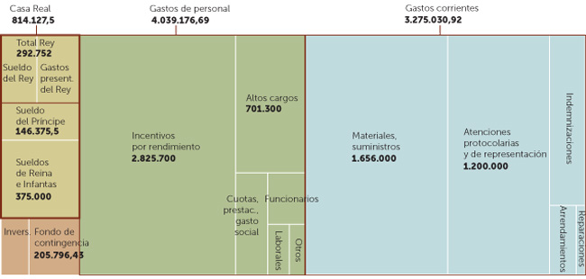

Wed, 07 Mar 2012 11:15:00 +0000
DARPA construye el robot cuadrúpedo más rápido del mundo
DARPA construye el robot cuadrúpedo más rápido del mundo
Los paseítos que se daba Big Dog, el robot de cuatro patas diseñado por Boston Dynamics, han quedado un poco deslucidos. La propia compañía, en cooperación con la agencia DARPA, acaba de presentar en escena a Cheetah, un robot cuadrúpedo capaz de correr a 29 kilómetros por hora sobre una cinta. Puede parece una nimiedad, pero deja muy atrás los 21 km/h del anterior récord, establecido en 1989 por un robot del MIT, y sus desarrolladores creen que muy pronto podrá alcanzar velocidades muy superiores.
El nombre del dispositivo, y su diseño, están inspirado en la forma de correr de los guepardos. Posee una espalda articulada que se flexiona hacia atrás y hacia adelante con cada zancada aprovechando el movimiento igual que hace este animal.
Las investigaciones de DARPA, que depende del Departamento de Defensa de EEUU, se enmarcan dentro del programa de mejora de sus dispositivos militares. Recientemente han patrocinado el diseño de las primeras lentillas que pueden permitir realidad aumentada y trabajan en robots bípedos, como PETMAN, y dispositivos robóticos que permitan a sus tropas caminar más kilómetros sin cansarse. El objetivo de este tipo de robots veloces podría ser también militar y algunas fuentes especulan con que se utilice para perseguir enemigos.
Aunque las primeras pruebas se han realizado sobre una cinta, antes de que acabe el año la compañía tiene previsto probar el robot en campo abierto. Las previsiones de Boston Dynamics son que alcance hasta los 80 km/h, impresionante para un robot pero aún lejos de los 112 km/h que alcanza un guepardo cuando se lanza a la caza de su presa.
* Ver también: Los peligros de Youtube: ‘Informativos Telecinco’ ilustra un nuevo robot con imágenes de 2008 (Telediaria)
Los paseítos que se daba Big Dog, el robot de cuatro patas diseñado por Boston Dynamics, han quedado un poco deslucidos. La propia compañía, en cooperación con la agencia DARPA, acaba de presentar en escena a Cheetah, un robot cuadrúpedo capaz de correr a 29 kilómetros por hora sobre una cinta. Puede parece una nimiedad, pero deja muy atrás los 21 km/h del anterior récord, establecido en 1989 por un robot del MIT, y sus desarrolladores creen que muy pronto podrá alcanzar velocidades muy superiores.
El nombre del dispositivo, y su diseño, están inspirado en la forma de correr de los guepardos. Posee una espalda articulada que se flexiona hacia atrás y hacia adelante con cada zancada aprovechando el movimiento igual que hace este animal.
Las investigaciones de DARPA, que depende del Departamento de Defensa de EEUU, se enmarcan dentro del programa de mejora de sus dispositivos militares. Recientemente han patrocinado el diseño de las primeras lentillas que pueden permitir realidad aumentada y trabajan en robots bípedos, como PETMAN, y dispositivos robóticos que permitan a sus tropas caminar más kilómetros sin cansarse. El objetivo de este tipo de robots veloces podría ser también militar y algunas fuentes especulan con que se utilice para perseguir enemigos.
Aunque las primeras pruebas se han realizado sobre una cinta, antes de que acabe el año la compañía tiene previsto probar el robot en campo abierto. Las previsiones de Boston Dynamics son que alcance hasta los 80 km/h, impresionante para un robot pero aún lejos de los 112 km/h que alcanza un guepardo cuando se lanza a la caza de su presa.
* Ver también: Los peligros de Youtube: ‘Informativos Telecinco’ ilustra un nuevo robot con imágenes de 2008 (Telediaria)
Wed, 07 Mar 2012 05:00:00 +0000
iPad 3: ¿Qué se espera del nuevo invento de Apple?
iPad 3: ¿Qué se espera del nuevo invento de Apple?
Faltan apenas unas horas para que Apple presente, casi con toda seguridad, el iPad 3, un equipo muy esperado por los fanboys de la compañía que en su día fundara Steve Jobs.
Se habla de casi todo: cómo será su diseño, su potencia de procesamiento de operaciones, el display…
Con todo lo que hemos recogido de internet, hemos hecho nuestra
particular quiniela sobre cómo podría ser el nuevo iPad 3. Aquí la
tienes:El display: En este apartado la
rumorología es mucha y diversa. Es casi seguro que contará con pantalla
retina (como la del iPhone) pero tampoco se descarta la integración de
tecnología 3D para ver imágenes y vídeos en tres dimensiones sin gafas.
Su resolución sería de 2048 × 1536 píxeles.Más batería: Diferentes páginas
norteamericanas se han hecho eco del rumor. Apple podría estar
trabajando en una batería de larga duración que incrementaría
notablemente la autonomía del iPad 3.Nuevo sistema operativo: El iPad 3 incluiría una nueva versión de la plataforma de Apple para dispositivos móviles, iOS6.Mejor procesador: Algunas webs
norteamericanas apuntan a que adoptará el procesador A6, un chip
con cuatro núcleos que incrementará la velocidad del iPad3 y compatible con redes de cuarta generación (4G).Precio: La mayoría de medios y
blogs apuesta por que los de Cupertino mantendrán en el iPad 3 los mismos
precios que en el iPad 2. 16GB (499 dólares), 32 (599 dólares) y 64 GB (699 dólares),
para las versiones Wi-Fi.Un iPad para competir con Kindle: Además
del iPad 3, se dice que Apple presentará otra versión más económica, de
8 pulgadas, con la que entraría a competir con el Kindle Fire.
Faltan apenas unas horas para que Apple presente, casi con toda seguridad, el iPad 3, un equipo muy esperado por los fanboys de la compañía que en su día fundara Steve Jobs.
Se habla de casi todo: cómo será su diseño, su potencia de procesamiento de operaciones, el display…
Con todo lo que hemos recogido de internet, hemos hecho nuestra
particular quiniela sobre cómo podría ser el nuevo iPad 3. Aquí la
tienes:
El display: En este apartado la
rumorología es mucha y diversa. Es casi seguro que contará con pantalla
retina (como la del iPhone) pero tampoco se descarta la integración de
tecnología 3D para ver imágenes y vídeos en tres dimensiones sin gafas.
Su resolución sería de 2048 × 1536 píxeles.
Más batería: Diferentes páginas
norteamericanas se han hecho eco del rumor. Apple podría estar
trabajando en una batería de larga duración que incrementaría
notablemente la autonomía del iPad 3.
Nuevo sistema operativo: El iPad 3 incluiría una nueva versión de la plataforma de Apple para dispositivos móviles, iOS6.
Mejor procesador: Algunas webs
norteamericanas apuntan a que adoptará el procesador A6, un chip
con cuatro núcleos que incrementará la velocidad del iPad3 y compatible con redes de cuarta generación (4G).
Precio: La mayoría de medios y
blogs apuesta por que los de Cupertino mantendrán en el iPad 3 los mismos
precios que en el iPad 2. 16GB (499 dólares), 32 (599 dólares) y 64 GB (699 dólares),
para las versiones Wi-Fi.
Un iPad para competir con Kindle: Además
del iPad 3, se dice que Apple presentará otra versión más económica, de
8 pulgadas, con la que entraría a competir con el Kindle Fire.
Wed, 07 Mar 2012 10:39:00 +0000
La CEOE destaca que la reforma laboral reduce los despidos improcedentes del 60% al 10%
La CEOE destaca que la reforma laboral reduce los despidos improcedentes del 60% al 10%
El presidente de la CEOE, Juan Rosell, ha afirmado que la reforma laboral aprobada por el Gobierno permitirá que únicamente el 10% o el 15% de los despidos que se efectúen en España sean improcedentes, frente al 80% de hace unos años o el 60% que se logró tras la reforma del mercado de trabajo que hizo el PSOE cuando gobernaba. "El 10% o el 15% es lo normal, porque el despido improcedente es una anomalía", ha añadido.Rosell, en declaraciones a TVE recogidas por Europa Press, ha explicado que la reforma laboral hace más "claras y concretas" las causas del despido, pero "no despiadadas", y ha indicado que el número de despidos a medio plazo "no será peor del que se ha tenido en el último año o hace dos años".El líder de la CEOE ha insistido en que la reforma permite a las empresas reestructurarse en lugar de despedir y ha advertido de que si no se hubiera hecho nada, habría sido imposible crear empleo cuando la economía se reactive.Rosell cree que ésta no será la última reforma del mercado de trabajo, pues las leyes deben ir adaptándose a las circunstancias de la economía, y ha confiado en que España no llegue a los seis millones de parados. "Todo es posible, pero ojalá que no", ha dicho.En todo caso, el dirigente empresarial se fía más de los datos de los servicios públicos de empleo (4,7 millones de parados) que los de la Encuesta de Población Activa (5,29 millones de desempleados). "Casi, casi que haría desaparecer la EPA, porque es una encuesta que lo único que hace es calentarnos la cabeza", ha apuntado Rosell, que espera que la situación mejore a finales de este año.El líder de la patronal española ha indicado que una de las cosas que más preocupan a la CEOE es que la protección por desempleo está empezando a no llegar a todo el mundo. "La cohesión social de este país es el dato número uno y no la podemos romper. En 2002 nos gastábamos 9.000 millones en subsidios, ahora nos gastamos 2.500 millones al mes, unos 30.000 millones al año. De cara al futuro, tendremos que ocupar más dinero para pagarlos", ha señalado. Rosell no ha querido entrar en si hay que modificar la legislación española para que se pierda la prestación al primer o segundo rechazo de una oferta de empleo y no al tercero, como está establecido ahora, aunque ha recordado que la mayor parte de países sí están cambiando el criterio. En su opinión, lo más importante durante la estancia en el desempleo es formarse. Reducción de empleados públicosRosell, que ha dicho estar "absolutamente en contra de una amnistía fiscal" se ha referido también al nuevo objetivo de déficit para este año (5,8% del PIB) y, como ya hecho en alguna que otra ocasión, ha advertido de que será "casi imposible" cumplirlo si no se ahorra y se hacen reformas. "Lo que no podemos es decir que todos los males de este mundo son las comunidades y los ayuntamientos. El estado de las autonomías ha sido tremendamente importante en muchas cosas", ha apuntado.El presidente de la CEOE cree que, dentro del recorte del gasto que será necesario para reducir el déficit, "probablemente" se produzca una reducción del número de empleados públicos. "En ayuntamientos, el gasto medio en personal representa el 33%, aunque hay algunos que tienen el 43%. Ya le digo yo que en los del 43% sobra personal", ha precisado.Por otra parte, Rosell se ha mostrado a favor de regular el derecho de huelga, tal y como se está haciendo en Europa. "En todo lo que sean servicios públicos y básicos ha de haber una manera de poner servicios mínimos y que unos pocos no puedan paralizar el país. Nos hemos quedado un poco anticuados y sería bueno que nos lo fuéramos replanteando", ha subrayado.
El presidente de la CEOE, Juan Rosell, ha afirmado que la reforma laboral aprobada por el Gobierno permitirá que únicamente
el 10% o el 15% de los despidos que se efectúen en España sean improcedentes, frente al 80% de hace unos años o el 60% que se logró tras la reforma del mercado de trabajo que hizo el PSOE cuando gobernaba.
"El 10% o el 15% es lo normal, porque el despido improcedente es una anomalía", ha añadido.
Rosell, en declaraciones a TVE recogidas por Europa Press, ha explicado que la reforma laboral hace más "claras y concretas" las causas del despido, pero "no despiadadas", y ha indicado que el número de despidos a medio plazo "no será peor del que se ha tenido en el último año o hace dos años".
El líder de la CEOE ha insistido en que la reforma permite a las empresas reestructurarse en lugar de despedir y ha advertido de que si no se hubiera hecho nada, habría sido imposible crear empleo cuando la economía se reactive.
Rosell cree que ésta no será la última reforma del mercado de trabajo, pues las leyes deben ir adaptándose a las circunstancias de la economía, y ha confiado en que España no llegue a los seis millones de parados. "Todo es posible, pero ojalá que no", ha dicho.
En todo caso, el dirigente empresarial se fía más de los datos de los servicios públicos de empleo (4,7 millones de parados) que los de la Encuesta de Población Activa (5,29 millones de desempleados). "Casi, casi que haría desaparecer la EPA, porque es una encuesta que lo único que hace es calentarnos la cabeza", ha apuntado Rosell, que espera que la situación mejore a finales de este año.
El líder de la patronal española ha indicado que una de las cosas que más preocupan a la CEOE es que la protección por desempleo está empezando a no llegar a todo el mundo. "La cohesión social de este país es el dato número uno y no la podemos romper. En 2002 nos gastábamos 9.000 millones en subsidios, ahora nos gastamos 2.500 millones al mes, unos 30.000 millones al año. De cara al futuro, tendremos que ocupar más dinero para pagarlos", ha señalado.
Rosell no ha querido entrar en si hay que modificar la legislación española para que se pierda la prestación al primer o segundo rechazo de una oferta de empleo y no al tercero, como está establecido ahora, aunque ha recordado que la mayor parte de países sí están cambiando el criterio. En su opinión, lo más importante durante la estancia en el desempleo es formarse.
Reducción de empleados públicos
Rosell, que ha dicho estar "absolutamente en contra de una amnistía fiscal" se ha referido también al nuevo objetivo de déficit para este año (5,8% del PIB) y, como ya hecho en alguna que otra ocasión, ha advertido de que será "casi imposible" cumplirlo si no se ahorra y se hacen reformas. "Lo que no podemos es decir que todos los males de este mundo son las comunidades y los ayuntamientos. El estado de las autonomías ha sido tremendamente importante en muchas cosas", ha apuntado.
El presidente de la CEOE cree que, dentro del recorte del gasto que será necesario para reducir el déficit, "probablemente" se produzca una reducción del número de empleados públicos. "En ayuntamientos, el gasto medio en personal representa el 33%, aunque hay algunos que tienen el 43%. Ya le digo yo que en los del 43% sobra personal", ha precisado.
Por otra parte, Rosell se ha mostrado a favor de regular el derecho de huelga, tal y como se está haciendo en Europa. "En todo lo que sean servicios públicos y básicos ha de haber una manera de poner servicios mínimos y que unos pocos no puedan paralizar el país. Nos hemos quedado un poco anticuados y sería bueno que nos lo fuéramos replanteando", ha subrayado.
Andalucía deberá aclarar sus facturas dudosas si quiere acceder al plan de proveedores
Andalucía deberá aclarar sus facturas dudosas si quiere acceder al plan de proveedores
Esto es lo que pasa cuando se lleva al terreno político las grandes cifras económicas. Que la trampa salta por cualquier lado: Andalucía fue la única comunidad que votó ayer contra el compromiso de cerrar el año en un déficit del 1,5% y el Ministerio de Hacienda ha replicado que de acuerdo, que haga lo que quiera, pero que esta negativa tendrá consecuencias. La más urgente debe decidirse antes del 1 de abril, apenas seis días después de las elecciones autonómicas en esta región. Para entonces, las comunidades deben presentar su solicitud para incorporarse al mecanismo especial de pago a proveedores. Y aquí viene el primer cebo lanzado por Cristóbal Montoro: si Andalucía quiere pagar sus obras y servicios (y así no castigar a sus propios autónomos y pymes en relación a los del resto del país) tendrá que pagar un doble peaje (como todas, pero las demás han acatado todo lo acordado por el Consejo de Política Fiscal y Financiera).El primer peaje consiste en presentar un plan de viabilidad que sustente el abono a sus proveedores (es decir, que tendrá que ajustarse a los criterios que le lleven al 1,5% de déficit que acaba de rechazar); y el segundo, exponer todas y cada una de sus facturas pendientes. "Estudiaremos a fondo toda su documentación", ha avisado el ministro de Hacienda, sin necesidad de mencionar escándalos recientes de la administración andaluza como el caso de los EREs o la polémica de Invercaria. En principio, el procedimiento es idéntico para todas las regiones que quieran adherirse al plan. La diferencia radica en que Andalucía fue la única que nombró Montoro expresamente. En cualquier caso, el mecanismo especial de pago a proveedores se ha convertido en la mejor forma de descubrir el verdadero agujero de las autonomías. Ya lo dejó entrever el Ministerio cuando lo impulsó para los ayuntamientos y ayer ahondó en esta línea al descartar casi por completo la línea ICO que también iba a cubrir esta deuda y que incluso había sido dotada con 10.000 millones (ampliables a 15.000 llegado el caso)Ya no. El sistema preferente pasa a ser el que exige un desnudo integral de las cuentas y un plan de saneamiento acorde con el nuevo préstamo en el que van a incurrir las administraciones (a diez años, con un tipo en torno al 5% y con los dos primeros años de carencia, o sea, pagando sólo los intereses).En total, y según las primeras estimaciones, el plan de proveedores podría rondar los 35.000 millones de euros, si bien hasta que no reciban en Hacienda toda la información sobre las facturas no se concretará el volumen. La idea es que a mediados de mayo empiecen a cobrar los primeros acreedores de los gobiernos autónomos.Una vez conocida la situación financiera de ayuntamientos y autonomías, el Ministerio servirá de avalista ante los bancos, que serán los que concedan el crédito a las administraciones en los términos antes explicados. El Estado no pierde en teoría nunca, ya que si un municipio o una región dejan de pagar, le restaría en un último término los pagos de financiación correspondientes.
Esto es lo que pasa cuando se lleva al terreno político las grandes cifras económicas. Que la trampa salta por cualquier lado: Andalucía fue la única comunidad que votó ayer contra el compromiso de cerrar el año en un déficit del 1,5% y el Ministerio de Hacienda ha replicado que de acuerdo, que haga lo que quiera, pero que esta negativa tendrá consecuencias.
La más urgente debe decidirse antes del 1 de abril, apenas seis días después de las elecciones autonómicas en esta región. Para entonces, las comunidades deben presentar su solicitud para incorporarse al mecanismo especial de pago a proveedores.
Y aquí viene el primer cebo lanzado por Cristóbal Montoro: si Andalucía quiere pagar sus obras y servicios (y así no castigar a sus propios autónomos y pymes en relación a los del resto del país) tendrá que pagar un doble peaje (como todas, pero las demás han acatado todo lo acordado por el Consejo de Política Fiscal y Financiera).
El primer peaje consiste en presentar un plan de viabilidad que sustente el abono a sus proveedores (es decir, que tendrá que ajustarse a los criterios que le lleven al 1,5% de déficit que acaba de rechazar); y el segundo, exponer todas y cada una de sus facturas pendientes.
"Estudiaremos a fondo toda su documentación", ha avisado el ministro de Hacienda, sin necesidad de mencionar escándalos recientes de la administración andaluza como el caso de los EREs o la polémica de Invercaria. En principio, el procedimiento es idéntico para todas las regiones que quieran adherirse al plan. La diferencia radica en que Andalucía fue la única que nombró Montoro expresamente.
En cualquier caso, el mecanismo especial de pago a proveedores se ha convertido en la mejor forma de descubrir el verdadero agujero de las autonomías. Ya lo dejó entrever el Ministerio cuando lo impulsó para los ayuntamientos y ayer ahondó en esta línea al descartar casi por completo la línea ICO que también iba a cubrir esta deuda y que incluso había sido dotada con 10.000 millones (ampliables a 15.000 llegado el caso)
Ya no. El sistema preferente pasa a ser el que exige un desnudo integral de las cuentas y un plan de saneamiento acorde con el nuevo préstamo en el que van a incurrir las administraciones (a diez años, con un tipo en torno al 5% y con los dos primeros años de carencia, o sea, pagando sólo los intereses).
En total, y según las primeras estimaciones, el plan de proveedores podría rondar los 35.000 millones de euros, si bien hasta que no reciban en Hacienda toda la información sobre las facturas no se concretará el volumen. La idea es que a mediados de mayo empiecen a cobrar los primeros acreedores de los gobiernos autónomos.
Una vez conocida la situación financiera de ayuntamientos y autonomías, el Ministerio servirá de avalista ante los bancos, que serán los que concedan el crédito a las administraciones en los términos antes explicados.
El Estado no pierde en teoría nunca, ya que si un municipio o una región dejan de pagar, le restaría en un último término los pagos de financiación correspondientes.
Wed, 07 Mar 2012 07:55:00 +0000
Los republicanos siguen sin decidirse: Romney gana por poco un 'Supermartes' muy repartido
Los republicanos siguen sin decidirse: Romney gana por poco un 'Supermartes' muy repartido
Gráfico: Resultados de las primarias republicanas
Mitt Romney sumó hoy una quinta victoria en la jornada del 'Supermartes' de primarias republicanas en EEUU al vencer en Ohio, el estado clave (aunque por un solo punto). Romney ha vencido también en Idaho, Massachussetts, Virginia, Vermont, Wyoming y Alaska según los medios estadounidenses.
Romney, exgobernador de Massachussetts y el más adinerado de todos los candidatos, se apuntó la victoria más importante de la noche del 'Supermartes' al triunfar por apenas un 1% de los votos en Ohio. El recuento de Ohio fue el más prolongado de la noche, en el que los dos candidatos marcharon codo con codo, con pequeñas ventajas que se iban alternando a medida que avanzaban las sumas de votos.
El triunfo en este estado será clave en las elecciones presidenciales de noviembre y representa un importante espaldarazo para Romney, que puede presumir ahora de haberse impuesto en los principales estados en disputa.
Una derrota hubiera sido una enorme bofetada para este precandidato, cuya campaña ha invertido cuatro veces más que la de Santorum en este estado, que ponía en juego 66 delegados. Ningún candidato republicano ha logrado llegar a la Casa Blanca sin imponerse en Ohio.
El exgobernador de Massachussetts rompió el empate técnico con el exsenador Rick Santorum, el más conservador, que acumula tres victorias, al imponerse en los caucus (asambleas populares) de Idaho y ahora consigue marcar distancias imponiéndose en Ohio.Amarga victoria de Romney: es insuficiente
Los sondeos a boca de urna muestran que los ciudadanos de Ohio consideran que Romney tiene más posibilidades de vencer a Obama, pero creen que Santorum está más cercano a las preocupaciones de los estadounidenses promedio, que representan la mayor parte de los votantes.
Según AP, ahora Romney cuenta con 407 delegados, frente a los 169 de Santorum y los 102 de Gingrich. El cuarto contendiente en las primarias republicanas, el congresista Ron Paul, sumará 41.Hasta este Supermartes, Romney contaba con 203 delegados, mientras que Santorum acumulaba 92. Gingrich cuenta por el momento con 33 delegados.
Son necesarios 1.144 delegados para asegurarse la nominación presidencial republicana, que se anunciará en la convención de finales de agosto en Tampa. De estas once votaciones, siete de ellas son elecciones primarias, y por tanto más decisivas (Ohio, Massachussetts, Virginia, Vermont, Tennessee, Oklahoma y Georgia), mientras que las otras cuatro son caucus (Wyoming, Alaska, Idaho y Dakota del Norte).Santorum consigue mantenerse como la alternativa
Si los triunfos de Romney esta noche saben a poco, Santorum tuvo en cambio una jornada grata. Se impuso con comodidad en los estados de Tennessee y Oklahoma, en ese medio oeste que tan fiel le ha sido hasta el momento en esta temporada de primarias, y logró una victoria por sorpresa en Dakota del Norte.
Y su derrota por tan escaso margen resta impulso a su principal rival, al que impide proclamarse como el candidato inevitable del partido. Así las cosas, la jornada de hoy esclarece poco la carrera republicana. Tan solo deja clara una cosa: la campaña será larga y, pese al triunfo de Gingrich en Georgia -su estado de origen- parece cosa de dos.Reparto de delegados
De Idaho dependen 32 de los 419 delegados que están en juego
en la jornada de hoy, en la que votan otros nueve estados:
Massachusetts, Virginia, Vermont, Tennessee, Oklahoma, Georgia, Dakota
del Norte, Alaska, Wyoming y Ohio. Los comicios han dado como ganador en
Tennessee, Oklahoma y Dakota del Norte a Santorum.De los once estados convocados a las urnas, Georgia es donde estaban en juego más delegados,
76, mientras que en Virginia, donde sólo competían Romney y el
congresista Ron Paul, se disputaban 46. Vermont ponía en juego 17
delegados.Precisamente Georgia ha sido el lugar donde Gingrich ha
logrado rascar una victoria y se ha hecho con 32 delegados con un 96%
de los votos escrutados. Ron Paul ha tomado la delantera durante un tiempo en Dakota del Norte y
parecía que las victorias iban a estar todavía más repartidas, aunque
finalmente ha sido Santorum quien se ha adjudicado el mayor número de
delegados en este estado.Las próximas votaciones
Las siguientes citas tendrán lugar este mismo sábado, cuando además de los territorios de las islas Vírgenes y Guam, que disputarán en caucus un total de quince delegados, celebrará primarias el estado de Kansas, que pone en juego cuarenta delegados.
La semana próxima serán los estados sureños de Alabama y Misisipi, además de Hawai, los convocados a las urnas. A priori se trata de estados donde la corriente conservadora tiene un gran peso.
Por ello, los resultados que consiga Romney allí serán claves. Un triunfo podría suponer que los conservadores han optado, si bien a regañadientes, por aceptarle como el candidato del partido.
Una victoria de Santorum o de Gingrich repetiría el mensaje de que el ala derechista del partido mantiene aún profundas reservas sobre el hoy por hoy favorito. Y alejaría un poco más en el tiempo el fin de estas primarias.
-
Gráfico: Resultados de las primarias republicanas
Mitt Romney sumó hoy una quinta victoria en la jornada del 'Supermartes' de primarias republicanas en EEUU al vencer en
Ohio, el estado clave (aunque por un solo punto). Romney ha vencido también en
Idaho,
Massachussetts, Virginia, Vermont, Wyoming y Alaska según los medios estadounidenses.
Romney, exgobernador de Massachussetts y el más adinerado de todos los candidatos, se apuntó la victoria más importante de la noche del 'Supermartes' al triunfar por apenas un 1% de los votos en Ohio. El recuento de Ohio fue el más prolongado de la noche, en el que los dos candidatos marcharon codo con codo, con pequeñas ventajas que se iban alternando a medida que avanzaban las sumas de votos.
El triunfo en este estado será clave en las elecciones presidenciales de noviembre y representa un importante espaldarazo para Romney, que puede presumir ahora de haberse impuesto en los principales estados en disputa.
Una derrota hubiera sido una enorme bofetada para este precandidato, cuya campaña ha invertido cuatro veces más que la de Santorum en este estado, que ponía en juego 66 delegados. Ningún candidato republicano ha logrado llegar a la Casa Blanca sin imponerse en Ohio.
El exgobernador de Massachussetts rompió el empate técnico con el exsenador Rick Santorum, el más conservador, que acumula tres victorias, al imponerse en los caucus (asambleas populares) de Idaho y ahora consigue marcar distancias imponiéndose en Ohio.
Amarga victoria de Romney: es insuficiente
Los sondeos a boca de urna muestran que los ciudadanos de Ohio consideran que Romney tiene más posibilidades de vencer a Obama, pero creen que Santorum está más cercano a las preocupaciones de los estadounidenses promedio, que representan la mayor parte de los votantes.
Según AP, ahora Romney cuenta con 407 delegados, frente a los 169 de Santorum y los 102 de Gingrich. El cuarto contendiente en las primarias republicanas, el congresista Ron Paul, sumará 41.
Hasta este Supermartes, Romney contaba con 203 delegados, mientras que Santorum acumulaba 92. Gingrich cuenta por el momento con 33 delegados.
Son necesarios 1.144 delegados para asegurarse la nominación presidencial republicana, que se anunciará en la convención de finales de agosto en Tampa. De estas once votaciones, siete de ellas son elecciones primarias, y por tanto más decisivas (Ohio, Massachussetts, Virginia, Vermont, Tennessee, Oklahoma y Georgia), mientras que las otras cuatro son caucus (Wyoming, Alaska, Idaho y Dakota del Norte).
Santorum consigue mantenerse como la alternativa
Si los triunfos de Romney esta noche saben a poco, Santorum tuvo en cambio una jornada grata. Se impuso con comodidad en los estados de Tennessee y Oklahoma, en ese medio oeste que tan fiel le ha sido hasta el momento en esta temporada de primarias, y logró una victoria por sorpresa en Dakota del Norte.
Y su derrota por tan escaso margen resta impulso a su principal rival, al que impide proclamarse como el candidato inevitable del partido. Así las cosas, la jornada de hoy esclarece poco la carrera republicana.
Tan solo deja clara una cosa: la campaña será larga y, pese al triunfo de Gingrich en Georgia -su estado de origen- parece cosa de dos.
Reparto de delegados
De Idaho dependen 32 de los 419 delegados que están en juego
en la jornada de hoy, en la que votan otros nueve estados:
Massachusetts, Virginia, Vermont, Tennessee, Oklahoma, Georgia, Dakota
del Norte, Alaska, Wyoming y Ohio. Los comicios han dado como ganador en
Tennessee, Oklahoma y Dakota del Norte a Santorum.
De los once estados convocados a las urnas, Georgia es donde estaban en juego más delegados,
76, mientras que en Virginia, donde sólo competían Romney y el
congresista Ron Paul, se disputaban 46. Vermont ponía en juego 17
delegados.
Precisamente Georgia ha sido el lugar donde Gingrich ha
logrado rascar una victoria y se ha hecho con 32 delegados con un 96%
de los votos escrutados.
Ron Paul ha tomado la delantera durante un tiempo en Dakota del Norte y
parecía que las victorias iban a estar todavía más repartidas, aunque
finalmente ha sido Santorum quien se ha adjudicado el mayor número de
delegados en este estado.
Las próximas votaciones
Las siguientes citas tendrán lugar este mismo sábado, cuando además de los territorios de las islas Vírgenes y Guam, que disputarán en caucus un total de quince delegados, celebrará primarias el estado de Kansas, que pone en juego cuarenta delegados.
La semana próxima serán los estados sureños de Alabama y Misisipi, además de Hawai, los convocados a las urnas. A priori se trata de estados donde la corriente conservadora tiene un gran peso.
Por ello, los resultados que consiga Romney allí serán claves. Un triunfo podría suponer que los conservadores han optado, si bien a regañadientes, por aceptarle como el candidato del partido.
Una victoria de Santorum o de Gingrich repetiría el mensaje de que el ala derechista del partido mantiene aún profundas reservas sobre el hoy por hoy favorito. Y alejaría un poco más en el tiempo el fin de estas primarias.
Wed, 07 Mar 2012 12:27:00 +0000
‘Joe, el fontanero’, a un paso de cambiar las tuberías por un asiento en el Congreso de EEUU
‘Joe, el fontanero’, a un paso de cambiar las tuberías por un asiento en el Congreso de EEUU
“¿Qué hace un rudo fontanero de Ohio en el Capitolio? Desatascar las tuberías del Congreso”. Aunque suene a chiste como las decenas que invaden a estas horas los foros de los medios de comunicación estadounidenses, el próximo mes de noviembre Joe Wurzelbacher –más conocido como ‘Joe, el fontanero’– podría convertirse en el primer ‘pocero’ en llegar a la Cámara de Representantes de Washington. Wurzelbacher, que en 2008 acompañó a John McCain durante la campaña para las elecciones presidenciales como representante del trabajador medio estadounidense, se ha convertido en uno de los grandes vencedores del ‘supermartes’ electoral en EEUU.‘Joe, el fontanero’ se ha ganado oficialmente la nominación como candidato republicano del noveno distrito electoral de Ohio, tras derrotar en las primarias del partido a su rival, Steve Kraus. Dentro de ocho meses deberá medirse al veterano representante demócrata Marcy Kaptur por un asiento en el Congreso.El aspirante republicano de Ohio a colarse en las cloacas de la política estadounidense se convirtió en figura pública hace cuatro años, después de poner en aprietos al entonces candidato Barack Obama delante de las cámaras de la televisión nacional durante una vista a su ciudad, Toledo.Por aquel entonces, Joe Wurzelbacher no era más que un profesional de la fontanería que llevaba 15 años trabajando para una compañía que deseaba comprar, pero que temía no poder cumplir con su sueño si Obama llegaba al poder y se aumentaban las cargas fiscales sobre las empresas.Joe y Obama hablaron durante seis minutos, delante de las cámaras, y aquellas imágenes se convirtieron en un famoso vídeo viral que recorrió internet. “Estoy a punto de comprar una empresa con unos beneficios anuales de entre 250.000 y 280.000 dólares. ¿Tu propuesta fiscal me hará pagar más impuestos?”, le espetó el fontanero al ahora presidente.Obama había fijado en su programa los 250.000 dólares como la frontera que marcaría si una empresa recibiría o no una subida de impuestos. El presidente argumentó que el 98% de las pymes en EEUU se encuentran por debajo de esta cifra, pero a Joe no le convenció su respuesta y se unió públicamente a la causa de John McCain.
“¿Qué hace un rudo fontanero de Ohio en el Capitolio? Desatascar las tuberías del Congreso”. Aunque suene a chiste como las decenas que invaden a estas horas los foros de los medios de comunicación estadounidenses, el próximo mes de noviembre Joe Wurzelbacher –más conocido como ‘Joe, el fontanero’– podría convertirse en el primer ‘pocero’ en llegar a la Cámara de Representantes de Washington.
Wurzelbacher, que en 2008 acompañó a John McCain durante la campaña para las elecciones presidenciales como representante del trabajador medio estadounidense, se ha convertido en uno de los grandes vencedores del ‘supermartes’ electoral en EEUU.
‘Joe, el fontanero’ se ha ganado oficialmente la nominación como candidato republicano del noveno distrito electoral de Ohio, tras derrotar en las primarias del partido a su rival, Steve Kraus. Dentro de ocho meses deberá medirse al veterano representante demócrata Marcy Kaptur por un asiento en el Congreso.
El aspirante republicano de Ohio a colarse en las cloacas de la política estadounidense se convirtió en figura pública hace cuatro años, después de poner en aprietos al entonces candidato Barack Obama delante de las cámaras de la televisión nacional durante una vista a su ciudad, Toledo.
Por aquel entonces, Joe Wurzelbacher no era más que un profesional de la fontanería que llevaba 15 años trabajando para una compañía que deseaba comprar, pero que temía no poder cumplir con su sueño si Obama llegaba al poder y se aumentaban las cargas fiscales sobre las empresas.
Joe y Obama hablaron durante seis minutos, delante de las cámaras, y aquellas imágenes se convirtieron en un famoso vídeo viral que recorrió internet. “Estoy a punto de comprar una empresa con unos beneficios anuales de entre 250.000 y 280.000 dólares. ¿Tu propuesta fiscal me hará pagar más impuestos?”, le espetó el fontanero al ahora presidente.
Obama había fijado en su programa los 250.000 dólares como la frontera que marcaría si una empresa recibiría o no una subida de impuestos. El presidente argumentó que el 98% de las pymes en EEUU se encuentran por debajo de esta cifra, pero a Joe no le convenció su respuesta y se unió públicamente a la causa de John McCain.
Wed, 07 Mar 2012 05:00:00 +0000
Brasil supera a Reino Unido y ya es la sexta economía más fuerte del mundo
Brasil supera a Reino Unido y ya es la sexta economía más fuerte del mundo
Brasil ya es la sexta potencia mundial, gracias a que el PIB del país latinoamericano creció un 2,7% en 2011, según ha anunciado el Instituto Brasileño de Geografía y Estadísticas (IBGE) brasileño.En concreto, su economía sumó 4,143 billones de reales en 2011 (unos 2,408 billones de dólares al cambio actual), lo que convierte a Brasil en la sexta mayor economía del mundo, por delante de Reino Unido. La tasa de crecimiento del año pasado estuvo por debajo de las últimas previsiones del Gobierno, que esperaba un 3%, y de los economistas del mercado, que proyectaban un 2,8%.Para este año, en cambio, el Gobierno espera que el PIB crezca un 4,5%, mientras que los economistas pronostican un 3,3%.La desaceleración económica en 2011 redujo la tasa de crecimiento del PIB per cápita desde el 6,5% en 2010 hasta el 1,8%el año pasado, cuando fue de 21.252 reales (unos 12.356 dólares) por habitante.
Brasil ya es la sexta potencia mundial, gracias a que el PIB del país latinoamericano creció un 2,7% en 2011, según ha anunciado el Instituto Brasileño de Geografía y Estadísticas (IBGE) brasileño.
En concreto, su economía sumó 4,143 billones de reales en 2011 (unos 2,408 billones de dólares al cambio actual), lo que convierte a Brasil en la sexta mayor economía del mundo, por delante de Reino Unido.
La tasa de crecimiento del año pasado estuvo por debajo de las últimas previsiones del Gobierno, que esperaba un 3%, y de los economistas del mercado, que proyectaban un 2,8%.
Para este año, en cambio, el Gobierno espera que el PIB crezca un 4,5%, mientras que los economistas pronostican un 3,3%.
La desaceleración económica en 2011 redujo la tasa de crecimiento del PIB per cápita desde el 6,5% en 2010 hasta el 1,8%el año pasado, cuando fue de 21.252 reales (unos 12.356 dólares) por habitante.
Wed, 07 Mar 2012 05:00:00 +0000
Fukushima continúa siendo una región fantasma doce meses después
Fukushima continúa siendo una región fantasma doce meses después
En la vasta franja costera golpeada por el tsunami del 11 de marzo hay señales visibles de progreso. Casi todas las 23 millones de toneladas de escombros han sido retiradas, aunque la reconstrucción todavía no ha empezado. Pero en la planta nuclear de Fukushima Daiichi da la impresión de que la limpieza apenas ha comenzado. Pero es que el verdadero trabajo se está haciendo dentro de los maltrechos reactores, donde el combustible nuclear continúa manteniéndose refrigerado.La fuerza destructiva de la fusión de tres reactores nucleares es evidente tan pronto el autobús con un pequeño grupo de periodistas invitados por el operador de la planta, Tokyo Electric Power (Tepco), entra en la zona de exclusión de 20 kilómetros impuesta tras la explosión del primer reactor, el 12 de marzo de 2011.En la ciudad de Naraha, la mayor parte de los edificios han salido indemne del terremoto, pero las calles están desiertas. Pasamos por delante de un supermercado en el que se ven las estanterías repletas de productos y de un aparcamiento con coches abandonados en medio del pánico generalizado.Durante el corto trayecto a la planta desde J. Village (un campo de entrenamiento de fútbol convertido en la base logística de la operación de limpieza en Fukushima Daiichi) los monitores de radiación nos alertan de la presencia del enemigo invisible que ha obligado a evacuar a 80.000 personas de sus hogares.Los niveles de radiación suben y bajan, llegando a 35 microsieverts por hora en Okuma, una aldea agrícola a dos kilómetros de la planta y que podría permanecer deshabitada durante décadas.Ver comunidades enteras abandonadas es impactante, pero no preparan a uno lo suficiente para ver de cerca los reactores dañados de Fukushima Daiichi. Uno de ellos está recubierto de vinilo, mientras que otro parece estar en buena parte intacto, con su pintura turquesa y blanca claramente visible bajo la luz brillante de una fría tarde de invierno. Los reactores número 3 y 4, sin embargo, son un amasijo de acero y escombros.Esta zona cercana a la costa, a poco nivel sobre el mar, es de lejos la parte más peligrosa tras el accidente. Los altos niveles de radiación dificultan los trabajos para limpiar las instalaciones e inspeccionar el estado del combustible. El día antes a la visita de la prensa, un robot enviado al interior del reactor número 2 detectó en un punto 200 milisieverts por hora.La proximidad de los reactores al océano los convirtió en objetivos fáciles para las olas de 14 metros provocadas por el tsunami, que sin demasiada dificultad rompieron el muro de protección de la planta nuclear. A un lado de la carretera costera, sacos de malla rellenos de rocas hacen ahora de improvisado refuerzo. Al otro lado están expuestas al aire las tripas de los edificios de las turbinas de los reactores, repletas de metal retorcido, ventanas destrozadas y camiones arrastrados hasta allí por las olas.Pero ese amasijo tan sólo cuenta la mitad de la historia. Desde el exterior, parece un enorme caos, pero dentro, el combustible nuclear dañado se mantiene refrigerado con vastas cantidades de agua, que después se almacena en tanques que cubren prácticamente cada trozo de terreno libre en las instalaciones. Posteriormente ese agua se descontamina y vuelve a enfriar los reactores.La gestión del agua es vital para evitar que el combustible se vuelva a recalentar y provoque una reacción nuclear en cadena potencialmente catastrófica, explica Katsuhiko Iwaki, vicedirector del centro de estabilización de Fukushima Daiichi.La actual capacidad de 165.000 toneladas de agua alcanzará su límite en abril, explica, señalando que Tepco está añadiendo espacio para decenas de miles de toneladas de agua adicional.El trabajo cerca de los reactores deñados todavía está plagado de peligros. “La mayoría de los trabajadores aquí trabajan en turnos de dos horas por la mañana, y otros dos por la tarde”, dice Iwaki. “Pero hay otras zonas en donde las dosis son tan altas que sólo pueden estar allí dos o tres minutos. Es el tiempo suficiente para poder conectar una manguera, antes de que salten las alarmas que indican que se tienen que marchar”.Satoshi Tarumi, que se encarga de vigilar la salud de esos trabajadores, llegó a la planta tres días después del tsunami. Las condiciones desde entonces han mejorado sensiblemente, dice, y asegura no sentir temor por su salud. “Como parte del personal de Fukushima Daiichi me siento en cierto modo responsable por lo que pasó, por eso quiero participar”, explica Tarumi, de 33 años. “Mis niveles de exposición están todavía por debajo del límite legal, y no veo ningún problema por trabajar aquí”.Se muestra igual de realistas cuando se le pregunta sobre el futuro de la industria que le da de comer. “Es al Gobierno al que le corresponde decidir sobre la energía nuclear. Yo sólo estoy aquí para hacer cuanto pueda por ayudar a estabilizar la planta”.Al mando de las operaciones en Fukushima Daiichi está Takeshi Takahashi, un hombre de apariencia seria, de habla pausada, que se convirtió el año pasado en director de la planta después de que su predecesor, Masao Yoshida, se retirase anticipadamente al serle diagnosticado un cáncer (Tepco dice que su enfermedad no está relacionada con su trabajo en la central).
En la vasta franja costera golpeada por el tsunami del 11 de marzo hay señales visibles de progreso.
Casi todas las 23 millones de toneladas de escombros han sido retiradas, aunque la reconstrucción todavía no ha empezado.
Pero en la planta nuclear de Fukushima Daiichi da la impresión de que la limpieza apenas ha comenzado.
Pero es que el verdadero trabajo se está haciendo dentro de los maltrechos reactores, donde el combustible nuclear continúa manteniéndose refrigerado.
La fuerza destructiva de la fusión de tres reactores nucleares es evidente tan pronto el autobús con un pequeño grupo de periodistas invitados por el operador de la planta, Tokyo Electric Power (Tepco), entra en la zona de exclusión de 20 kilómetros impuesta tras la explosión del primer reactor, el 12 de marzo de 2011.
En la ciudad de Naraha, la mayor parte de los edificios han salido indemne del terremoto, pero las calles están desiertas.
Pasamos por delante de un supermercado en el que se ven las estanterías repletas de productos y de un aparcamiento con coches abandonados en medio del pánico generalizado.
Durante el corto trayecto a la planta desde J. Village (un campo de entrenamiento de fútbol convertido en la base logística de la operación de limpieza en Fukushima Daiichi) los monitores de radiación nos alertan de la presencia del enemigo invisible que ha obligado a evacuar a 80.000 personas de sus hogares.
Los niveles de radiación suben y bajan, llegando a 35 microsieverts por hora en Okuma, una aldea agrícola a dos kilómetros de la planta y que podría permanecer deshabitada durante décadas.
Ver comunidades enteras abandonadas es impactante, pero no preparan a uno lo suficiente para ver de cerca los reactores dañados de Fukushima Daiichi.
Uno de ellos está recubierto de vinilo, mientras que otro parece estar en buena parte intacto, con su pintura turquesa y blanca claramente visible bajo la luz brillante de una fría tarde de invierno. Los reactores número 3 y 4, sin embargo, son un amasijo de acero y escombros.
Esta zona cercana a la costa, a poco nivel sobre el mar, es de lejos la parte más peligrosa tras el accidente. Los altos niveles de radiación dificultan los trabajos para limpiar las instalaciones e inspeccionar el estado del combustible.
El día antes a la visita de la prensa, un robot enviado al interior del reactor número 2 detectó en un punto 200 milisieverts por hora.
La proximidad de los reactores al océano los convirtió en objetivos fáciles para las olas de 14 metros provocadas por el tsunami, que sin demasiada dificultad rompieron el muro de protección de la planta nuclear.
A un lado de la carretera costera, sacos de malla rellenos de rocas hacen ahora de improvisado refuerzo.
Al otro lado están expuestas al aire las tripas de los edificios de las turbinas de los reactores, repletas de metal retorcido, ventanas destrozadas y camiones arrastrados hasta allí por las olas.
Pero ese amasijo tan sólo cuenta la mitad de la historia.
Desde el exterior, parece un enorme caos, pero dentro, el combustible nuclear dañado se mantiene refrigerado con vastas cantidades de agua, que después se almacena en tanques que cubren prácticamente cada trozo de terreno libre en las instalaciones.
Posteriormente ese agua se descontamina y vuelve a enfriar los reactores.
La gestión del agua es vital para evitar que el combustible se vuelva a recalentar y provoque una reacción nuclear en cadena potencialmente catastrófica, explica Katsuhiko Iwaki, vicedirector del centro de estabilización de Fukushima Daiichi.
La actual capacidad de 165.000 toneladas de agua alcanzará su límite en abril, explica, señalando que Tepco está añadiendo espacio para decenas de miles de toneladas de agua adicional.
El trabajo cerca de los reactores deñados todavía está plagado de peligros.
“La mayoría de los trabajadores aquí trabajan en turnos de dos horas por la mañana, y otros dos por la tarde”, dice Iwaki. “Pero hay otras zonas en donde las dosis son tan altas que sólo pueden estar allí dos o tres minutos. Es el tiempo suficiente para poder conectar una manguera, antes de que salten las alarmas que indican que se tienen que marchar”.
Satoshi Tarumi, que se encarga de vigilar la salud de esos trabajadores, llegó a la planta tres días después del tsunami.
Las condiciones desde entonces han mejorado sensiblemente, dice, y asegura no sentir temor por su salud. “Como parte del personal de Fukushima Daiichi me siento en cierto modo responsable por lo que pasó, por eso quiero participar”, explica Tarumi, de 33 años. “Mis niveles de exposición están todavía por debajo del límite legal, y no veo ningún problema por trabajar aquí”.
Se muestra igual de realistas cuando se le pregunta sobre el futuro de la industria que le da de comer. “Es al Gobierno al que le corresponde decidir sobre la energía nuclear. Yo sólo estoy aquí para hacer cuanto pueda por ayudar a estabilizar la planta”.
Al mando de las operaciones en Fukushima Daiichi está Takeshi Takahashi, un hombre de apariencia seria, de habla pausada, que se convirtió el año pasado en director de la planta después de que su predecesor, Masao Yoshida, se retirase anticipadamente al serle diagnosticado un cáncer (Tepco dice que su enfermedad no está relacionada con su trabajo en la central).
Wed, 07 Mar 2012 05:00:00 +0000
Un presunto hacker niega haber causado pérdidas millonarias a PayPal
Un presunto hacker niega haber causado pérdidas millonarias a PayPal
Un supuesto miembro del grupo Anonymous ha negado ante un juez de Londres haber participado en una serie de ataques informáticos por los que la compañía de pagos por internet PayPal calcula que sufrió pérdidas de 3,5 millones de libras (4,2 millones de euros).Ashley Rhodes, de 27 años y vecino de Londres, está acusado de perpetrar ataques informáticos a diversos sitios de internet, entre los que se encuentran, además de PayPal, eBay, Visa y Mastercard.La cadena de asaltos informáticos se habría producido entre el 1 de agosto de 2010 y el 27 de enero de 2011.Rhodes se declaró no culpable ante el juzgado de Southwark de la capital británica de un cargo de conspiración para cometer actos ilícitos a través de ordenadores, tal y como ya hizo el pasado 26 de enero Christopher Weatherhead, de 21 años y residente en Northampton (centro de Inglaterra), sobre quien pesan las mismas acusaciones.Tanto Rhodes como Weatherhead se encuentran en libertad bajo fianza, con la prohibición expresa de acceder a internet utilizando apodos.Otras dos personas, de 23 y 17 años, están acusadas en el mismo proceso por colaborar en la serie de ataques informáticos.La vista del juicio a Rhodes se desarrolló el mismo día en el que la policía detuvo en Dublín a un hombre relacionado con los grupos de "hackers" Anonymous y LulzSec.La detención de esta persona, que puede permanecer hasta 24 horas bajo custodia policial para ser interrogada, se produjo en el marco de una operación internacional contra la piratería informática, según explicó la policía irlandesa (Garda).Hoy, en Nueva York, seis miembros de Anonymous fueron acusados de cometer actos de sabotaje informático contra instituciones públicas y empresas privadas.El pasado julio, ya fue detenido en Escocia (Reino Unido) un joven de 19 años que se identificaba como portavoz del grupo de "hackers".
Un supuesto miembro del grupo Anonymous ha negado ante un juez de Londres haber participado en una serie de ataques informáticos por los que la compañía de pagos por internet PayPal calcula que sufrió pérdidas de 3,5 millones de libras (4,2 millones de euros).
Ashley Rhodes, de 27 años y vecino de Londres, está acusado de perpetrar ataques informáticos a diversos sitios de internet, entre los que se encuentran, además de PayPal, eBay, Visa y Mastercard.
La cadena de asaltos informáticos se habría producido entre el 1 de agosto de 2010 y el 27 de enero de 2011.
Rhodes se declaró no culpable ante el juzgado de Southwark de la capital británica de un cargo de conspiración para cometer actos ilícitos a través de ordenadores, tal y como ya hizo el pasado 26 de enero Christopher Weatherhead, de 21 años y residente en Northampton (centro de Inglaterra), sobre quien pesan las mismas acusaciones.
Tanto Rhodes como Weatherhead se encuentran en libertad bajo fianza, con la prohibición expresa de acceder a internet utilizando apodos.
Otras dos personas, de 23 y 17 años, están acusadas en el mismo proceso por colaborar en la serie de ataques informáticos.
La vista del juicio a Rhodes se desarrolló el mismo día en el que la policía detuvo en Dublín a un hombre relacionado con los grupos de "hackers" Anonymous y LulzSec.
La detención de esta persona, que puede permanecer hasta 24 horas bajo custodia policial para ser interrogada, se produjo en el marco de una operación internacional contra la piratería informática, según explicó la policía irlandesa (Garda).
Hoy, en Nueva York, seis miembros de Anonymous fueron acusados de cometer actos de sabotaje informático contra instituciones públicas y empresas privadas.
El pasado julio, ya fue detenido en Escocia (Reino Unido) un joven de 19 años que se identificaba como portavoz del grupo de "hackers".
Wed, 07 Mar 2012 06:00:00 +0000
Los faroles de Wikileaks
Los faroles de Wikileaks
Cinco millones de correos electrónicos de Stratfor, la “CIA en la sombra”. 287 archivos de empresas de espionaje. 779 documentos secretos de Guantánamo. 3.700 documentos polémicos sobre Israel.
250.000 cables diplomáticos de EEUU. 400.000 documentos clasificados de la guerra de Irak, otros 92.000 de Afganistán… y un vídeo mostrando un supuesto error fatal de militares estadounidenses que acribillaron a periodistas pensando que eran insurgentes.
Los números del currículum de Wikileaks resultan impactantes, los resultados de las primeras filtraciones también. Pero las cifras también engañan y la calidad de las filtraciones ha ido disminuyendo. En 2010 sorprendió al mundo con una grabación clave de la guerra de Irak titulado con ironía “Collateral Murder”. A esa filtración le siguieron documentos reveladores sobre las guerras más polémicas de los últimos años.
Después Wikileaks pasó a publicar mensajes comprometedores de la diplomacia estadounidense. Fueron mucha cantidad, pero en muchos casos no hacían más que confirmar lo que ya era vox pópuli o resultaban notablemente menos comprometedores que los anteriores documentos.
Fue la última vez que el portal de filtraciones fundado por Julian Assange dio un ‘pelotazo’. Desde entonces, el número de documentos se han reducido en cantidad o calidad.La última apuesta frustrada de Wikileaks
Incluso el último gran lanzamiento, con “5 millones de correos electrónicos” pirateados a la compañía de Inteligencia privada Stratfor han resultado ser una decepción. Es cierto que ha dado lugar al goteo de algunas revelaciones, como las sospechas de corrupción que se ciernen sobre un antiguo directivo de Goldman Sachs o la última teoría conspiratoria sobre Bin Laden (que su cuerpo fue llevado a EEUU y no tirado al océano, como aseguró la versión oficial).
Pero la propia organización del pirata informático se pilló los dedos al asegurar -a través de sus medios colaboradores- que Stratfor tenía poca credibilidad. Le echan en cara a la empresa que saque la mayor parte de su información de asuntos ya publicados en internet.Cantidad y calidad reñidas
Por otra parte, está el juego de los grandes números. De los cinco millones de correos secretos filtrados hace dos semanas, solo han salido a la luz estas dos informaciones más novedosas.
De los 400.000 documentos vendidos sobre la guerra de Irak, hubo conclusiones demoledoras como que EEUU encubrió torturas y asesinatos de civiles. Pero no es que cada uno de esos 400.000 documentos mostraran informaciones tan impactantes. Fue más bien el conjunto de muchos lo que parecía confirmarlo.
Otros muchos, consultados por este periódico, simplemente hablaban de la rutina diaria de las misiones durante la guerra o no eran más que escuetas frases de las comunicaciones y puestas al día de los militares. La misma dinámica se dio en el caso de los 92.000 documentos de Afganistán.
Aquella fue la época de gloria de la nueva garganta profunda de la era cibernética. En otoño de 2011 Wikileaks anunció que se retiraba indefinidamente por falta de dinero. Vieja gloria abandonada nada más nacerLos grandes medios como The New York Times se habían distanciado del portal después de que publicara nombres de fuentes de la diplomacia estadounidense. Las críticas de organizaciones humanitarias también fueron fuertes, por considerar que ponían en peligro la integridad de esas personas.
Ha pasado ya más de un año desde que el líder de Wikileaks, Julian Assange, fuera retenido en el Reino Unido por petición de la Fiscalía sueca. El hacker australiano lleva desde diciembre de 2010 luchando para que no le extraditen a ese país, donde dos mujeres le acusan de delitos sexuales.
Sin dinero, sin el apoyo de los medios más prestigiosos (en algunos casos ha roto relaciones el propio Assange con ellos por sentirse traicionado) y con su carismático fundador preocupado por sus peleas judiciales, Wikileaks ha intentado revivir con la filtración de Stratfor. Pero el eco de este último chivatazo informático ha sido nulo en comparación con los primeros.Es más, sobre los planes de EEUU con respecto a Irán no ha habido ninguna revelación. Estando ahora en el ojo del huracán informativo, con Israel más que dispuesto a atacar en los próximos meses con el respaldo de Obama, habría proporcionado información realmente relevante. O con la campaña electoral para las presidenciales de EEUU en marcha, Wikileaks habría podido encontrar otro filón informativo. De momento, ninguna de las dos opciones ha sucedido.Wikileaks, centrado en la causa de su líder
De los cinco millones de correos electrónicos hechos públicos el 27 de febrero pasado, Wikileaks se ha preocupado de aprovechar la ocasión para defender la causa judicial de Assange. La organización defiende que todo es una mera conspiración de EEUU para enjuiciar a quien ha puesto las cartas de la primera potencia mundial sobre la mesa. Y en estas dos últimas semanas su agencia de comunicación Sunshine Press solo ha enviado dos comunicados a los medios (en su cuenta de Twitter sí ha publicitado informaciones más diversas): el primero, anunciando la filtración; el segundo, afirmando que los mails interceptados confirman su teoría sobre EEUU.
Pero si los propios medios colaboradores de Assange han declarado que la “CIA en la sombra” es un timo, ¿qué relevancia pueden tener los cinco millones de correos que han pirateado a esta consultoría de relaciones internacionales?
Cinco millones de correos electrónicos de Stratfor, la “CIA en la sombra”. 287 archivos de empresas de espionaje. 779 documentos secretos de Guantánamo. 3.700 documentos polémicos sobre Israel.
250.000 cables diplomáticos de EEUU.
400.000 documentos clasificados de la guerra de Irak, otros 92.000 de Afganistán… y un vídeo mostrando un supuesto error fatal de militares estadounidenses que acribillaron a periodistas pensando que eran insurgentes.
Los números del currículum de Wikileaks resultan impactantes, los resultados de las primeras filtraciones también. Pero las cifras también engañan y la calidad de las filtraciones ha ido disminuyendo. En 2010 sorprendió al mundo con una grabación clave de la guerra de Irak titulado con ironía “Collateral Murder”. A esa filtración le siguieron documentos reveladores sobre las guerras más polémicas de los últimos años.
Después Wikileaks pasó a publicar mensajes comprometedores de la diplomacia estadounidense. Fueron mucha cantidad, pero en muchos casos no hacían más que confirmar lo que ya era vox pópuli o resultaban notablemente menos comprometedores que los anteriores documentos.
Fue la última vez que el portal de filtraciones fundado por Julian Assange dio un ‘pelotazo’. Desde entonces, el número de documentos se han reducido en cantidad o calidad.
La última apuesta frustrada de Wikileaks
Incluso el último gran lanzamiento, con “5 millones de correos electrónicos” pirateados a la compañía de Inteligencia privada Stratfor han resultado ser una decepción. Es cierto que ha dado lugar al goteo de algunas revelaciones, como las sospechas de corrupción que se ciernen sobre un antiguo directivo de Goldman Sachs o la última teoría conspiratoria sobre Bin Laden (que su cuerpo fue llevado a EEUU y no tirado al océano, como aseguró la versión oficial).
Pero la propia organización del pirata informático se pilló los dedos al asegurar -a través de sus medios colaboradores- que Stratfor tenía poca credibilidad. Le echan en cara a la empresa que saque la mayor parte de su información de asuntos ya publicados en internet.
Cantidad y calidad reñidas
Por otra parte, está el juego de los grandes números. De los cinco millones de correos secretos filtrados hace dos semanas, solo han salido a la luz estas dos informaciones más novedosas.
De los 400.000 documentos vendidos sobre la guerra de Irak, hubo conclusiones demoledoras como que EEUU encubrió torturas y asesinatos de civiles.
Pero no es que cada uno de esos 400.000 documentos mostraran informaciones tan impactantes. Fue más bien el conjunto de muchos lo que parecía confirmarlo.
Otros muchos, consultados por este periódico, simplemente hablaban de la rutina diaria de las misiones durante la guerra o no eran más que escuetas frases de las comunicaciones y puestas al día de los militares. La misma dinámica se dio en el caso de los 92.000 documentos de Afganistán.
Aquella fue la época de gloria de la nueva garganta profunda de la era cibernética. En otoño de 2011 Wikileaks anunció que se retiraba indefinidamente por falta de dinero.
Vieja gloria abandonada nada más nacer
Los grandes medios como The New York Times se habían distanciado del portal después de que publicara nombres de fuentes de la diplomacia estadounidense. Las críticas de organizaciones humanitarias también fueron fuertes, por considerar que ponían en peligro la integridad de esas personas.
Ha pasado ya más de un año desde que el líder de Wikileaks, Julian Assange, fuera retenido en el Reino Unido por petición de la Fiscalía sueca. El hacker australiano lleva desde diciembre de 2010 luchando para que no le extraditen a ese país, donde dos mujeres le acusan de delitos sexuales.
Sin dinero, sin el apoyo de los medios más prestigiosos (en algunos casos ha roto relaciones el propio Assange con ellos por sentirse traicionado) y con su carismático fundador preocupado por sus peleas judiciales, Wikileaks ha intentado revivir con la filtración de Stratfor. Pero el eco de este último chivatazo informático ha sido nulo en comparación con los primeros.
Es más, sobre los planes de EEUU con respecto a Irán no ha habido ninguna revelación. Estando ahora en el ojo del huracán informativo, con Israel más que dispuesto a atacar en los próximos meses con el respaldo de Obama, habría proporcionado información realmente relevante. O con la campaña electoral para las presidenciales de EEUU en marcha, Wikileaks habría podido encontrar otro filón informativo. De momento, ninguna de las dos opciones ha sucedido.
Wikileaks, centrado en la causa de su líder
De los cinco millones de correos electrónicos hechos públicos el 27 de febrero pasado, Wikileaks se ha preocupado de aprovechar la ocasión para defender la causa judicial de Assange. La organización defiende que todo es una mera conspiración de EEUU para enjuiciar a quien ha puesto las cartas de la primera potencia mundial sobre la mesa.
Y en estas dos últimas semanas su agencia de comunicación Sunshine Press solo ha enviado dos comunicados a los medios (en su cuenta de Twitter sí ha publicitado informaciones más diversas): el primero, anunciando la filtración; el segundo, afirmando que los mails interceptados confirman su teoría sobre EEUU.
Pero si los propios medios colaboradores de Assange han declarado que la “CIA en la sombra” es un timo, ¿qué relevancia pueden tener los cinco millones de correos que han pirateado a esta consultoría de relaciones internacionales?
Wed, 07 Mar 2012 09:38:00 +0000
La estatua de un ángel de una catedral holandesa tiene móvil… y recibe 30 llamadas al día pidiendo milagros
La estatua de un ángel de una catedral holandesa tiene móvil… y recibe 30 llamadas al día pidiendo milagros
Antes de la llegada de la telefonía móvil nunca había sido tan fácil tener línea directa con Dios. Y si no que se lo pregunten al ángel de la guarda de la catedral de San Juan de la ciudad holandesa de S-Hertogenbosch, una estatua de granito vestida con un moderno pantalón vaquero, bolso y ‘smartphone’, que recibe hasta 30 llamadas diarias pidiendo milagros.Esta peculiar escultura se inauguró el pasado mes de abril como culminación de un proceso de renovación del templo, iniciado en 1997. El artista holandés Ton Mooy pensó en aprovechar la rehabilitación de la catedral, construida en el año 1220, para adaptar parte del ornamento a los nuevos tiempos. Así nació el ángel con móvil.“Son figuras religiosas creadas para guiar, proteger y transmitirle a los creyentes los mensajes de Dios. Y, hoy en día, ¿cómo nos comunicamos? Con un teléfono móvil”. Así justificó al diario ‘The New York Times’ el escultor su decisión de apostar por una imagen moderna para acercar la fe a la sociedad actual.La iniciativa llamó tanto la atención a un matrimonio de fieles locales que decidieron habilitar una línea telefónica y un buzón de voz a nombre del ángel para que los creyentes pudieran transmitirle de manera casi gratuita sus anhelos y peticiones. Incluso habilitaron una página de internet para mantener permanentemente informados a sus seguidores. “Todos los días observo a los visitantes y ciudadanos de la iglesia. Mantengo un buen contacto con el más allá y, teniendo en cuenta mi red de contactos, quizá pueda interceder por usted”, asegura el ángel en su web, en la que asegura que, si su número comunica o la línea está saturada, “también puede enviarme un sms”. Al principio, los ciudadanos se tomaron este ‘teléfono de la guarda’ a broma. Sin embargo, con el paso de los meses, fue ganando adeptos y las oraciones fueron paulatinamente sustituyendo a las risas al otro lado del hilo telefónico. Esta suerte de centralita divina, autorizada por los responsables de la catedral de San Juan, recibe más de 30 llamadas diarias de media, por lo que sus creadores han decido dar el salto a Twitter. En seis meses en las redes sociales, este ángel 2.0 ha conseguido cerca de 2.700 seguidores que siguen con atención sus entradas en la red de ‘microblogging’.
Antes de la llegada de la telefonía móvil nunca había sido tan fácil tener línea directa con Dios. Y si no que se lo pregunten al ángel de la guarda de la catedral de San Juan de la ciudad holandesa de S-Hertogenbosch, una estatua de granito vestida con un moderno pantalón vaquero, bolso y ‘smartphone’, que recibe hasta 30 llamadas diarias pidiendo milagros.
Esta peculiar escultura se inauguró el pasado mes de abril como culminación de un proceso de renovación del templo, iniciado en 1997. El artista holandés Ton Mooy pensó en aprovechar la rehabilitación de la catedral, construida en el año 1220, para adaptar parte del ornamento a los nuevos tiempos. Así nació el ángel con móvil.
“Son figuras religiosas creadas para guiar, proteger y transmitirle a los creyentes los mensajes de Dios. Y, hoy en día, ¿cómo nos comunicamos? Con un teléfono móvil”. Así justificó al diario ‘The New York Times’ el escultor su decisión de apostar por una imagen moderna para acercar la fe a la sociedad actual.
La iniciativa llamó tanto la atención a un matrimonio de fieles locales que decidieron habilitar una línea telefónica y un buzón de voz a nombre del ángel para que los creyentes pudieran transmitirle de manera casi gratuita sus anhelos y peticiones. Incluso habilitaron una página de internet para mantener permanentemente informados a sus seguidores.
“Todos los días observo a los visitantes y ciudadanos de la iglesia. Mantengo un buen contacto con el más allá y, teniendo en cuenta mi red de contactos, quizá pueda interceder por usted”, asegura el ángel en su web, en la que asegura que, si su número comunica o la línea está saturada, “también puede enviarme un sms”.
Al principio, los ciudadanos se tomaron este ‘teléfono de la guarda’ a broma. Sin embargo, con el paso de los meses, fue ganando adeptos y las oraciones fueron paulatinamente sustituyendo a las risas al otro lado del hilo telefónico.
Esta suerte de centralita divina, autorizada por los responsables de la catedral de San Juan, recibe más de 30 llamadas diarias de media, por lo que sus creadores han decido dar el salto a Twitter. En seis meses en las redes sociales, este ángel 2.0 ha conseguido cerca de 2.700 seguidores que siguen con atención sus entradas en la red de ‘microblogging’.
Wed, 07 Mar 2012 06:58:00 +0000
Así se vive una avalancha (y se graba con un teléfono móvil)
Así se vive una avalancha (y se graba con un teléfono móvil)
Decenas de turistas y esquiadores sufrieron algunos minutos de angustia luego de presenciar cómo crecía una avalancha frente a ellos, en la montaña francesa St. Francois-Longchamps. Ante la situación, que parecía controlada, los esquiadores se quedaron inmóviles y lograron capturar imágenes del momento con sus teléfonos móviles.“El deslizamiento era muy lento, teníamos la impresión de que no era peligroso. Pero cuando lo vi acercarse frente a mí y tirar la torre y las sillas fue impresionante”, dijo Marie-Héléne Du Lac, una de las empleadas del telesquí, a la televisora francesa TF1.El alud, de 500 metros de largo, derrumbó algunos cables y postes del telesquí. Esto provocó que unas 40 personas quedaran varadas sobre las sillas en las alturas.Minutos después, un helicóptero acudió al lugar y ayudó a descender a los ocupantes de las telesillas sin que se reportaran personas heridas.
Decenas de turistas y esquiadores sufrieron algunos minutos de angustia luego de presenciar cómo crecía una avalancha frente a ellos, en la montaña francesa St. Francois-Longchamps. Ante la situación, que parecía controlada, los esquiadores se quedaron inmóviles y lograron capturar imágenes del momento con sus teléfonos móviles.
“El deslizamiento era muy lento, teníamos la impresión de que no era peligroso. Pero cuando lo vi acercarse frente a mí y tirar la torre y las sillas fue impresionante”, dijo Marie-Héléne Du Lac, una de las empleadas del telesquí, a la televisora francesa TF1.
El alud, de 500 metros de largo, derrumbó algunos cables y postes del telesquí. Esto provocó que unas 40 personas quedaran varadas sobre las sillas en las alturas.
Minutos después, un helicóptero acudió al lugar y ayudó a descender a los ocupantes de las telesillas sin que se reportaran personas heridas.
Wed, 07 Mar 2012 07:39:00 +0000
Vuelve 'SimCity', el simulador urbano por excelencia
Vuelve 'SimCity', el simulador urbano por excelencia
Mucho antes de Los Sims, en 1989, Maxis popularizó el género de la simulación con SimCity, título basado en la edificación y gestión urbana. Decenas de entregas se han sucedido desde entonces, las últimas aparecidas en sistemas portátil y terminales móviles.
Durante su propio evento en el marco de la Game Developers Conference de San Francisco, Electronic Arts ha presentado la última iteración de la franquicia. Apodada simplemente SimCity, llegará a PC en 2013.
Lucy Bradshaw, vicepresidenta de Maxis, destapaba así su nuevo desarrollo: "Los rumores son ciertos; SimCity está de vuelta. La serie retorna a Maxis y la llevaremos a tu PC el próximo año. […] No estamos intentando crear el SimCity más complejo jamás desarrollado. Nuestra meta es que resulte el más jugable de todos."
El nuevo SimCity implementará nuevos motores físicos, gráficos y de simulación, concederá gran libertad al jugador y tendrá un marcado componente social. Cambios también en la interfaz, que prescinde de menús accesibles para disponer toda la información en pantalla.
Concluye Bradshaw: "Por medio de nuestro motor GlassBox, SimCity otorgará a los jugadores las herramientas de simulación más sofisticadas. Queremos que la experiencia sea tan divertida y jugable como los primeros títulos de la franquicia."
Nada se ha dicho sobre la posible llegada de este SimCity a consolas.
Mucho antes de
Los Sims, en 1989,
Maxis popularizó el género de la simulación con
SimCity, título basado en la edificación y gestión urbana. Decenas de entregas se han sucedido desde entonces, las últimas aparecidas en sistemas portátil y terminales móviles.
Durante su propio evento en el marco de la Game Developers Conference de San Francisco, Electronic Arts ha presentado la última iteración de la franquicia. Apodada simplemente SimCity, llegará a PC en 2013.
Lucy Bradshaw, vicepresidenta de Maxis, destapaba así su nuevo desarrollo: "Los rumores son ciertos; SimCity está de vuelta. La serie retorna a Maxis y la llevaremos a tu PC el próximo año. […] No estamos intentando crear el SimCity más complejo jamás desarrollado. Nuestra meta es que resulte el más jugable de todos."
El nuevo SimCity implementará nuevos motores físicos, gráficos y de simulación, concederá gran libertad al jugador y tendrá un marcado componente social. Cambios también en la interfaz, que prescinde de menús accesibles para disponer toda la información en pantalla.
Concluye Bradshaw: "Por medio de nuestro motor GlassBox, SimCity otorgará a los jugadores las herramientas de simulación más sofisticadas. Queremos que la experiencia sea tan divertida y jugable como los primeros títulos de la franquicia."
Nada se ha dicho sobre la posible llegada de este SimCity a consolas.
Woody Allen hará de gigoló en una película de John Turturro con Sharon Stone
Woody Allen hará de gigoló en una película de John Turturro con Sharon Stone
El cineasta neoyorquino Woody Allen tendrá un papel en la próxima película que dirigirá el actor John Turturro, una comedia independiente titulada Fading Gigolo, en la que trabajará Sharon Stone, según informó Variety en su web.La actriz colombiana Sofía Vergara se encuentra en negociaciones actualmente para aparecer como secundaria en ese largometraje, que será el primero en doce años en el que Allen se pone al servicio de otro realizador.La última vez que esto ocurrió fue con la comedia de Alfonso Arau Picking Up the Pieces en 2000, año en el que también hizo un cameo en Company Man.Fading Gigolo está basado en un guión del propio Turturro, que, junto con Allen, protagonizará esa cinta sobre dos amigos que deciden convertirse en gigolós por dinero y terminan despertando sospechas en la comunidad judía a la que pertenecen. La pareja adoptará los seudónimos de Virgil y Bongo.Stone encarnará a la dermatóloga del personaje de Allen, que decide contratar los servicios sexuales de Turturro.El papel de Vergara, en caso de concretarse, sería de una mujer rica y aburrida de su matrimonio que quiere hacer un trío con Turturro y Stone.La producción correrá a cargo del estudio francés MK2 junto con Jeffrey Kusama-Hinte (The Kids Are All Right) y comenzará en abril.Turturro había escrito y dirigido hasta ahora el musical Romance & Cigarettes y el documental Passione. El actor trabajó para Woody Allen en Hannah and Her Sisters (1986).
El cineasta neoyorquino Woody Allen tendrá un papel en la próxima película que dirigirá el actor John Turturro, una comedia independiente titulada Fading Gigolo, en la que trabajará Sharon Stone, según informó Variety en su web.
La actriz colombiana Sofía Vergara se encuentra en negociaciones actualmente para aparecer como secundaria en ese largometraje, que será el primero en doce años en el que Allen se pone al servicio de otro realizador.
La última vez que esto ocurrió fue con la comedia de Alfonso Arau Picking Up the Pieces en 2000, año en el que también hizo un cameo en Company Man.
Fading Gigolo está basado en un guión del propio Turturro, que, junto con Allen, protagonizará esa cinta sobre dos amigos que deciden convertirse en gigolós por dinero y terminan despertando sospechas en la comunidad judía a la que pertenecen. La pareja adoptará los seudónimos de Virgil y Bongo.
Stone encarnará a la dermatóloga del personaje de Allen, que decide contratar los servicios sexuales de Turturro.
El papel de Vergara, en caso de concretarse, sería de una mujer rica y aburrida de su matrimonio que quiere hacer un trío con Turturro y Stone.
La producción correrá a cargo del estudio francés MK2 junto con Jeffrey Kusama-Hinte (The Kids Are All Right) y comenzará en abril.
Turturro había escrito y dirigido hasta ahora el musical Romance & Cigarettes y el documental Passione. El actor trabajó para Woody Allen en Hannah and Her Sisters (1986).
Wed, 07 Mar 2012 10:34:00 +0000
Juanjo González deja de ser entrenador del Racing de Santander
Juanjo González deja de ser entrenador del Racing de Santander
En un comunicado en la web del Racing, el conjunto cántabro comunica la noticia: "Desde esta misma mañana, Juan José González deja de ser el entrenador del Racing. Hasta que se decida quién será el entrenador que ocupe el banquillo racinguista, en la recta final del campeonato, Fede Castaños y Pablo Pinillos continuarán al frente del equipo".El Racing se muestra comprensivo en las circunstancias complicadas que rodean al club, aunque no deja claro si se trata de una decisión del técnico o de un cese, lo que parece lo más probable: "A través de estas líneas, queremos mostrar nuestro agradecimiento a Juan José González quien, atendiendo a la petición del Club, asumió una gran responsabilidad en un momento de máxima complicación. Ahora, aún en la dificultad, el equipo sigue luchando, está vivo, comprometido y con opciones de permanencia".Por último, el conjunto cántabro pide ayuda al entorno del club: "Pero para lograrlo es necesario, imprescindible, estar juntos, que todo el racinguismo permanezca unido. Por ello, solicitamos el apoyo del entorno, de medios de comunicación y afición, al equipo y al Club, pues sólo desde la unión conseguiremos el objetivo de la salvación".
En un comunicado en la web del Racing, el conjunto cántabro comunica la noticia: "Desde esta misma mañana, Juan José González deja de ser el entrenador del Racing. Hasta que se decida quién será el entrenador que ocupe el banquillo racinguista, en la recta final del campeonato, Fede Castaños y Pablo Pinillos continuarán al frente del equipo".
El Racing se muestra comprensivo en las circunstancias complicadas que rodean al club, aunque no deja claro si se trata de una decisión del técnico o de un cese, lo que parece lo más probable: "A través de estas líneas, queremos mostrar nuestro agradecimiento a Juan José González quien, atendiendo a la petición del Club, asumió una gran responsabilidad en un momento de máxima complicación. Ahora, aún en la dificultad, el equipo sigue luchando, está vivo, comprometido y con opciones de permanencia".
Por último, el conjunto cántabro pide ayuda al entorno del club: "Pero para lograrlo es necesario, imprescindible, estar juntos, que todo el racinguismo permanezca unido. Por ello, solicitamos el apoyo del entorno, de medios de comunicación y afición, al equipo y al Club, pues sólo desde la unión conseguiremos el objetivo de la salvación".
Wed, 07 Mar 2012 07:00:00 +0000
Tirreno - Adriático, entre dos mares pensando en San Remo
Tirreno - Adriático, entre dos mares pensando en San Remo
La Milán – San Remo marca con su fecha, el 17 de marzo, el primer hito de verdadera repercusión mundial en el calendario ciclista. La carrera de un día más larga del calendario –más de 300 kilómetros si se contabiliza el recorrido neutralizado- es el paraíso de los velocistas, inscritos en masa en la Tirreno – Adriático para pulir su forma en esta semana y media que resta para ese sábado que con tanta emoción se vive en Italia.Tyler Farrar, Matthew Goss –ganador de la ‘Classicissima’ en 2011, Daniele Bennati, Filippo Pozzato, André Greipel, Alessandro Petacchi, Gerald Ciolek y, sobre todo, el británico Mark Cavendish, campeón del mundo y una velocidad terminal que ya le han convertido, a sus 26 años, en el mejor sprinter de su generación. Tendrá a su servicio a Juan Antonio Flecha y al resto de componentes del Team Sky para allanarle el camino en los metros finales. Como siempre, Óscar Freire peleará solo contra todos, preparando el que podría ser su cuarto triunfo en el Lungomare de San Remo.Cavendish es, además, uno de los favoritos a enfundarse el primer maillot azul de líder. La carrera se abre este miércoles con una contrarreloj por equipos de casi 17 kilómetros en la que la primacía se la disputarán los anglosajones: Sky, Garmin-Barracuda, BMC o GreenEDGE, previsiblemente. El fin de semana clarificará la general; el sábado se pasará el Passo Lanciano –durante muchos años el puerto determinante de la prueba- para acabar en el explosivo final de la dominante y coqueta ciudad de Chieti. Un aperitivo antes del encadenado de puertos del domingo: llegada en Prati di Tivo, precedido del interminable Piano Roseto, casi 21 kilómetros de subida.La única etapa de alta montaña de la ronda debería mostrar el verdadero estado de forma de Michele Scarponi o Vincenzo Nibali, los dos italianos con más opciones de cara a la general y que, además, están también llamados a mostrarse en la Milán – San Remo como alternativa a un posible sprint final, aunque la preparación cada vez más específica de los velocistas reduce drásticamente sus opciones de victoria año tras año.Preparando, quizá, las rampas de la Cipressa o el Poggio, las dos cotas finales del primer ‘monumento’ del año, Boasson Hagen, Van Avermaet y, sobre todo, Philippe Gilbert y Fabian Cancellara podrían aparecer en la sexta etapa, un continuo tobogán que acabará con un circuito en Offida. Será la última oportunidad de cambiar la general antes de la contrarreloj final, de 9,3 kilómetros. El pelotón, en siete días, habrá cambiado el mar Tirreno para acabar a orillas del Adriático. Dos mares, más puntos para los equipos –de ellos dependerá la concesión de las licencias World Tour para el año que viene- y la mira puesta en el sábado 17.
La Milán – San Remo marca con su fecha, el 17 de marzo, el primer hito de verdadera repercusión mundial en el calendario ciclista. La carrera de un día más larga del calendario –más de 300 kilómetros si se contabiliza el recorrido neutralizado- es el paraíso de los velocistas, inscritos en masa en la Tirreno – Adriático para pulir su forma en esta semana y media que resta para ese sábado que con tanta emoción se vive en Italia.
Tyler Farrar, Matthew Goss –ganador de la ‘Classicissima’ en 2011, Daniele Bennati, Filippo Pozzato, André Greipel, Alessandro Petacchi, Gerald Ciolek y, sobre todo, el británico Mark Cavendish, campeón del mundo y una velocidad terminal que ya le han convertido, a sus 26 años, en el mejor sprinter de su generación. Tendrá a su servicio a Juan Antonio Flecha y al resto de componentes del Team Sky para allanarle el camino en los metros finales. Como siempre, Óscar Freire peleará solo contra todos, preparando el que podría ser su cuarto triunfo en el Lungomare de San Remo.
Cavendish es, además, uno de los favoritos a enfundarse el primer maillot azul de líder. La carrera se abre este miércoles con una contrarreloj por equipos de casi 17 kilómetros en la que la primacía se la disputarán los anglosajones: Sky, Garmin-Barracuda, BMC o GreenEDGE, previsiblemente. El fin de semana clarificará la general; el sábado se pasará el Passo Lanciano –durante muchos años el puerto determinante de la prueba- para acabar en el explosivo final de la dominante y coqueta ciudad de Chieti. Un aperitivo antes del encadenado de puertos del domingo: llegada en Prati di Tivo, precedido del interminable Piano Roseto, casi 21 kilómetros de subida.
La única etapa de alta montaña de la ronda debería mostrar el verdadero estado de forma de Michele Scarponi o Vincenzo Nibali, los dos italianos con más opciones de cara a la general y que, además, están también llamados a mostrarse en la Milán – San Remo como alternativa a un posible sprint final, aunque la preparación cada vez más específica de los velocistas reduce drásticamente sus opciones de victoria año tras año.
Preparando, quizá, las rampas de la Cipressa o el Poggio, las dos cotas finales del primer ‘monumento’ del año, Boasson Hagen, Van Avermaet y, sobre todo, Philippe Gilbert y Fabian Cancellara podrían aparecer en la sexta etapa, un continuo tobogán que acabará con un circuito en Offida. Será la última oportunidad de cambiar la general antes de la contrarreloj final, de 9,3 kilómetros. El pelotón, en siete días, habrá cambiado el mar Tirreno para acabar a orillas del Adriático. Dos mares, más puntos para los equipos –de ellos dependerá la concesión de las licencias World Tour para el año que viene- y la mira puesta en el sábado 17.
Wed, 07 Mar 2012 05:32:00 +0000
Stuckey ganó duelo a Bryant y Pau Gasol y los Pistons a los Lakers
Stuckey ganó duelo a Bryant y Pau Gasol y los Pistons a los Lakers
Rodney Stuckey se convirtió en la gran figura de los Pistons y del partido al conseguir 34 puntos que lo dejó como máximo encestador y ganador en el duelo contra Kobe Bryant, que forzó la prórroga al anotar la canasta que empató el marcador a 78-78 con el pitido de la bocina. Sin embargo, en la prórroga Stuckey, con 36 segundos por jugarse anotó dos tiros de personal que fueron los que aseguraron la ventaja y el triunfo de los Pistons (13-26), que han perdido seis de los últimos 11 partidos disputados.Mientras que Bryant, que no tuvo su mejor inspiración encestadora falló los dos intentos de triple que hizo para buscar la segunda prórroga. El alero Metta World Peace capturó el rebote del último intento de triple de Bryant y entró en la pintura con el balón controlado, pero el tiro a canasta también lo falló.Junto a Stuckey el escolta Ben Gordon, como sexto jugador, consiguió 15 puntos, mientras que el alero sueco Jonas Jerebko, el veterano Tayshaun Prince y el ala-pívot Jason Maxiell consiguieron 10 tantos cada uno. Como equipo los Pistons tuvieron un 40 (37-93) por ciento de acierto en los tiros de campo y el 30 (3-10) de triples, comparados al 42 (34-81) y 14 (3-22), respectivamente, de los Lakers.Andrew Bynum con un doble-doble de 30 puntos y 14 rebotes fue el líder indiscutible de los Lakers (23-15), que rompieron racha de tres triunfos consecutivos y perdieron el liderato de la División Pacífico que volvió a estar en poder de Los Ángeles Clippers (22-14), que tuvieron jornada de descanso.Bryant fue el segundo máximo encestador de los Lakers al conseguir 22 puntos, pero anotó sólo 8 de 26 tiros de campo, incluidos 2 de 9 triples, y acertó 4 de 6 lanzamientos de personal, además de repartir siete asistencias y capturar cinco rebotes.El escolta estrella de los Lakers comenzó el partido con una máscara de protección de la nariz, que tiene fracturada, y no se sintió cómodo durante la primera parte para en la segunda salir con la transparente que ya utilizó el domingo ante los Heat de Miami cuando los Lakers ganaron por 93-83.Pau Gasol volvió a aportar un doble-doble de 20 puntos y 10 rebotes, pero cometió cinco pérdidas de balón. El español, que consiguió el vigésimo tercer doble-doble de la temporada, jugó 40 minutos en los que anotó 8 de 14 tiros de campo y estuvo perfecto desde la línea de personal (4-4), repartió seis asistencias y puso cuatro tapones.El jugador de Sant Boi con 1:38 minutos para concluir el tiempo de prórroga anotó la canasta que le dio a los Lakers el parcial ganador de 84-85, pero el alero Prince anotó canasta y Stuckey sentenció con los dos tiros de personal. Gasol también participó en la racha de 20-9 que los Lakers consiguieron en el tercer cuarto y protagonizó la mejor jugada del partido de "showtime" al ponerle a Bryant un balón elevado con el que realizó un mate espectacular.Las jugadas de Gasol y Bryant permitieron a los Lakers ponerse con la ventaja parcial de 52-59 y 54-61, respectivamente, que les permitió remontar el marcador adverso del descanso que fue de 45-41, favorable a los Pistons, cuando el escolta estrella de los Lakers tuvo sólo dos canastas en 10 tiros de campo y nueve puntos.Ficha técnica:Detroit Pistons (17+28+9+24+10): Stuckey (34), Knight (-), Monroe (2), Prince (10), Maxiell (10) -cinco inicial-, Gordon (15), Wallace (2), Wilkins (5) y Jerebko (10).Los Ángeles Lakers (24+17+20+17+7): Fisher (2), Bryant (22), Bynum (30), Peace (4), Gasol (20) -cinco inicial-, Murphy (-), Barnes (2), Blake (-) y Goudelock (5).Árbitros: Jason Phillips, Karl Lane y Kane Fitzgerald. No señalaron faltas técnicas. No hubo eliminados por personales.Incidencias: Partido que se disputó en el The Palace of Auburn Hills, en Detroit ante 22.076 espectadores.
Rodney Stuckey se convirtió en la gran figura de los Pistons y del partido al conseguir 34 puntos que lo dejó como máximo encestador y ganador en el duelo contra Kobe Bryant, que forzó la prórroga al anotar la canasta que empató el marcador a 78-78 con el pitido de la bocina. Sin embargo, en la prórroga Stuckey, con 36 segundos por jugarse anotó dos tiros de personal que fueron los que aseguraron la ventaja y el triunfo de los Pistons (13-26), que han perdido seis de los últimos 11 partidos disputados.
Mientras que Bryant, que no tuvo su mejor inspiración encestadora falló los dos intentos de triple que hizo para buscar la segunda prórroga. El alero Metta World Peace capturó el rebote del último intento de triple de Bryant y entró en la pintura con el balón controlado, pero el tiro a canasta también lo falló.
Junto a Stuckey el escolta Ben Gordon, como sexto jugador, consiguió 15 puntos, mientras que el alero sueco Jonas Jerebko, el veterano Tayshaun Prince y el ala-pívot Jason Maxiell consiguieron 10 tantos cada uno. Como equipo los Pistons tuvieron un 40 (37-93) por ciento de acierto en los tiros de campo y el 30 (3-10) de triples, comparados al 42 (34-81) y 14 (3-22), respectivamente, de los Lakers.
Andrew Bynum con un doble-doble de 30 puntos y 14 rebotes fue el líder indiscutible de los Lakers (23-15), que rompieron racha de tres triunfos consecutivos y perdieron el liderato de la División Pacífico que volvió a estar en poder de Los Ángeles Clippers (22-14), que tuvieron jornada de descanso.
Bryant fue el segundo máximo encestador de los Lakers al conseguir 22 puntos, pero anotó sólo 8 de 26 tiros de campo, incluidos 2 de 9 triples, y acertó 4 de 6 lanzamientos de personal, además de repartir siete asistencias y capturar cinco rebotes.
El escolta estrella de los Lakers comenzó el partido con una máscara de protección de la nariz, que tiene fracturada, y no se sintió cómodo durante la primera parte para en la segunda salir con la transparente que ya utilizó el domingo ante los Heat de Miami cuando los Lakers ganaron por 93-83.
Pau Gasol volvió a aportar un doble-doble de 20 puntos y 10 rebotes, pero cometió cinco pérdidas de balón. El español, que consiguió el vigésimo tercer doble-doble de la temporada, jugó 40 minutos en los que anotó 8 de 14 tiros de campo y estuvo perfecto desde la línea de personal (4-4), repartió seis asistencias y puso cuatro tapones.
El jugador de Sant Boi con 1:38 minutos para concluir el tiempo de prórroga anotó la canasta que le dio a los Lakers el parcial ganador de 84-85, pero el alero Prince anotó canasta y Stuckey sentenció con los dos tiros de personal. Gasol también participó en la racha de 20-9 que los Lakers consiguieron en el tercer cuarto y protagonizó la mejor jugada del partido de "showtime" al ponerle a Bryant un balón elevado con el que realizó un mate espectacular.
Las jugadas de Gasol y Bryant permitieron a los Lakers ponerse con la ventaja parcial de 52-59 y 54-61, respectivamente, que les permitió remontar el marcador adverso del descanso que fue de 45-41, favorable a los Pistons, cuando el escolta estrella de los Lakers tuvo sólo dos canastas en 10 tiros de campo y nueve puntos.
Ficha técnica:
Detroit Pistons (17+28+9+24+10): Stuckey (34), Knight (-), Monroe (2), Prince (10), Maxiell (10) -cinco inicial-, Gordon (15), Wallace (2), Wilkins (5) y Jerebko (10).
Los Ángeles Lakers (24+17+20+17+7): Fisher (2), Bryant (22), Bynum (30), Peace (4), Gasol (20) -cinco inicial-, Murphy (-), Barnes (2), Blake (-) y Goudelock (5).
Árbitros: Jason Phillips, Karl Lane y Kane Fitzgerald. No señalaron faltas técnicas. No hubo eliminados por personales.
Incidencias: Partido que se disputó en el The Palace of Auburn Hills, en Detroit ante 22.076 espectadores.
Thu, 16 Feb 2012 20:49:00 +0000
Walter Lewin: "Aburrir con una clase de Física es un crimen"
Walter Lewin: "Aburrir con una clase de Física es un crimen"
Walter Lewin tiene 75 años pero cuando habla de Física su cara se ilumina como la de un niño. Su pasión por enseñar se pone de manifiesto a las primeras de cambio, antes incluso de empezar la entrevista. "La intensidad del sonido es inversamente proporcional al cuadrado de la distancia", nos recuerda para que le hablemos más cerca. "Si os alejáis el doble, el sonido es cuatro veces menos intenso. Es Física sencilla"
Millones de personas de todo el mundo han visto las clases magistrales del profesor Lewin en el MIT a través de internet, incluida la última, en mayo de 2011, cuando se despidió para siempre de las aulas. El libro "Por amor a la Física" es un compendio de todas estas experiencias y un resumen de sus hallazgos durante años escrutando el Universo con rayos X, campo en el que ha sido uno de los pioneros.
¿Que piensa de los malos profesores de Física, incapaces de entusiasmar a los alumnos? "Son unos malhechores", afirma tajante, "han tenido malos profesores y siguen haciéndolo mal. Pierden oportunidades de oro, lo hacen aburrido y la gente odia la Física por el resto de sus vidas".
Su ejemplo es justamente el contrario, consigue hacer del magnetismo, la electricidad o la óptica una materia apasionante y pegada a fenómenos que podemos ver y tocar, no solo a una pila de ecuaciones. "El secreto para hacer una clase atractiva está en la variedad", explica en una conversación con blogueros. "Un día tienes que hacer a los alumnos reír y otro día tienes que hacerles llorar. Debes hacer que se preocupen, que crean que su profesor va a morir. Yo en clase hago pasar 30.000 voltios por mi cuerpo para encender un fluorescente, apago la luz, el pelo se me levanta... Duele un poco pero no me puede pasar nada... No soy un mago, soy un físico. Luego les explico que no es suficiente para electrocutarme".
En sus más de 40 años de docencia, el objetivo de cada una de sus clases ha sido conseguir que los alumnos vieran la Ciencia con nuevos ojos, provocar en ellos un estímulo que perdurara más allá de las ecuaciones. El día que explicaba las ecuaciones de Maxwell, por ejemplo, colocaba las fórmulas en las paredes y daba a sus estudiantes un emotivo discurso. "Vuestras vidas nunca serán las mismas, todos vosotros habéis perdido la virginidad", les decía. Y para culminar la lección, repartía un narciso a cada uno de sus 600 alumnos.
A pesar de que no volverá a la tarima, sus clases siguen sirviendo para extender el amor por la Física. “Me escriben profesores desde lugares como La India, donde no tienen recursos para hacer las demostraciones”, explica. “Pero yo les digo, usad mis clases, están ahí y son gratis. Ha comenzado una revolución en la forma de enseñar y esto es solo el principio”.
Walter Lewin tiene 75 años pero cuando habla de Física su cara se ilumina como la de un niño. Su pasión por enseñar se pone de manifiesto a las primeras de cambio, antes incluso de empezar la entrevista. "La intensidad del sonido es inversamente proporcional al cuadrado de la distancia", nos recuerda para que le hablemos más cerca. "Si os alejáis el doble, el sonido es cuatro veces menos intenso. Es Física sencilla"
Millones de personas de todo el mundo han visto las clases magistrales del profesor Lewin en el MIT a través de internet, incluida la última, en mayo de 2011, cuando se despidió para siempre de las aulas. El libro "Por amor a la Física" es un compendio de todas estas experiencias y un resumen de sus hallazgos durante años escrutando el Universo con rayos X, campo en el que ha sido uno de los pioneros.
¿Que piensa de los malos profesores de Física, incapaces de entusiasmar a los alumnos? "Son unos malhechores", afirma tajante, "han tenido malos profesores y siguen haciéndolo mal. Pierden oportunidades de oro, lo hacen aburrido y la gente odia la Física por el resto de sus vidas".
Su ejemplo es justamente el contrario, consigue hacer del magnetismo, la electricidad o la óptica una materia apasionante y pegada a fenómenos que podemos ver y tocar, no solo a una pila de ecuaciones. "El secreto para hacer una clase atractiva está en la variedad", explica en una conversación con blogueros. "Un día tienes que hacer a los alumnos reír y otro día tienes que hacerles llorar. Debes hacer que se preocupen, que crean que su profesor va a morir. Yo en clase hago pasar 30.000 voltios por mi cuerpo para encender un fluorescente, apago la luz, el pelo se me levanta... Duele un poco pero no me puede pasar nada... No soy un mago, soy un físico. Luego les explico que no es suficiente para electrocutarme".
En sus más de 40 años de docencia, el objetivo de cada una de sus clases ha sido conseguir que los alumnos vieran la Ciencia con nuevos ojos, provocar en ellos un estímulo que perdurara más allá de las ecuaciones. El día que explicaba las ecuaciones de Maxwell, por ejemplo, colocaba las fórmulas en las paredes y daba a sus estudiantes un emotivo discurso. "Vuestras vidas nunca serán las mismas, todos vosotros habéis perdido la virginidad", les decía. Y para culminar la lección, repartía un narciso a cada uno de sus 600 alumnos.
A pesar de que no volverá a la tarima, sus clases siguen sirviendo para extender el amor por la Física. “Me escriben profesores desde lugares como La India, donde no tienen recursos para hacer las demostraciones”, explica. “Pero yo les digo, usad mis clases, están ahí y son gratis. Ha comenzado una revolución en la forma de enseñar y esto es solo el principio”.
Wed, 28 Dec 2011 11:41:00 +0000
En qué se gasta el dinero la Casa Real
En qué se gasta el dinero la Casa Real
Total 8.434.280 euros
Pulsa en las áreas para ver las explicaciones de cada una de ellas.
#conttotal { position:relative}
#conttotal .ficha { float:left; width:650px; text-align:center;}
div.ficha h2 { font-family:Arial, sans-serif; font-size:22px; color:#000000; text-align:left; margin-top:10px;}
div.ficha p { font-family:Arial, sans-serif; font-size:13px; color:#333333; text-align:left; }
div.ficha { display:none; }
div.ficha#1 { display:block; }
Sueldo del Rey - 140.519 €
Sueldo bruto que cobra el Rey, en doce mensualidades. Está sujeto a unas retenciones del IRPF del 40%
Gastos de representación del Rey - 151.233 €
Se suman al sueldo, creando una asignación total de 292.752 euros para Juan Carlos I. No paga cuotas de la Seguridad Social.
Asignación del Príncipe Felipe - 146.375,5 €
Exactamente la mitad de lo que percibe el Rey, con un 37% del IRPF.
Asignación para la Reina Sofía y las Infantas - 375.000 €
No se desglosa como se reparte entra asignación entre ellas
Inversiones - 101.158,46 €
Un 1,19% del total
Fondo de contingencia - 205.796,43 €
Un 2,44% del total
Incentivos al rendimiento - 2.825.700 €
Incentivos destinados a retribuir el excepcional rendimiento, la actividad y dedicación extraordinaria, el interés o iniciativa con que desempeñen sus funciones, o bien servicios prestados fuera de la jornada normal de trabajo.
Altos cargos - 701.300 €
Retribuciones del Jefe de la Casa, Secretario General, Jefe del Cuarto Militar y personal de dirección.
Cuotas, prestaciones y gastos sociales a cargo del empleador - 701.300 €
Aportaciones a los Regímenes de la Seguridad y de previsión social del personal empleado por la Casa del Rey, y gastos sociales del personal que presta sus servicios en la Casa del Rey (formación, comedores y acción social).
Funcionarios - 143.000 €
Retribuciones de 2 funcionarios de esta Casa comprendidos en la disposición transitoria del Decreto-ley 6/1976, de 16 de junio.
Laborales- 80.000 €
Retribuciones a cargo de la Casa de 5 personas sujetas a relación laboral.
Otro personal - 56.000 €
Sin especificar.
Materiales, suministros y otros - 1.656.000 €
Material de oficina (incluido prensa, revistas, material informático no inventariable), comunicaciones, seguros, contratos con empresas de servicios (asesorías técnicas, fotografía, de noticias...).
Atenciones protocolarias y representativas - 1.200.000 €
Diferentes gastos generados con ocasión de los actos que desarrollan los miembros de la Familia Real, como pueden ser almuerzos, recepciones a su cargo, atenciones o regalos que protocolariamente deben realizar, incluido fotografías. También contempla los gastos generados por la asistencia a actos oficiales y de Estado, y otros que no son soportados por el organismo correspondiente.
Indemnizaciones por razón del servicio - 300.000 €
Gastos de transporte, alojamiento y manutención con ocasión de comisiones de servicio del personal a cargo de la Casa.
Arrendamientos y cánones - 87.500 €
Arrendamientos de equipos para procesos de información (informáticos, ofimáticos, de transmisiones de datos…) y cánones (derechos de uso de licencias).
Reparaciones, mantenimiento y conservación - 31.500 €
Gastos de esa naturaleza correspondientes a pequeña maquinaria, utillaje, y vehículos automóviles.
Fuente: Casa Real y elpais.com
Total 8.434.280 euros
Pulsa en las áreas para ver las explicaciones de cada una de ellas.

Sueldo del Rey - 140.519 €
Sueldo bruto que cobra el Rey, en doce mensualidades. Está sujeto a unas retenciones del IRPF del 40%
Gastos de representación del Rey - 151.233 €
Se suman al sueldo, creando una asignación total de 292.752 euros para Juan Carlos I. No paga cuotas de la Seguridad Social.
Asignación del Príncipe Felipe - 146.375,5 €
Exactamente la mitad de lo que percibe el Rey, con un 37% del IRPF.
Asignación para la Reina Sofía y las Infantas - 375.000 €
No se desglosa como se reparte entra asignación entre ellas
Inversiones - 101.158,46 €
Un 1,19% del total
Fondo de contingencia - 205.796,43 €
Un 2,44% del total
Incentivos al rendimiento - 2.825.700 €
Incentivos destinados a retribuir el excepcional rendimiento, la actividad y dedicación extraordinaria, el interés o iniciativa con que desempeñen sus funciones, o bien servicios prestados fuera de la jornada normal de trabajo.
Altos cargos - 701.300 €
Retribuciones del Jefe de la Casa, Secretario General, Jefe del Cuarto Militar y personal de dirección.
Cuotas, prestaciones y gastos sociales a cargo del empleador - 701.300 €
Aportaciones a los Regímenes de la Seguridad y de previsión social del personal empleado por la Casa del Rey, y gastos sociales del personal que presta sus servicios en la Casa del Rey (formación, comedores y acción social).
Funcionarios - 143.000 €
Retribuciones de 2 funcionarios de esta Casa comprendidos en la disposición transitoria del Decreto-ley 6/1976, de 16 de junio.
Laborales- 80.000 €
Retribuciones a cargo de la Casa de 5 personas sujetas a relación laboral.
Otro personal - 56.000 €
Sin especificar.
Materiales, suministros y otros - 1.656.000 €
Material de oficina (incluido prensa, revistas, material informático no inventariable), comunicaciones, seguros, contratos con empresas de servicios (asesorías técnicas, fotografía, de noticias...).
Atenciones protocolarias y representativas - 1.200.000 €
Diferentes gastos generados con ocasión de los actos que desarrollan los miembros de la Familia Real, como pueden ser almuerzos, recepciones a su cargo, atenciones o regalos que protocolariamente deben realizar, incluido fotografías. También contempla los gastos generados por la asistencia a actos oficiales y de Estado, y otros que no son soportados por el organismo correspondiente.
Indemnizaciones por razón del servicio - 300.000 €
Gastos de transporte, alojamiento y manutención con ocasión de comisiones de servicio del personal a cargo de la Casa.
Arrendamientos y cánones - 87.500 €
Arrendamientos de equipos para procesos de información (informáticos, ofimáticos, de transmisiones de datos…) y cánones (derechos de uso de licencias).
Reparaciones, mantenimiento y conservación - 31.500 €
Gastos de esa naturaleza correspondientes a pequeña maquinaria, utillaje, y vehículos automóviles.
Fuente: Casa Real y elpais.com
Wed, 07 Mar 2012 06:00:00 +0000
Los diputados del PSOE ganan al PP en Twitter
Los diputados del PSOE ganan al PP en Twitter
.textopeq { font-size:11px; color:999;}
.imgclarita:hover { opacity:0.5; }
Haz clic en la imagen para acceder a nuestro grafico para seguir lo que tuitean los diputados en el Congreso.
Poco a poco los diputados del Congreso se van sumando a Twitter. Ya casi la mitad de sus parlamentarios tiene una cuenta abierta en este red social: 168 de 350. En apenas tres meses, 16 diputados se han abierto un perfil, mientras que la pasada legislatura apenas había un centenar de ellos con una cuenta en la red del microblogging.En esta lucha, los socialistas le sacan varias cabezas de ventaja a los populares. Seis de cada 10 diputados del PSOE ya son tuiteros, frente a tres de cada 10 populares.Sin embargo, son los grupos minoritarios los que más están apostando por Twitter. Todos los diputados de ERC (3), Coalición Canaria (2), BNG (2), Compromís (1) y Geroa Bai (1) tiene su perfil en esta red social.Además, solo dos de los 16 diputados de CiU (Josep Sánchez Llibre y Feliu-Joan Guillaumes), una de los 11 de IU (Caridad García) y una de UpyD (Rosa Díez que lo tuvo pero se dio de baja) no tienen cuenta.PNV, Amaiur, UPN y Foro Asturias son las excepción. Tres de los cinco nacionalistas vascos tiene cuenta, mientras que solo dos de los siete abertzales apuestan por esta red social.
Haz clic en la imagen para acceder a nuestro grafico para seguir lo que tuitean los diputados en el Congreso.
Poco a poco los diputados del Congreso se van sumando a Twitter. Ya casi la mitad de sus parlamentarios tiene una cuenta abierta en este red social: 168 de 350.
En apenas tres meses, 16 diputados se han abierto un perfil, mientras que la pasada legislatura apenas había un centenar de ellos con una cuenta en la red del microblogging.
En esta lucha, los socialistas le sacan varias cabezas de ventaja a los populares. Seis de cada 10 diputados del PSOE ya son tuiteros, frente a tres de cada 10 populares.
Sin embargo, son los grupos minoritarios los que más están apostando por Twitter. Todos los diputados de ERC (3), Coalición Canaria (2), BNG (2), Compromís (1) y Geroa Bai (1) tiene su perfil en esta red social.
Además, solo dos de los 16 diputados de CiU (Josep Sánchez Llibre y Feliu-Joan Guillaumes), una de los 11 de IU (Caridad García) y una de UpyD (Rosa Díez que lo tuvo pero se dio de baja) no tienen cuenta.
PNV, Amaiur, UPN y Foro Asturias son las excepción. Tres de los cinco nacionalistas vascos tiene cuenta, mientras que solo dos de los siete abertzales apuestan por esta red social.
Wed, 07 Mar 2012 07:55:00 +0000
Los republicanos siguen sin decidirse: Romney gana por poco un 'Supermartes' muy repartido
Los republicanos siguen sin decidirse: Romney gana por poco un 'Supermartes' muy repartido
Gráfico: Resultados de las primarias republicanas
Mitt Romney sumó hoy una quinta victoria en la jornada del 'Supermartes' de primarias republicanas en EEUU al vencer en Ohio, el estado clave (aunque por un solo punto). Romney ha vencido también en Idaho, Massachussetts, Virginia, Vermont, Wyoming y Alaska según los medios estadounidenses.
Romney, exgobernador de Massachussetts y el más adinerado de todos los candidatos, se apuntó la victoria más importante de la noche del 'Supermartes' al triunfar por apenas un 1% de los votos en Ohio. El recuento de Ohio fue el más prolongado de la noche, en el que los dos candidatos marcharon codo con codo, con pequeñas ventajas que se iban alternando a medida que avanzaban las sumas de votos.
El triunfo en este estado será clave en las elecciones presidenciales de noviembre y representa un importante espaldarazo para Romney, que puede presumir ahora de haberse impuesto en los principales estados en disputa.
Una derrota hubiera sido una enorme bofetada para este precandidato, cuya campaña ha invertido cuatro veces más que la de Santorum en este estado, que ponía en juego 66 delegados. Ningún candidato republicano ha logrado llegar a la Casa Blanca sin imponerse en Ohio.
El exgobernador de Massachussetts rompió el empate técnico con el exsenador Rick Santorum, el más conservador, que acumula tres victorias, al imponerse en los caucus (asambleas populares) de Idaho y ahora consigue marcar distancias imponiéndose en Ohio.Amarga victoria de Romney: es insuficiente
Los sondeos a boca de urna muestran que los ciudadanos de Ohio consideran que Romney tiene más posibilidades de vencer a Obama, pero creen que Santorum está más cercano a las preocupaciones de los estadounidenses promedio, que representan la mayor parte de los votantes.
Según AP, ahora Romney cuenta con 407 delegados, frente a los 169 de Santorum y los 102 de Gingrich. El cuarto contendiente en las primarias republicanas, el congresista Ron Paul, sumará 41.Hasta este Supermartes, Romney contaba con 203 delegados, mientras que Santorum acumulaba 92. Gingrich cuenta por el momento con 33 delegados.
Son necesarios 1.144 delegados para asegurarse la nominación presidencial republicana, que se anunciará en la convención de finales de agosto en Tampa. De estas once votaciones, siete de ellas son elecciones primarias, y por tanto más decisivas (Ohio, Massachussetts, Virginia, Vermont, Tennessee, Oklahoma y Georgia), mientras que las otras cuatro son caucus (Wyoming, Alaska, Idaho y Dakota del Norte).Santorum consigue mantenerse como la alternativa
Si los triunfos de Romney esta noche saben a poco, Santorum tuvo en cambio una jornada grata. Se impuso con comodidad en los estados de Tennessee y Oklahoma, en ese medio oeste que tan fiel le ha sido hasta el momento en esta temporada de primarias, y logró una victoria por sorpresa en Dakota del Norte.
Y su derrota por tan escaso margen resta impulso a su principal rival, al que impide proclamarse como el candidato inevitable del partido. Así las cosas, la jornada de hoy esclarece poco la carrera republicana. Tan solo deja clara una cosa: la campaña será larga y, pese al triunfo de Gingrich en Georgia -su estado de origen- parece cosa de dos.Reparto de delegados
De Idaho dependen 32 de los 419 delegados que están en juego
en la jornada de hoy, en la que votan otros nueve estados:
Massachusetts, Virginia, Vermont, Tennessee, Oklahoma, Georgia, Dakota
del Norte, Alaska, Wyoming y Ohio. Los comicios han dado como ganador en
Tennessee, Oklahoma y Dakota del Norte a Santorum.De los once estados convocados a las urnas, Georgia es donde estaban en juego más delegados,
76, mientras que en Virginia, donde sólo competían Romney y el
congresista Ron Paul, se disputaban 46. Vermont ponía en juego 17
delegados.Precisamente Georgia ha sido el lugar donde Gingrich ha
logrado rascar una victoria y se ha hecho con 32 delegados con un 96%
de los votos escrutados. Ron Paul ha tomado la delantera durante un tiempo en Dakota del Norte y
parecía que las victorias iban a estar todavía más repartidas, aunque
finalmente ha sido Santorum quien se ha adjudicado el mayor número de
delegados en este estado.Las próximas votaciones
Las siguientes citas tendrán lugar este mismo sábado, cuando además de los territorios de las islas Vírgenes y Guam, que disputarán en caucus un total de quince delegados, celebrará primarias el estado de Kansas, que pone en juego cuarenta delegados.
La semana próxima serán los estados sureños de Alabama y Misisipi, además de Hawai, los convocados a las urnas. A priori se trata de estados donde la corriente conservadora tiene un gran peso.
Por ello, los resultados que consiga Romney allí serán claves. Un triunfo podría suponer que los conservadores han optado, si bien a regañadientes, por aceptarle como el candidato del partido.
Una victoria de Santorum o de Gingrich repetiría el mensaje de que el ala derechista del partido mantiene aún profundas reservas sobre el hoy por hoy favorito. Y alejaría un poco más en el tiempo el fin de estas primarias.
-
Gráfico: Resultados de las primarias republicanas
Mitt Romney sumó hoy una quinta victoria en la jornada del 'Supermartes' de primarias republicanas en EEUU al vencer en
Ohio, el estado clave (aunque por un solo punto). Romney ha vencido también en
Idaho,
Massachussetts, Virginia, Vermont, Wyoming y Alaska según los medios estadounidenses.
Romney, exgobernador de Massachussetts y el más adinerado de todos los candidatos, se apuntó la victoria más importante de la noche del 'Supermartes' al triunfar por apenas un 1% de los votos en Ohio. El recuento de Ohio fue el más prolongado de la noche, en el que los dos candidatos marcharon codo con codo, con pequeñas ventajas que se iban alternando a medida que avanzaban las sumas de votos.
El triunfo en este estado será clave en las elecciones presidenciales de noviembre y representa un importante espaldarazo para Romney, que puede presumir ahora de haberse impuesto en los principales estados en disputa.
Una derrota hubiera sido una enorme bofetada para este precandidato, cuya campaña ha invertido cuatro veces más que la de Santorum en este estado, que ponía en juego 66 delegados. Ningún candidato republicano ha logrado llegar a la Casa Blanca sin imponerse en Ohio.
El exgobernador de Massachussetts rompió el empate técnico con el exsenador Rick Santorum, el más conservador, que acumula tres victorias, al imponerse en los caucus (asambleas populares) de Idaho y ahora consigue marcar distancias imponiéndose en Ohio.
Amarga victoria de Romney: es insuficiente
Los sondeos a boca de urna muestran que los ciudadanos de Ohio consideran que Romney tiene más posibilidades de vencer a Obama, pero creen que Santorum está más cercano a las preocupaciones de los estadounidenses promedio, que representan la mayor parte de los votantes.
Según AP, ahora Romney cuenta con 407 delegados, frente a los 169 de Santorum y los 102 de Gingrich. El cuarto contendiente en las primarias republicanas, el congresista Ron Paul, sumará 41.
Hasta este Supermartes, Romney contaba con 203 delegados, mientras que Santorum acumulaba 92. Gingrich cuenta por el momento con 33 delegados.
Son necesarios 1.144 delegados para asegurarse la nominación presidencial republicana, que se anunciará en la convención de finales de agosto en Tampa. De estas once votaciones, siete de ellas son elecciones primarias, y por tanto más decisivas (Ohio, Massachussetts, Virginia, Vermont, Tennessee, Oklahoma y Georgia), mientras que las otras cuatro son caucus (Wyoming, Alaska, Idaho y Dakota del Norte).
Santorum consigue mantenerse como la alternativa
Si los triunfos de Romney esta noche saben a poco, Santorum tuvo en cambio una jornada grata. Se impuso con comodidad en los estados de Tennessee y Oklahoma, en ese medio oeste que tan fiel le ha sido hasta el momento en esta temporada de primarias, y logró una victoria por sorpresa en Dakota del Norte.
Y su derrota por tan escaso margen resta impulso a su principal rival, al que impide proclamarse como el candidato inevitable del partido. Así las cosas, la jornada de hoy esclarece poco la carrera republicana.
Tan solo deja clara una cosa: la campaña será larga y, pese al triunfo de Gingrich en Georgia -su estado de origen- parece cosa de dos.
Reparto de delegados
De Idaho dependen 32 de los 419 delegados que están en juego
en la jornada de hoy, en la que votan otros nueve estados:
Massachusetts, Virginia, Vermont, Tennessee, Oklahoma, Georgia, Dakota
del Norte, Alaska, Wyoming y Ohio. Los comicios han dado como ganador en
Tennessee, Oklahoma y Dakota del Norte a Santorum.
De los once estados convocados a las urnas, Georgia es donde estaban en juego más delegados,
76, mientras que en Virginia, donde sólo competían Romney y el
congresista Ron Paul, se disputaban 46. Vermont ponía en juego 17
delegados.
Precisamente Georgia ha sido el lugar donde Gingrich ha
logrado rascar una victoria y se ha hecho con 32 delegados con un 96%
de los votos escrutados.
Ron Paul ha tomado la delantera durante un tiempo en Dakota del Norte y
parecía que las victorias iban a estar todavía más repartidas, aunque
finalmente ha sido Santorum quien se ha adjudicado el mayor número de
delegados en este estado.
Las próximas votaciones
Las siguientes citas tendrán lugar este mismo sábado, cuando además de los territorios de las islas Vírgenes y Guam, que disputarán en caucus un total de quince delegados, celebrará primarias el estado de Kansas, que pone en juego cuarenta delegados.
La semana próxima serán los estados sureños de Alabama y Misisipi, además de Hawai, los convocados a las urnas. A priori se trata de estados donde la corriente conservadora tiene un gran peso.
Por ello, los resultados que consiga Romney allí serán claves. Un triunfo podría suponer que los conservadores han optado, si bien a regañadientes, por aceptarle como el candidato del partido.
Una victoria de Santorum o de Gingrich repetiría el mensaje de que el ala derechista del partido mantiene aún profundas reservas sobre el hoy por hoy favorito. Y alejaría un poco más en el tiempo el fin de estas primarias.
Wed, 07 Mar 2012 05:00:00 +0000
Andalucía deberá aclarar sus facturas dudosas si quiere acceder al plan de proveedores
Andalucía deberá aclarar sus facturas dudosas si quiere acceder al plan de proveedores
Esto es lo que pasa cuando se lleva al terreno político las grandes cifras económicas. Que la trampa salta por cualquier lado: Andalucía fue la única comunidad que votó ayer contra el compromiso de cerrar el año en un déficit del 1,5% y el Ministerio de Hacienda ha replicado que de acuerdo, que haga lo que quiera, pero que esta negativa tendrá consecuencias. La más urgente debe decidirse antes del 1 de abril, apenas seis días después de las elecciones autonómicas en esta región. Para entonces, las comunidades deben presentar su solicitud para incorporarse al mecanismo especial de pago a proveedores. Y aquí viene el primer cebo lanzado por Cristóbal Montoro: si Andalucía quiere pagar sus obras y servicios (y así no castigar a sus propios autónomos y pymes en relación a los del resto del país) tendrá que pagar un doble peaje (como todas, pero las demás han acatado todo lo acordado por el Consejo de Política Fiscal y Financiera).El primer peaje consiste en presentar un plan de viabilidad que sustente el abono a sus proveedores (es decir, que tendrá que ajustarse a los criterios que le lleven al 1,5% de déficit que acaba de rechazar); y el segundo, exponer todas y cada una de sus facturas pendientes. "Estudiaremos a fondo toda su documentación", ha avisado el ministro de Hacienda, sin necesidad de mencionar escándalos recientes de la administración andaluza como el caso de los EREs o la polémica de Invercaria. En principio, el procedimiento es idéntico para todas las regiones que quieran adherirse al plan. La diferencia radica en que Andalucía fue la única que nombró Montoro expresamente. En cualquier caso, el mecanismo especial de pago a proveedores se ha convertido en la mejor forma de descubrir el verdadero agujero de las autonomías. Ya lo dejó entrever el Ministerio cuando lo impulsó para los ayuntamientos y ayer ahondó en esta línea al descartar casi por completo la línea ICO que también iba a cubrir esta deuda y que incluso había sido dotada con 10.000 millones (ampliables a 15.000 llegado el caso)Ya no. El sistema preferente pasa a ser el que exige un desnudo integral de las cuentas y un plan de saneamiento acorde con el nuevo préstamo en el que van a incurrir las administraciones (a diez años, con un tipo en torno al 5% y con los dos primeros años de carencia, o sea, pagando sólo los intereses).En total, y según las primeras estimaciones, el plan de proveedores podría rondar los 35.000 millones de euros, si bien hasta que no reciban en Hacienda toda la información sobre las facturas no se concretará el volumen. La idea es que a mediados de mayo empiecen a cobrar los primeros acreedores de los gobiernos autónomos.Una vez conocida la situación financiera de ayuntamientos y autonomías, el Ministerio servirá de avalista ante los bancos, que serán los que concedan el crédito a las administraciones en los términos antes explicados. El Estado no pierde en teoría nunca, ya que si un municipio o una región dejan de pagar, le restaría en un último término los pagos de financiación correspondientes.
Esto es lo que pasa cuando se lleva al terreno político las grandes cifras económicas. Que la trampa salta por cualquier lado: Andalucía fue la única comunidad que votó ayer contra el compromiso de cerrar el año en un déficit del 1,5% y el Ministerio de Hacienda ha replicado que de acuerdo, que haga lo que quiera, pero que esta negativa tendrá consecuencias.
La más urgente debe decidirse antes del 1 de abril, apenas seis días después de las elecciones autonómicas en esta región. Para entonces, las comunidades deben presentar su solicitud para incorporarse al mecanismo especial de pago a proveedores.
Y aquí viene el primer cebo lanzado por Cristóbal Montoro: si Andalucía quiere pagar sus obras y servicios (y así no castigar a sus propios autónomos y pymes en relación a los del resto del país) tendrá que pagar un doble peaje (como todas, pero las demás han acatado todo lo acordado por el Consejo de Política Fiscal y Financiera).
El primer peaje consiste en presentar un plan de viabilidad que sustente el abono a sus proveedores (es decir, que tendrá que ajustarse a los criterios que le lleven al 1,5% de déficit que acaba de rechazar); y el segundo, exponer todas y cada una de sus facturas pendientes.
"Estudiaremos a fondo toda su documentación", ha avisado el ministro de Hacienda, sin necesidad de mencionar escándalos recientes de la administración andaluza como el caso de los EREs o la polémica de Invercaria. En principio, el procedimiento es idéntico para todas las regiones que quieran adherirse al plan. La diferencia radica en que Andalucía fue la única que nombró Montoro expresamente.
En cualquier caso, el mecanismo especial de pago a proveedores se ha convertido en la mejor forma de descubrir el verdadero agujero de las autonomías. Ya lo dejó entrever el Ministerio cuando lo impulsó para los ayuntamientos y ayer ahondó en esta línea al descartar casi por completo la línea ICO que también iba a cubrir esta deuda y que incluso había sido dotada con 10.000 millones (ampliables a 15.000 llegado el caso)
Ya no. El sistema preferente pasa a ser el que exige un desnudo integral de las cuentas y un plan de saneamiento acorde con el nuevo préstamo en el que van a incurrir las administraciones (a diez años, con un tipo en torno al 5% y con los dos primeros años de carencia, o sea, pagando sólo los intereses).
En total, y según las primeras estimaciones, el plan de proveedores podría rondar los 35.000 millones de euros, si bien hasta que no reciban en Hacienda toda la información sobre las facturas no se concretará el volumen. La idea es que a mediados de mayo empiecen a cobrar los primeros acreedores de los gobiernos autónomos.
Una vez conocida la situación financiera de ayuntamientos y autonomías, el Ministerio servirá de avalista ante los bancos, que serán los que concedan el crédito a las administraciones en los términos antes explicados.
El Estado no pierde en teoría nunca, ya que si un municipio o una región dejan de pagar, le restaría en un último término los pagos de financiación correspondientes.
Wed, 07 Mar 2012 11:07:00 +0000
'Counter Strike: Global Offensive' llegará este verano a nuestras consolas
'Counter Strike: Global Offensive' llegará este verano a nuestras consolas
Si de algo puede presumir Valve es de ser una de las compañías más influyentes de la historia de los videojuegos, pues cuenta en su haber con verdaderos clásicos, títulos míticos y además es una de las empresas que más apuestan por la innovación. En su catálogo de juegos tiene el Counter Strike, uno de esos matahoras que aun hoy seguimos viendo en algunos cyber-cafés con numerosas partidas en red.Su versión renovada y remozada, llamada Counter Strike: Global Offensive estaba prevista inicialmente para PC y Mac a través de la plataforma Steam, pero durante la GDC 2012 que se celebra estos días en San Francisco Valve ha confirmado que el juego llegará también a Xbox 360 y PlayStation 3 durante el próximo verano. El título aparecerá disponible a través de la PlayStation Network y Xbox Live, amén de Steam -obviamente-, aunque algunos afortunados ya pueden disponer del juego en una fase beta para PC. Valve ha vuelto a confirmar que no habrá juego compartido ("cruzado") entre distintas plataformas, por lo que un jugador de PS3, por ejemplo, no podrá jugar contra otro en Mac, ni ni uno de Windows contra uno de Xbox, por contradictorio que parezca. Parece que el invento iniciado en Portal 2 de unificar jugadores de distintas plataformas no convence del todo.Al parecer, a través de la beta el equipo de desarrollo se ha dado cuenta de que tendrán actualizar el juego en PC con frecuencia y para ello necesitan que no esté conectado de ninguna forma con la versión en PlayStation 3.
Si de algo puede presumir Valve es de ser una de las compañías más influyentes de la historia de los videojuegos, pues cuenta en su haber con verdaderos clásicos, títulos míticos y además es una de las empresas que más apuestan por la innovación. En su catálogo de juegos tiene el Counter Strike, uno de esos matahoras que aun hoy seguimos viendo en algunos cyber-cafés con numerosas partidas en red.
Su versión renovada y remozada, llamada Counter Strike: Global Offensive estaba prevista inicialmente para PC y Mac a través de la plataforma Steam, pero durante la GDC 2012 que se celebra estos días en San Francisco Valve ha confirmado que el juego llegará también a Xbox 360 y PlayStation 3 durante el próximo verano.
El título aparecerá disponible a través de la PlayStation Network y Xbox Live, amén de Steam -obviamente-, aunque algunos afortunados ya pueden disponer del juego en una fase beta para PC. Valve ha vuelto a confirmar que no habrá juego compartido ("cruzado") entre distintas plataformas, por lo que un jugador de PS3, por ejemplo, no podrá jugar contra otro en Mac, ni ni uno de Windows contra uno de Xbox, por contradictorio que parezca. Parece que el invento iniciado en Portal 2 de unificar jugadores de distintas plataformas no convence del todo.
Al parecer, a través de la beta el equipo de desarrollo se ha dado cuenta de que tendrán actualizar el juego en PC con frecuencia y para ello necesitan que no esté conectado de ninguna forma con la versión en PlayStation 3.
Wed, 07 Mar 2012 08:00:00 +0000
Woody Allen hará de gigoló en una película de John Turturro con Sharon Stone
Woody Allen hará de gigoló en una película de John Turturro con Sharon Stone
El cineasta neoyorquino Woody Allen tendrá un papel en la próxima película que dirigirá el actor John Turturro, una comedia independiente titulada Fading Gigolo, en la que trabajará Sharon Stone, según informó Variety en su web.La actriz colombiana Sofía Vergara se encuentra en negociaciones actualmente para aparecer como secundaria en ese largometraje, que será el primero en doce años en el que Allen se pone al servicio de otro realizador.La última vez que esto ocurrió fue con la comedia de Alfonso Arau Picking Up the Pieces en 2000, año en el que también hizo un cameo en Company Man.Fading Gigolo está basado en un guión del propio Turturro, que, junto con Allen, protagonizará esa cinta sobre dos amigos que deciden convertirse en gigolós por dinero y terminan despertando sospechas en la comunidad judía a la que pertenecen. La pareja adoptará los seudónimos de Virgil y Bongo.Stone encarnará a la dermatóloga del personaje de Allen, que decide contratar los servicios sexuales de Turturro.El papel de Vergara, en caso de concretarse, sería de una mujer rica y aburrida de su matrimonio que quiere hacer un trío con Turturro y Stone.La producción correrá a cargo del estudio francés MK2 junto con Jeffrey Kusama-Hinte (The Kids Are All Right) y comenzará en abril.Turturro había escrito y dirigido hasta ahora el musical Romance & Cigarettes y el documental Passione. El actor trabajó para Woody Allen en Hannah and Her Sisters (1986).
El cineasta neoyorquino Woody Allen tendrá un papel en la próxima película que dirigirá el actor John Turturro, una comedia independiente titulada Fading Gigolo, en la que trabajará Sharon Stone, según informó Variety en su web.
La actriz colombiana Sofía Vergara se encuentra en negociaciones actualmente para aparecer como secundaria en ese largometraje, que será el primero en doce años en el que Allen se pone al servicio de otro realizador.
La última vez que esto ocurrió fue con la comedia de Alfonso Arau Picking Up the Pieces en 2000, año en el que también hizo un cameo en Company Man.
Fading Gigolo está basado en un guión del propio Turturro, que, junto con Allen, protagonizará esa cinta sobre dos amigos que deciden convertirse en gigolós por dinero y terminan despertando sospechas en la comunidad judía a la que pertenecen. La pareja adoptará los seudónimos de Virgil y Bongo.
Stone encarnará a la dermatóloga del personaje de Allen, que decide contratar los servicios sexuales de Turturro.
El papel de Vergara, en caso de concretarse, sería de una mujer rica y aburrida de su matrimonio que quiere hacer un trío con Turturro y Stone.
La producción correrá a cargo del estudio francés MK2 junto con Jeffrey Kusama-Hinte (The Kids Are All Right) y comenzará en abril.
Turturro había escrito y dirigido hasta ahora el musical Romance & Cigarettes y el documental Passione. El actor trabajó para Woody Allen en Hannah and Her Sisters (1986).
Mon, 05 Mar 2012 12:50:00 +0000
Toya de 'Quién quiere casarse con mi hijo': "Tengo dos amigas negras, negras, negras y con ellas lo paso muy bien"
Toya de 'Quién quiere casarse con mi hijo': "Tengo dos amigas negras, negras, negras y con ellas lo paso muy bien"
El programa ya está grabado, ¿cómo estás reviviendo toda la historia?Pues me encanta, fue muy divertido y cuando lo veo pienso que lo volvería a hacer.El programa de hoy se centra en los viajes que hicistéis a diferentes destinos. Vosotros os fustéis a Turquía.Yo ya lo conocía, pero me sorprendió lo que había cambiado la ciudad. Se ha convertido en una ciudad moderna.¿Cómo fueron las reacciones de las dos chicas, Cristiane y Alice, en el país?Las dos se lo tomaron con muchísimo interés. Fue una convivencia muy agradable y casi convivíamos como en familia. Las dos se portaron muy bien. Con Cristiane mi hijo se fue a un paseo por el Bósforo, que es una preciosidad, y yo me quedé con la otra chica belga comiendo y cenando. Ella era un poco particular con las comidas. No la veía yo muy acostumbrada a comer en sitios internacionales.¿Era un poco 'tiquismiquis'?Sí, más que no gustarle las comidas internacionales se quejaba porque o estaba poco hecho o estaba demasiado hecho el filete y claro, como se cuidan tanto... Pero me sorprendí mucho esto al principio.¿Y con Cristiane?Pues nos reímos mucho juntas. La encontraba mucho más afectiva que le chica belga y fue muy divertido, de hecho nos fuimos a fumar una pipa de agua, una cachimba como se llama en España. Fue una experiencia nueva porque nunca lo había probado, así que estuvimos allí fumando y haciéndonos confidencias. Estuvimos de tertulia.¿Te imaginabas en esa situación?La idea era ver un poco cómo se comportaban en ambientes y atmósferas distintas.En el 'casting' inicial dijiste que tú "nunca te casarías con tu hijo"Pue no porque siempre que yo digo blanco él dice negro y yo creo que en la pareja lo que tiene que haber es "blanco, blaco; negro, negro", no puede ser totalmente lo opuesto. Tiene un carácter muy especial, es muy serio, y yo soy al contrario, mucho más alegre, mucho más abierta...Pero él luego te llama "carca" a ti...Me dice "carca" por las costumbres que yo no veo bien. No me gustan los tatuajes, los pines, en ese sentido me llama "carca". No tiene nada que ver el ser 'carca' en costumbres y en manera de ser a luego aceptar la vida cotidiana de un siglo nuevo.Has dicho también que tu nuera tiene que ser del PP y cristianaSí, porque yo soy cristiana. El matrimonio es bastante complicado como para que encima añadir una cosa tan serie como es la religión.¿Y del PP?Quiere decir que yo quiero que sea conservadora, tradicionalista, que no acepte el aborto... lo que opina una mujer conservadora. Para eso las estaba yo tratando, para ver qué perfil tenían. Además de lo que podía influir yo para que escogiera lo mejor, ya que las madres quieren la felicidad de sus hijos. Luego... será más o menos amiga mía, pero si coincidimos en todo mucho mejor.En uno de los programas dijiste que estuviste en Irak y habían llegado a caer 14 misiles diariosEso fue en Bagdad, cuando estalló la guerra con Irán. Mi marido era el embajador allí. De un día para otro empezaron a caernos misiles. Yo en ese momento no sabía nada [de que iba a estallar la guerra], pero él evidentemente sí. Me desperté asustadísima y tenía a mi niña pequeña que vino corriendo a meterse a la cama. [Ese tiempo] fue angustioso sobre todo por mi hija, que iba al colegio, y nunca sabías dónde iba a caer el misil. Bueno, es parte de la vida diplomática.Eres muy tajante de entrada, pero luego te vas relajando. Un ejemplo, la portada de Interviú de CristianeCuando te dice que [el dinero] es que era para su hija y que no tenía otro remedio para sacarla adelante pues como madre te toca el corazón.¿Qué es lo que no podrías pasar por alto?En una futura mujer de mi hijo no podría pasar muchísimas cosas. Tendría que ser religiosa, no le pasaría por alto que no tuviera formas, que fuera grosera, que no supiera estar en un lugar determinado... Todo eso me echaría para atrás.Has afirmado que tienes novio, ¿eres igual de exigente con él?No, normal. Cuando estás con una persona es porque se parece mucho a ti y estás totalmente de acuerdo. A estas alturas de la vida tomas unas decisiones muy serias. Afortunadamente ahora ya tienes la cabeza sobre los hombros.¿Has dicho que has firmado en varias revistas?Yo he escrito en la revista Mujer Hoy Corazón. Hacía entrevistas a las embajadoras extranjeras. Iba a su casa, tomaba fotos de ella y entrevistaba a las embajadoras. A la americana, a la portuguesa, a la italiana... Hice como seis u ocho. Las presentaba yo en la revista con unas casas ideales del siglo XVII o XVIII.¿Eres consciente que tus frases han provocado un debate posterior como la de "Tengo una amiga negra y lo lleva muy bien"?Cristiane me dijo que pensaba que yo me iba a oponer a ella por ser mulata, pero yo le dijo que eso era imposible porque dos de mis íntimas amigas no son mulatas, sino que son negras, negras, negras... y cuando estoy con ellas me lo paso muy bien, nos divertimos y hasta hacemos bromas. En general, quien no está educado como yo le parece extraño todo lo que digo. Me lo comentan y yo me río.
El programa ya está grabado, ¿cómo estás reviviendo toda la historia?
Pues me encanta, fue muy divertido y cuando lo veo pienso que lo volvería a hacer.
El programa de hoy se centra en los viajes que hicistéis a diferentes destinos. Vosotros os fustéis a Turquía.
Yo ya lo conocía, pero me sorprendió lo que había cambiado la ciudad. Se ha convertido en una ciudad moderna.
¿Cómo fueron las reacciones de las dos chicas, Cristiane y Alice, en el país?
Las dos se lo tomaron con muchísimo interés. Fue una convivencia muy agradable y casi convivíamos como en familia. Las dos se portaron muy bien. Con Cristiane mi hijo se fue a un paseo por el Bósforo, que es una preciosidad, y yo me quedé con la otra chica belga comiendo y cenando. Ella era un poco particular con las comidas. No la veía yo muy acostumbrada a comer en sitios internacionales.
¿Era un poco 'tiquismiquis'?
Sí, más que no gustarle las comidas internacionales se quejaba porque o estaba poco hecho o estaba demasiado hecho el filete y claro, como se cuidan tanto... Pero me sorprendí mucho esto al principio.
¿Y con Cristiane?
Pues nos reímos mucho juntas. La encontraba mucho más afectiva que le chica belga y fue muy divertido, de hecho nos fuimos a fumar una pipa de agua, una cachimba como se llama en España. Fue una experiencia nueva porque nunca lo había probado, así que estuvimos allí fumando y haciéndonos confidencias. Estuvimos de tertulia.
¿Te imaginabas en esa situación?
La idea era ver un poco cómo se comportaban en ambientes y atmósferas distintas.
En el 'casting' inicial dijiste que tú "nunca te casarías con tu hijo"
Pue no porque siempre que yo digo blanco él dice negro y yo creo que en la pareja lo que tiene que haber es "blanco, blaco; negro, negro", no puede ser totalmente lo opuesto. Tiene un carácter muy especial, es muy serio, y yo soy al contrario, mucho más alegre, mucho más abierta...
Pero él luego te llama "carca" a ti...
Me dice "carca" por las costumbres que yo no veo bien. No me gustan los tatuajes, los pines, en ese sentido me llama "carca". No tiene nada que ver el ser 'carca' en costumbres y en manera de ser a luego aceptar la vida cotidiana de un siglo nuevo.
Has dicho también que tu nuera tiene que ser del PP y cristiana
Sí, porque yo soy cristiana. El matrimonio es bastante complicado como para que encima añadir una cosa tan serie como es la religión.
¿Y del PP?
Quiere decir que yo quiero que sea conservadora, tradicionalista, que no acepte el aborto... lo que opina una mujer conservadora. Para eso las estaba yo tratando, para ver qué perfil tenían. Además de lo que podía influir yo para que escogiera lo mejor, ya que las madres quieren la felicidad de sus hijos. Luego... será más o menos amiga mía, pero si coincidimos en todo mucho mejor.
En uno de los programas dijiste que estuviste en Irak y habían llegado a caer 14 misiles diarios
Eso fue en Bagdad, cuando estalló la guerra con Irán. Mi marido era el embajador allí. De un día para otro empezaron a caernos misiles. Yo en ese momento no sabía nada [de que iba a estallar la guerra], pero él evidentemente sí. Me desperté asustadísima y tenía a mi niña pequeña que vino corriendo a meterse a la cama. [Ese tiempo] fue angustioso sobre todo por mi hija, que iba al colegio, y nunca sabías dónde iba a caer el misil. Bueno, es parte de la vida diplomática.
Eres muy tajante de entrada, pero luego te vas relajando. Un ejemplo, la portada de Interviú de Cristiane
Cuando te dice que [el dinero] es que era para su hija y que no tenía otro remedio para sacarla adelante pues como madre te toca el corazón.
¿Qué es lo que no podrías pasar por alto?
En una futura mujer de mi hijo no podría pasar muchísimas cosas. Tendría que ser religiosa, no le pasaría por alto que no tuviera formas, que fuera grosera, que no supiera estar en un lugar determinado... Todo eso me echaría para atrás.
Has afirmado que tienes novio, ¿eres igual de exigente con él?
No, normal. Cuando estás con una persona es porque se parece mucho a ti y estás totalmente de acuerdo. A estas alturas de la vida tomas unas decisiones muy serias. Afortunadamente ahora ya tienes la cabeza sobre los hombros.
¿Has dicho que has firmado en varias revistas?
Yo he escrito en la revista Mujer Hoy Corazón. Hacía entrevistas a las embajadoras extranjeras. Iba a su casa, tomaba fotos de ella y entrevistaba a las embajadoras. A la americana, a la portuguesa, a la italiana... Hice como seis u ocho. Las presentaba yo en la revista con unas casas ideales del siglo XVII o XVIII.
¿Eres consciente que tus frases han provocado un debate posterior como la de "Tengo una amiga negra y lo lleva muy bien"?
Cristiane me dijo que pensaba que yo me iba a oponer a ella por ser mulata, pero yo le dijo que eso era imposible porque dos de mis íntimas amigas no son mulatas, sino que son negras, negras, negras... y cuando estoy con ellas me lo paso muy bien, nos divertimos y hasta hacemos bromas. En general, quien no está educado como yo le parece extraño todo lo que digo. Me lo comentan y yo me río.
Wed, 07 Mar 2012 12:33:00 +0000
Así "sonó" el terremoto que devastó Japón hace un año
Así "sonó" el terremoto que devastó Japón hace un año
El "sonido" del terremoto que devastó Japón hace un año se parecía a un potente trueno, a unos fuegos artificiales o al estallido de unas palomitas al hacerse, según desde dónde se midieran las ondas sísmicas.
Científicos de EEUU han logrado convertir estas ondas en archivos de audio en los que se puede "oír" el temblor mientras progresa a lo largo del planeta.
El terremoto de 9 grados en la escala de Richter, del que se cumple un año el próximo 11 de marzo, fue el cuarto más potente registrado desde 1900 y el más estudiado de la historia.
Los registros de miles de sismógrafos y la disposición de Japón de compartir sus datos con el resto del mundo han permitido a los científicos convertir las ondas sísmicas en archivos de audio y "reproducir" el sonido del temblor.
"Logramos revivir los datos del terremoto al combinar la información sísmica auditiva y visual", explicó Zhigang Peng, profesor adjunto del Instituto de Tecnología de Georgia (EEUU), uno de los principales responsables de los archivos de audio publicados en un estudio difundido en la última edición de Seismological Research Letters.
En las grabaciones se pueden apreciar "los cambios en la intensidad y la amplitud (del sonido) mientras se observan los cambios de frecuencia sísmicos. La audiencia puede relacionar estos signos con sonidos familiares como los truenos, las palomitas al hacerse y los fuegos artificiales", afirma Peng.
El oído humano puede captar sonidos de una frecuencia comprendida entre los 20 herzios y los 20 kiloherzios, que sólo se corresponden con las ondas sísmicas más potentes recogidas por los sismógrafos.
Para reproducir el sonido del terremoto, Peng y sus colaboradores en EEUU y Japón reprodujeron los datos a una velocidad mayor para aumentar la frecuencia hasta niveles audibles, lo que también permite escuchar en unos pocos segundos los datos recogidos durante varios minutos u horas.
Una de las grabaciones reproduce el sonido de las ondas sísmicas captadas a 144 kilómetros del epicentro del terremoto. En ella el temblor principal se asemeja al ruido de un trueno, seguido de pequeñas explosiones que se corresponden con las réplicas a medida que se ajustan las placas tectónicas, unos movimientos que seguramente se prolongarán durante años.
En otra se puede "oír" el terremoto a través de los registros tomados en California. El temblor principal suena como una tormenta en la lejanía y es seguido de un sonido parecido a la caída de la lluvia, que representa la actividad inducida en la falla californiana de San Andrés.
El "sonido" del terremoto que devastó Japón hace un año se parecía a un potente trueno, a unos fuegos artificiales o al estallido de unas palomitas al hacerse, según desde dónde se midieran las ondas sísmicas.
Científicos de EEUU han logrado convertir estas ondas en archivos de audio en los que se puede "oír" el temblor mientras progresa a lo largo del planeta.
El terremoto de 9 grados en la escala de Richter, del que se cumple un año el próximo 11 de marzo, fue el cuarto más potente registrado desde 1900 y el más estudiado de la historia.
Los registros de miles de sismógrafos y la disposición de Japón de compartir sus datos con el resto del mundo han permitido a los científicos convertir las ondas sísmicas en archivos de audio y "reproducir" el sonido del temblor.
"Logramos revivir los datos del terremoto al combinar la información sísmica auditiva y visual", explicó Zhigang Peng, profesor adjunto del Instituto de Tecnología de Georgia (EEUU), uno de los principales responsables de los archivos de audio publicados en un estudio difundido en la última edición de Seismological Research Letters.
En las grabaciones se pueden apreciar "los cambios en la intensidad y la amplitud (del sonido) mientras se observan los cambios de frecuencia sísmicos. La audiencia puede relacionar estos signos con sonidos familiares como los truenos, las palomitas al hacerse y los fuegos artificiales", afirma Peng.
El oído humano puede captar sonidos de una frecuencia comprendida entre los 20 herzios y los 20 kiloherzios, que sólo se corresponden con las ondas sísmicas más potentes recogidas por los sismógrafos.
Para reproducir el sonido del terremoto, Peng y sus colaboradores en EEUU y Japón reprodujeron los datos a una velocidad mayor para aumentar la frecuencia hasta niveles audibles, lo que también permite escuchar en unos pocos segundos los datos recogidos durante varios minutos u horas.
Una de las grabaciones reproduce el sonido de las ondas sísmicas captadas a 144 kilómetros del epicentro del terremoto. En ella el temblor principal se asemeja al ruido de un trueno, seguido de pequeñas explosiones que se corresponden con las réplicas a medida que se ajustan las placas tectónicas, unos movimientos que seguramente se prolongarán durante años.
En otra se puede "oír" el terremoto a través de los registros tomados en California. El temblor principal suena como una tormenta en la lejanía y es seguido de un sonido parecido a la caída de la lluvia, que representa la actividad inducida en la falla californiana de San Andrés.
Wed, 07 Mar 2012 09:15:00 +0000
La bolsa se viene abajo y pone en peligro los 8.100 puntos
La bolsa se viene abajo y pone en peligro los 8.100 puntos
La bolsa española no levanta cabeza y sigue perdiendo posiciones. A pesar de que acumula pérdidas superiores al 4% en lo que llevamos de semana, todo apunta a que los inversores siguen con la intención de apostar por las ventas.¿La prueba? El principal indicador de nuestro mercado, que ha arrancado la jornada completamente plano, ya se ha decantado por las pérdidas y pierde más de medio punto apenas una hora después de la apertura.Estos nuevos descensos dejan al Ibex alrededor de los 8.100 puntos, lo que significa que sigue cotizando en el nivel más bajo desde el pasado mes de noviembre.Y es que los inversores siguen muy pendientes de Grecia, que mañana a las 8 de la tarde debe tener cerrado un acuerdo con sus acreedores sobre la quita de su deuda. Un pacto que no se antoja fácil: ayer mismo, el Gobierno heleno lanzó un dardo a los bancos, al asegurar que no pagará a quienes no se unan a este acuerdo.Por si fuera poco, Europa debe aprobar definitivamente este viernes el segundo plan de ayudas al país, valorado en 130.000 millones de euros, una condición necesaria para que Grecia se quede sin dinero y suspenda pagos este mismo mes. Además, parece que los inversores aún están digiriendo el pacto en España entre Gobierno central y comunidades autónomas, que aceptaron ayer a última hora reducir el déficit este año hasta el 1,5%, desde el 2,9% en que cerraron 2011.La cuenta atrás para que se produzcan estos acontecimientos está tensionando a todas las bolsas, no sólo a la española. Prueba de ello es que el Cac francés despierta plano, mientras el MIB italiano y el PSI portugués arrancan el día con caídas del 0,2%. En cambio, el Dax alemán repunta un 0,2%.Tampoco mejora el escenario en el mercado de deuda. Y es que el interés del bono español a diez años sigue escalando posiciones y ronda el 5,2%. Este repunte, sumado al descenso que está registrando su homólogo alemán, está llevando a la prima de riesgo de nuestro país hasta los 340 puntos básicos en la apertura, una cota que no marcaba desde hace tres semanas. En cambio, en el mercado de divisas, el euro recupera terreno con suavidad frente al dólar y se acerca al tipo de cambio de 1,312 unidades del billete verde, lo que supone un alza del 0,1% respecto al nivel en el que cerró ayer. De vuelta al Ibex, buena parte de los valores amanece en rojo,
destacando las caídas de Acerinox (-1,55%), OHL y Enagás (-0,77%) y
Banco Sabadell (-0,77%). En el otro lado de la tabla, las mayores subidas las protagonizan ACS (+0,89%), BME (+0,72%), Telefónica (+0,64%) y Caixabank
(+0,61%).
La bolsa española no levanta cabeza y sigue perdiendo posiciones. A pesar de que acumula pérdidas superiores al 4% en lo que llevamos de semana, todo apunta a que los inversores siguen con la intención de apostar por las ventas.
¿La prueba? El principal indicador de nuestro mercado, que ha arrancado la jornada completamente plano,
ya se ha decantado por las pérdidas y pierde más de medio punto apenas una hora después de la apertura.
Estos nuevos descensos
dejan al Ibex alrededor de los 8.100 puntos, lo que significa que sigue cotizando en el nivel más bajo desde el pasado mes de noviembre.
Y es que
los inversores siguen muy pendientes de Grecia, que mañana a las 8 de la tarde debe tener cerrado un acuerdo con sus acreedores sobre la quita de su deuda. Un pacto que no se antoja fácil: ayer mismo, el Gobierno heleno lanzó un dardo a los bancos, al asegurar que no pagará a quienes no se unan a este acuerdo.
Por si fuera poco, Europa debe aprobar definitivamente este viernes el segundo plan de ayudas al país, valorado en 130.000 millones de euros, una condición necesaria para que Grecia se quede sin dinero y suspenda pagos este mismo mes.
Además, parece que los inversores aún están digiriendo el pacto en España entre Gobierno central y comunidades autónomas, que aceptaron ayer a última hora reducir el déficit este año hasta el 1,5%, desde el 2,9% en que cerraron 2011.
La cuenta atrás para que se produzcan estos acontecimientos
está tensionando a todas las bolsas, no sólo a la española. Prueba de ello es que el Cac francés despierta plano, mientras el MIB italiano y el PSI portugués arrancan el día con caídas del 0,2%. En cambio, el Dax alemán repunta un 0,2%.
Tampoco mejora el escenario en el mercado de deuda. Y es que el interés del bono español a diez años sigue escalando posiciones y ronda el 5,2%. Este repunte, sumado al descenso que está registrando su homólogo alemán, está llevando a la prima de riesgo de nuestro país hasta los 340 puntos básicos en la apertura, una cota que no marcaba desde hace tres semanas.
En cambio, en el mercado de divisas,
el euro recupera terreno con suavidad frente al dólar y se acerca al tipo de cambio de 1,312 unidades del billete verde, lo que supone un alza del 0,1% respecto al nivel en el que cerró ayer.
De vuelta al Ibex, buena parte de los valores amanece en rojo,
destacando las caídas de Acerinox (-1,55%), OHL y Enagás (-0,77%) y
Banco Sabadell (-0,77%). En el otro lado de la tabla, las mayores subidas las protagonizan ACS (+0,89%), BME (+0,72%), Telefónica (+0,64%) y Caixabank
(+0,61%).
Esto sí que es un recorte: Guindos anuncia que la inversión pública caerá un 40% en 2012
Esto sí que es un recorte: Guindos anuncia que la inversión pública caerá un 40% en 2012
La tijera no tendrá piedad con el dineor que el Estado destina a inversiones. El ministro de Economía y Competitividad, Luis de Guindos, ha indicado que la inversión pública caerá un 40% este año y el consumo público lo hará un 11% por la "herencia recibida" del PSOE que, solo en el caso del déficit, ha supuesto un desvío de 25.000 millones de euros.Durante la sesión de control al Gobierno en el Congreso de los Diputados, De Guindos respondía de esta manera a la diputada del PSOE Inmaculada Rodríguez Piñero, que acusó al Ejecutivo de hacer una política no para reducir el empleo, sino para "desmantelar" el Estado de Bienestar. Guindos se defendió asegurando que el Gobierno está obligado a realizar un ajuste muy importante del gasto por la "falta de responsabilidad" del PSOE, que se comprometió con un déficit del 6% del PIB en 2011 y "se pasaron" en 25.000 millones de euros. Además, indicó que el Gobierno del PP ha recibido una economía "abocada hacia la recesión", con una desviación del déficit público, con problemas de liquidez en las comunidades autónomas y con el "mayor deterioro laboral" de la OCDE."Esta herencia es la que obliga al Gobierno a llevar a cabo el mayor esfuerzo de ajuste presupuestario, pero vamos a superar dicha herencia y vamos a poner a España en la senda de la prosperidad de la que nunca debió haber salido", reiteró.Sube la prima y crece el miedoPor su parte, Rodríguez Piñero afirmó que desde que gobierna el PP la prima de riesgo española se ha colocado por encima de la italiana y la confianza de los consumidores se ha "desplomado", al mismo tiempo que el Gobierno estima 600.000 parados más, sube los impuestos a trabajadores y pensionistas y lleva a cabo una reforma laboral que incentiva el desempleo con despidos más baratos. "Se equivocan en su política económica porque ocultan sus verdaderas intenciones y llevan a cabo una política de ajuste muy restrictiva, con la mayor subida de impuestos a las clases medias de la democracia", le espetó la portavoz socialista, que pidió al Gobierno que "recapacite", que tome las medidas adecuadas y que haga posible que sus previsiones económicas no se cumplan.
La tijera no tendrá piedad con el dineor que el Estado destina a inversiones. El ministro de Economía y Competitividad, Luis de Guindos, ha indicado que la inversión pública caerá un 40% este año y el consumo público lo hará un 11% por la "herencia recibida" del PSOE que, solo en el caso del déficit, ha supuesto un desvío de 25.000 millones de euros.
Durante la sesión de control al Gobierno en el Congreso de los Diputados, De Guindos respondía de esta manera a la diputada del PSOE Inmaculada Rodríguez Piñero, que acusó al Ejecutivo de hacer una política no para reducir el empleo, sino para "desmantelar" el Estado de Bienestar.
Guindos se defendió asegurando que el Gobierno está obligado a realizar un ajuste muy importante del gasto por la "falta de responsabilidad" del PSOE, que se comprometió con un déficit del 6% del PIB en 2011 y "se pasaron" en 25.000 millones de euros.
Además, indicó que el Gobierno del PP ha recibido una economía "abocada hacia la recesión", con una desviación del déficit público, con problemas de liquidez en las comunidades autónomas y con el "mayor deterioro laboral" de la OCDE.
"Esta herencia es la que obliga al Gobierno a llevar a cabo el mayor esfuerzo de ajuste presupuestario, pero vamos a superar dicha herencia y vamos a poner a España en la senda de la prosperidad de la que nunca debió haber salido", reiteró.
Sube la prima y crece el miedo
Por su parte, Rodríguez Piñero afirmó que desde que gobierna el PP la prima de riesgo española se ha colocado por encima de la italiana y la confianza de los consumidores se ha "desplomado", al mismo tiempo que el Gobierno estima 600.000 parados más, sube los impuestos a trabajadores y pensionistas y lleva a cabo una reforma laboral que incentiva el desempleo con despidos más baratos.
"Se equivocan en su política económica porque ocultan sus verdaderas intenciones y llevan a cabo una política de ajuste muy restrictiva, con la mayor subida de impuestos a las clases medias de la democracia", le espetó la portavoz socialista, que pidió al Gobierno que "recapacite", que tome las medidas adecuadas y que haga posible que sus previsiones económicas no se cumplan.
Wed, 07 Mar 2012 05:30:00 +0000
Dación en pago: el Congreso rechaza obligar a los bancos a aceptar la casa en caso de impago de la hipoteca
Dación en pago: el Congreso rechaza obligar a los bancos a aceptar la casa en caso de impago de la hipoteca
El pleno del Congreso de los Diputados rechazó este martes una moción del Grupo Parlamentario de IU, ICV-EUiA, CHA para instaurar la dación en pago y tratar de acabar con los "abusos" de las entidades financieras.La votación se cerró con 181 votos en contra, 118 abstenciones y 36 votos favorables, por lo que esta moción quedó rechazada.
Desde la Izquierda Plural, Joan Coscubiela afirmó que "no podemos continuar así, no puede ser que las familias se vean perseguidas por todo el mundo".
Coscubiela dijo al Gobierno que es un tema que tenemos que resolver "y es un buen momento para hacerlo".
Lo que proponía la izquierdaDesde este grupo se perseguía que las entidades financieras acepten la dación en pago, es decir, que ante una situación de insolvencia, con entregar la vivienda quede saldada la deuda.Además, la propuesta tenía otras dos líneas de actuación como que, en el plazo de tres meses, el Gobierno presente un proyecto para reformar la legislación hipotecaria, mientras que se añade un bloque de medidas para los desahucios en marcha.
En su intervención, Coscubiella recordó los detalles de la moción "sobre la
dación en pago y los abusos de las entidades financieras", encaminados a limitar
el pago de intereses, así como los importes y plazos de las hipotecas sobre la
vivienda, y precisó que su grupo es consciente del impacto que tendrá sobre las
cuentas de la banca y de los beneficios que aportará a muchas familias con
problemas.El PSOE propone una moratoria en las ejecuciones hipotecariasPor su parte, el Grupo Socialista se abstuvo en la votación, al entender que hay muchas cuestiones que plantear, como es el caso de una ley de solvencia personal que está instaurada en la mayoría de los países de la Unión Europea.
Por ello, propusieron facilitar el alquiler de viviendas baratas o acabar con numerosas cláusulas abusivas.Aunque la medida más llamativa que realizaron los socialistas es implantar una moratoria en las ejecuciones hipotecarias."Tenemos que mejorar y prevenir la enfermedad y la mejor vacuna es un proyecto de ley de insolvencia personal, que regule cómo evitar que la gente caiga en la insolvencia, que se compartan los riesgos", indicaron desde las filas socialistas.
Las propuestas de CiUEl diputado de CIU Pere Macias Arau presentó una enmienda a favor de reformar
diversos aspectos de la Ley Concursal y de la Ley de Enjuiciamiento Civil para
dotar de garantías jurídicas a la dación en pago y así poder promoverla. En concreto, lo que proponen es que una persona pueda declararse en suspensión de pagos como una empresa y así no tenga que responder con sus bienes.
Además, instó a la pronta reanudación de la subcomisión para la reforma del
sistema hipotecario español, interrumpidos por las elecciones generales de
noviembre pasado, para poder aprovechar sus trabajos.El PP gana Con el rechazo de esta moción, el Partido Popular frena así la exigencia de que las entidades financieras tengan que aceptar la vivienda como pago de la deuda. La diputada del PP Irene Garrido Valenzuela defendió el "sentido común" de
las propuestas presentadas por De Guindos frente a las "medidas demagógicas o extremas" que proponía la inicitiva de la Izquierda Plural.El Gobierno ya avanzado que este viernes el Consejo de Ministros aprobará el código de conducta por el cual se exigirá a los bancos aceptar la dación en pago para familias con todos sus miembros en paro, que hayan agotado las prestaciones y se encuentren en situación de pobreza. El asunto volverá al CongresoÉsta no será la última vez que se hable de la dación en pago en la Cámara Baja. Son varias las iniciativas aún pendientes de debatirse sobre este asunto y dos grupos -UPyD y PSOE- aniunciaron nuevas medidas al respecto.
El pleno del Congreso de los Diputados rechazó este martes una moción del Grupo Parlamentario de IU, ICV-EUiA, CHA para instaurar la dación en pago y tratar de acabar con los "abusos" de las entidades financieras.
La votación se cerró con
181 votos en contra, 118 abstenciones y 36 votos favorables, por lo que esta moción quedó rechazada.
Desde la Izquierda Plural, Joan Coscubiela afirmó que "no podemos continuar así, no puede ser que las familias se vean perseguidas por todo el mundo".
Coscubiela dijo al Gobierno que es un tema que tenemos que resolver "y es un buen momento para hacerlo".
Lo que proponía la izquierdaDesde este grupo se perseguía que las entidades financieras acepten la dación en pago, es decir, que ante una situación de insolvencia, con entregar la vivienda quede saldada la deuda.
Además, la propuesta tenía otras dos líneas de actuación como que, en el plazo de tres meses, el Gobierno presente un proyecto para reformar la legislación hipotecaria, mientras que se añade un bloque de medidas para los desahucios en marcha.
En su intervención, Coscubiella recordó los detalles de la moción "sobre la
dación en pago y los abusos de las entidades financieras", encaminados a limitar
el pago de intereses, así como los importes y plazos de las hipotecas sobre la
vivienda, y precisó que su grupo es consciente del impacto que tendrá sobre las
cuentas de la banca y de los beneficios que aportará a muchas familias con
problemas.
El PSOE propone una moratoria en las ejecuciones hipotecariasPor su parte, el Grupo Socialista se abstuvo en la votación, al entender que hay muchas cuestiones que plantear, como es el caso de una ley de solvencia personal que está instaurada en la mayoría de los países de la Unión Europea.
Por ello, propusieron facilitar el alquiler de viviendas baratas o acabar con numerosas cláusulas abusivas.
Aunque la medida más llamativa que realizaron los socialistas es implantar una moratoria en las ejecuciones hipotecarias.
"Tenemos que mejorar y prevenir la enfermedad y la mejor vacuna es un proyecto de ley de insolvencia personal, que regule cómo evitar que la gente caiga en la insolvencia, que se compartan los riesgos", indicaron desde las filas socialistas.
Las propuestas de CiUEl diputado de CIU Pere Macias Arau presentó una enmienda a favor de reformar
diversos aspectos de la Ley Concursal y de la Ley de Enjuiciamiento Civil para
dotar de garantías jurídicas a la dación en pago y así poder promoverla. En concreto, lo que proponen es que una persona pueda declararse en suspensión de pagos como una empresa y así no tenga que responder con sus bienes.
Además, instó a la pronta reanudación de la subcomisión para la reforma del
sistema hipotecario español, interrumpidos por las elecciones generales de
noviembre pasado, para poder aprovechar sus trabajos.
El PP gana Con el rechazo de esta moción, el Partido Popular frena así la exigencia de que las entidades financieras tengan que aceptar la vivienda como pago de la deuda. La diputada del PP Irene Garrido Valenzuela defendió el "sentido común" de
las propuestas presentadas por De Guindos frente a las "medidas demagógicas o extremas" que proponía la inicitiva de la Izquierda Plural
.
El Gobierno ya avanzado que este viernes el Consejo de Ministros aprobará el código de conducta por el cual se exigirá a los bancos aceptar la dación en pago para familias con todos sus miembros en paro, que hayan agotado las prestaciones y se encuentren en situación de pobreza.
El asunto volverá al CongresoÉsta no será la última vez que se hable de la dación en pago en la Cámara Baja. Son varias las iniciativas aún pendientes de debatirse sobre este asunto y dos grupos -UPyD y PSOE- aniunciaron nuevas medidas al respecto.
Detenido en Francia el etarra Azkarate Ramos
Detenido en Francia el etarra Azkarate Ramos
La policía francesa ha detenido en su domicilio de Ciboure, en el sur de Francia, al miembro de ETA José Manuel Azkarate Ramos, huido de la justicia, según informaron fuentes de la lucha antiterrorista.Azkarate Ramos era miembro del comando que asesinó en 1984 al teniente coronel retirado Alberto Aznar Feix en Portugalete.Ingresó en prisión el 18 de enero de 1986 tras haber sido condenado a 51 años por diversos delitos y salió en libertad condicional en diciembre de 1992, al sufrir una enfermedad.En 2004, fue revocada la libertad y se emitió una orden de busca y captura para que volviera a prisión, aunque su estado de salud hizo que mantuviera condiciones especiales, que volvió a quebrantar en 2010.La banda terrorista ETA anunció el pasado 20 de octubre el "cese definitivo de su actividad armada", pero no su disolución ni la entrega de las armas en su posesión.La organización terrorista hizo su anuncio un mes antes de la celebración de las elecciones generales en España (20 de noviembre) y después de declarar un alto el fuego en enero de 2011.En sus cinco décadas de atentados, ETA ha asesinado a más de 850 personas, ha cometido decenas de secuestros y centenares de extorsiones a empresarios.
La policía francesa ha detenido en su domicilio de Ciboure, en el sur de Francia, al miembro de ETA José Manuel Azkarate Ramos, huido de la justicia, según informaron fuentes de la lucha antiterrorista.
Azkarate Ramos era miembro del comando que asesinó en 1984 al teniente coronel retirado Alberto Aznar Feix en Portugalete.
Ingresó en prisión el 18 de enero de 1986 tras haber sido condenado a 51 años por diversos delitos y salió en libertad condicional en diciembre de 1992, al sufrir una enfermedad.
En 2004, fue revocada la libertad y se emitió una orden de busca y captura para que volviera a prisión, aunque su estado de salud hizo que mantuviera condiciones especiales, que volvió a quebrantar en 2010.
La banda terrorista ETA anunció el pasado 20 de octubre el "cese definitivo de su actividad armada", pero no su disolución ni la entrega de las armas en su posesión.
La organización terrorista hizo su anuncio un mes antes de la celebración de las elecciones generales en España (20 de noviembre) y después de declarar un alto el fuego en enero de 2011.
En sus cinco décadas de atentados, ETA ha asesinado a más de 850 personas, ha cometido decenas de secuestros y centenares de extorsiones a empresarios.
Wed, 07 Mar 2012 12:23:00 +0000
Newt Gingrich echa una cabezada ante las cámaras
Newt Gingrich echa una cabezada ante las cámaras
El candidato republicano Newt Gingrich (en tercer puesto tras el Supermartes celebrado ayer) se quedó dormido repetidamente ante las cámaras de la cadena estadounidense ABC. Fue mientras esperaba su turno para entrar en directo vía satélite en la conferencia del grupo de presión judío más importante en Washington, AIPAC.
"Entiendo que tienen un panel de expertos. Espero sus preguntas", fueron las primeras palabras del político, desorientado, cuando le dieron paso desde la conferencia.
Tras unos largos segundos de silencio, el moderador del encuentro, se vio obligado a aclararle a la vista de todos que... "Señor, no hay un panel". Solo entonces reaccionó Gingrich.
El candidato republicano Newt Gingrich (en tercer puesto tras el Supermartes celebrado ayer) se quedó dormido repetidamente ante las cámaras de la cadena estadounidense ABC. Fue mientras esperaba su turno para entrar en directo vía satélite en la conferencia del grupo de presión judío más importante en Washington, AIPAC.
"Entiendo que tienen un panel de expertos. Espero sus preguntas", fueron las primeras palabras del político, desorientado, cuando le dieron paso desde la conferencia.
Tras unos largos segundos de silencio, el moderador del encuentro, se vio obligado a aclararle a la vista de todos que... "Señor, no hay un panel". Solo entonces reaccionó Gingrich.
Wed, 07 Mar 2012 07:00:00 +0000
Encarcelan en Francia al fabricante de los implantes mamarios defectuosos PIP
Encarcelan en Francia al fabricante de los implantes mamarios defectuosos PIP
El fabricante de los implantes mamarios defectuosos PIP, Jean-Claude Mas, fue encarcelado anoche en Marsella por no haber pagado la fianza que le había impuesto la juez que le imputó por su presunta responsabilidad en este escándalo sanitario de alcance internacional.Mas, según fuentes de la investigación citadas hoy por los medios franceses, ingresó en la prisión de Baumettes al haberse cumplido el plazo para el pago de la fianza de 100.000 euros que le había impuesto la magistrada Annaick Le Goff.Le Goff le acusó de homicidios involuntarios y lesiones el pasado día 26 tras tomarle declaración bajo el estatuto de arrestado.El empresario fue objeto ya de otra investigación judicial por estafa, cuya fase de instrucción se cerró el pasado octubre.Poly Implant Prothèses (PIP) fue fundada por Mas en 1991 en la Costa Azul y en 2010 se decretó su liquidación judicial. A finales de los años 90 se convirtió en el tercer productor mundial de ese tipo de prótesis, con ventas principalmente a países latinoamericanos y europeos.En marzo de 2010 las autoridades sanitarias galas decidieron retirar del mercado el gel que utilizaba, tras haber sido alertadas por la Agencia Francesa de Seguridad Sanitaria de Productos de Salud sobre los "efectos adversos del producto" y su riesgo más elevado de rotura.Varios cientos de miles de mujeres en todo el mundo fueron operadas para implantarles las prótesis fabricadas por PIP.
El fabricante de los implantes mamarios defectuosos PIP, Jean-Claude Mas, fue encarcelado anoche en Marsella por no haber pagado la fianza que le había impuesto la juez que le imputó por su presunta responsabilidad en este escándalo sanitario de alcance internacional.
Mas, según fuentes de la investigación citadas hoy por los medios franceses, ingresó en la prisión de Baumettes al haberse cumplido el plazo para el pago de la fianza de 100.000 euros que le había impuesto la magistrada Annaick Le Goff.
Le Goff le acusó de homicidios involuntarios y lesiones el pasado día 26 tras tomarle declaración bajo el estatuto de arrestado.
El empresario fue objeto ya de otra investigación judicial por estafa, cuya fase de instrucción se cerró el pasado octubre.
Poly Implant Prothèses (PIP) fue fundada por Mas en 1991 en la Costa Azul y en 2010 se decretó su liquidación judicial. A finales de los años 90 se convirtió en el tercer productor mundial de ese tipo de prótesis, con ventas principalmente a países latinoamericanos y europeos.
En marzo de 2010 las autoridades sanitarias galas decidieron retirar del mercado el gel que utilizaba, tras haber sido alertadas por la Agencia Francesa de Seguridad Sanitaria de Productos de Salud sobre los "efectos adversos del producto" y su riesgo más elevado de rotura.
Varios cientos de miles de mujeres en todo el mundo fueron operadas para implantarles las prótesis fabricadas por PIP.
Wed, 07 Mar 2012 05:00:00 +0000
Grecia no pagará a los inversores que no participen en el canje de bonos
Grecia no pagará a los inversores que no participen en el canje de bonos
Grecia ha lanzado otro órdago al mercado. En esta ocasión, la amenaza ha llegado de las altas esferas políticas del país, que han alertado del impago total a los inversores que no participen en la operación de canje de bonos, en la que se prevé una condonación de 107.000 millones de deuda
helena en manos privadas. Y todo en la recta final de las negociaciones, que deben llegar a un pacto antes de las 20.00 horas de este mismo jueves. Una cuenta atrás que está provocando tensiones en las bolsas y los bonos de toda Europa. "El programa económico de Grecia no contempla la disponibilidad de fondos para realizar pagos a los acreedores del sector privado que declinen participar" en el canje de bonos, ha avisado el Tesoro heleno en un comunicado.Atenas resalta que, si la participación del sector privado no concluye con éxito, "el sector público no financiará el programa económico de Grecia y Grecia deberá reestructurar su deuda (incluyendo los bonos garantizados gobernados por la legislación griega) en términos diferentes" que supondrán pérdidas todavía mayores para los inversores.La advertencia va dirigida, especialmente, a los titulares de bonos emitidos bajo legislación extranjera. En los que se rigen por la legislación griega, Atenas ya ha incorporado de forma retroactiva cláusulas de acción colectiva que le permitirán obligar a todos los inversores a aceptar el canje si hay una mayoría suficiente de contribución voluntaria.Grecia confirma en el comunicado del Tesoro que tiene intención de activar estas cláusulas de acción colectiva. El riesgo que si finalmente lo hace, la operación ya no será voluntaria y se desencadenarán con toda probabilidad los seguros de impago de la deuda (CDS, por sus siglas en inglés), lo que la UE ha intentado evitar hasta ahora.La mayoría de los miembros del comité directivo del Instituto de Finanzas Internacionales, que ha negociado el canje de bonos en nombre de la banca, ha confirmado que participará voluntariamente en la operación. Entre ellos, Allianz, Axa, BNP Paribas, Deutsche Bank, ING o Intensa San Paolo.El trato supone el canje de los bonos en manos privadas por otros cuyo valor nominal se recorta un 53,5%, con vencimientos más largos (de 30 años) y tipos de interés más bajos (alrededor del 3,5% de media). Ello supone que los inversores privados aceptan una quita real de casi el 75%.El canje de bonos es una precondición para la puesta en marcha del segundo rescate a Grecia por valor de 130.000 millones de euros. Los ministros de Economía de la eurozona celebrarán el viernes una teleconferencia para examinar los resultados de la operación y decidir si desbloquean definitivamente el nuevo plan de ayuda.
Grecia ha lanzado otro órdago al mercado. En esta ocasión, la amenaza ha llegado de las altas esferas políticas del país, que han alertado del impago total a los inversores que no participen en la operación de canje de bonos, en la que se prevé una condonación de 107.000 millones de deuda
helena en manos privadas.
Y todo en la recta final de las negociaciones, que deben llegar a un pacto antes de las 20.00 horas de este mismo jueves. Una cuenta atrás que está provocando tensiones en las bolsas y los bonos de toda Europa.
"El programa económico de Grecia no contempla la disponibilidad de fondos para realizar pagos a los acreedores del sector privado que declinen participar" en el canje de bonos, ha avisado el Tesoro heleno en un comunicado.
Atenas resalta que, si la participación del sector privado no concluye con éxito, "el sector público no financiará el programa económico de Grecia y Grecia deberá reestructurar su deuda (incluyendo los bonos garantizados gobernados por la legislación griega) en términos diferentes" que supondrán pérdidas todavía mayores para los inversores.
La advertencia va dirigida, especialmente, a los titulares de bonos emitidos bajo legislación extranjera. En los que se rigen por la legislación griega, Atenas ya ha incorporado de forma retroactiva cláusulas de acción colectiva que le permitirán obligar a todos los inversores a aceptar el canje si hay una mayoría suficiente de contribución voluntaria.
Grecia confirma en el comunicado del Tesoro que tiene intención de activar estas cláusulas de acción colectiva. El riesgo que si finalmente lo hace, la operación ya no será voluntaria y se desencadenarán con toda probabilidad los seguros de impago de la deuda (CDS, por sus siglas en inglés), lo que la UE ha intentado evitar hasta ahora.
La mayoría de los miembros del comité directivo del Instituto de Finanzas Internacionales, que ha negociado el canje de bonos en nombre de la banca, ha confirmado que participará voluntariamente en la operación. Entre ellos, Allianz, Axa, BNP Paribas, Deutsche Bank, ING o Intensa San Paolo.
El trato supone el canje de los bonos en manos privadas por otros cuyo valor nominal se recorta un 53,5%, con vencimientos más largos (de 30 años) y tipos de interés más bajos (alrededor del 3,5% de media). Ello supone que los inversores privados aceptan una quita real de casi el 75%.
El canje de bonos es una precondición para la puesta en marcha del segundo rescate a Grecia por valor de 130.000 millones de euros. Los ministros de Economía de la eurozona celebrarán el viernes una teleconferencia para examinar los resultados de la operación y decidir si desbloquean definitivamente el nuevo plan de ayuda.
Wed, 07 Mar 2012 12:33:00 +0000
Así "sonó" el terremoto que devastó Japón hace un año
Así "sonó" el terremoto que devastó Japón hace un año
El "sonido" del terremoto que devastó Japón hace un año se parecía a un potente trueno, a unos fuegos artificiales o al estallido de unas palomitas al hacerse, según desde dónde se midieran las ondas sísmicas.
Científicos de EEUU han logrado convertir estas ondas en archivos de audio en los que se puede "oír" el temblor mientras progresa a lo largo del planeta.
El terremoto de 9 grados en la escala de Richter, del que se cumple un año el próximo 11 de marzo, fue el cuarto más potente registrado desde 1900 y el más estudiado de la historia.
Los registros de miles de sismógrafos y la disposición de Japón de compartir sus datos con el resto del mundo han permitido a los científicos convertir las ondas sísmicas en archivos de audio y "reproducir" el sonido del temblor.
"Logramos revivir los datos del terremoto al combinar la información sísmica auditiva y visual", explicó Zhigang Peng, profesor adjunto del Instituto de Tecnología de Georgia (EEUU), uno de los principales responsables de los archivos de audio publicados en un estudio difundido en la última edición de Seismological Research Letters.
En las grabaciones se pueden apreciar "los cambios en la intensidad y la amplitud (del sonido) mientras se observan los cambios de frecuencia sísmicos. La audiencia puede relacionar estos signos con sonidos familiares como los truenos, las palomitas al hacerse y los fuegos artificiales", afirma Peng.
El oído humano puede captar sonidos de una frecuencia comprendida entre los 20 herzios y los 20 kiloherzios, que sólo se corresponden con las ondas sísmicas más potentes recogidas por los sismógrafos.
Para reproducir el sonido del terremoto, Peng y sus colaboradores en EEUU y Japón reprodujeron los datos a una velocidad mayor para aumentar la frecuencia hasta niveles audibles, lo que también permite escuchar en unos pocos segundos los datos recogidos durante varios minutos u horas.
Una de las grabaciones reproduce el sonido de las ondas sísmicas captadas a 144 kilómetros del epicentro del terremoto. En ella el temblor principal se asemeja al ruido de un trueno, seguido de pequeñas explosiones que se corresponden con las réplicas a medida que se ajustan las placas tectónicas, unos movimientos que seguramente se prolongarán durante años.
En otra se puede "oír" el terremoto a través de los registros tomados en California. El temblor principal suena como una tormenta en la lejanía y es seguido de un sonido parecido a la caída de la lluvia, que representa la actividad inducida en la falla californiana de San Andrés.
El "sonido" del terremoto que devastó Japón hace un año se parecía a un potente trueno, a unos fuegos artificiales o al estallido de unas palomitas al hacerse, según desde dónde se midieran las ondas sísmicas.
Científicos de EEUU han logrado convertir estas ondas en archivos de audio en los que se puede "oír" el temblor mientras progresa a lo largo del planeta.
El terremoto de 9 grados en la escala de Richter, del que se cumple un año el próximo 11 de marzo, fue el cuarto más potente registrado desde 1900 y el más estudiado de la historia.
Los registros de miles de sismógrafos y la disposición de Japón de compartir sus datos con el resto del mundo han permitido a los científicos convertir las ondas sísmicas en archivos de audio y "reproducir" el sonido del temblor.
"Logramos revivir los datos del terremoto al combinar la información sísmica auditiva y visual", explicó Zhigang Peng, profesor adjunto del Instituto de Tecnología de Georgia (EEUU), uno de los principales responsables de los archivos de audio publicados en un estudio difundido en la última edición de Seismological Research Letters.
En las grabaciones se pueden apreciar "los cambios en la intensidad y la amplitud (del sonido) mientras se observan los cambios de frecuencia sísmicos. La audiencia puede relacionar estos signos con sonidos familiares como los truenos, las palomitas al hacerse y los fuegos artificiales", afirma Peng.
El oído humano puede captar sonidos de una frecuencia comprendida entre los 20 herzios y los 20 kiloherzios, que sólo se corresponden con las ondas sísmicas más potentes recogidas por los sismógrafos.
Para reproducir el sonido del terremoto, Peng y sus colaboradores en EEUU y Japón reprodujeron los datos a una velocidad mayor para aumentar la frecuencia hasta niveles audibles, lo que también permite escuchar en unos pocos segundos los datos recogidos durante varios minutos u horas.
Una de las grabaciones reproduce el sonido de las ondas sísmicas captadas a 144 kilómetros del epicentro del terremoto. En ella el temblor principal se asemeja al ruido de un trueno, seguido de pequeñas explosiones que se corresponden con las réplicas a medida que se ajustan las placas tectónicas, unos movimientos que seguramente se prolongarán durante años.
En otra se puede "oír" el terremoto a través de los registros tomados en California. El temblor principal suena como una tormenta en la lejanía y es seguido de un sonido parecido a la caída de la lluvia, que representa la actividad inducida en la falla californiana de San Andrés.
Wed, 07 Mar 2012 10:30:00 +0000
Skype bate su récord y logra 35 millones de usuarios conectados al mismo tiempo
Skype bate su récord y logra 35 millones de usuarios conectados al mismo tiempo
Skype ha anunciado en su blog oficial el registro de un nuevo récord en su servicio. En concreto, Skype ha asegurado que 35 millones de usuarios en todo el mundo han utilizado de manera simultanea su sistema de VoIP, superando en un millón el registro más elevado conseguido hasta el momento. El servicio de VoIP de Skype se ha consolidado como uno de los más utilizados por los usuarios de todo el mundo. Skype ha trabajado para llegar al máximo de sistemas y dispositivos posibles y así esta facilitando el uso de su servicio. Este esfuerzo ha dado sus frutos en los últimos meses Skype ha registrado varios récord en el uso de su servicio.
En concreto, la compañía ha anunciado que han conseguido alcanzar los 35 millones de usuarios utilizando Skype de manera simultánea. En todo el mundo, 35 millones de personas han utilizado al mismo tiempo Skype para comunicarse, lo que la compañía destaca como una muestra el éxito y la confianza que su sistema de VoIP se ha ganado. Semejante volumen de usuarios simultáneos permite valorar el tamaño de Skype en cuanto a la cantidad de usuarios a los que llega. Además, también se puede destacar el esfuerzo de Skype por mejorar sus sistemas para ofrecer una comunicación óptima a tantas personas en todo el mundo. Este nuevo récord supera en un millón al registro anterior, de 34 millones de usuarios, registrado a finales de febrero. Desde Skype se han mostrado encantados del nuevo hito y han agradecido a los usuarios su confianza.
"Nosotros en Skype estamos muy emocionados de ver que más y más personas eligen Skype en todo el mundo todos los días para compartir momento especiales con amigos, familiares y compañeros de trabajo", han señalado desde Skype.El objetivo de la compañía es continuar con esta línea y conseguir que pronto se pueda anunciar otro nuevo récord de uso simultáneo de su servicio.Como muestra del éxito del servicio, las cifras hablan por sí solas. El pasado año un 25 por ciento de las llamadas internacionales fueron de Skype a Skype.
Skype ha anunciado en su blog oficial el registro de un nuevo récord en su servicio. En concreto, Skype ha asegurado que 35 millones de usuarios en todo el mundo han utilizado de manera simultanea su sistema de VoIP, superando en un millón el registro más elevado conseguido hasta el momento.
El servicio de VoIP de Skype se ha consolidado como uno de los más utilizados por los usuarios de todo el mundo. Skype ha trabajado para llegar al máximo de sistemas y dispositivos posibles y así esta facilitando el uso de su servicio. Este esfuerzo ha dado sus frutos en los últimos meses Skype ha registrado varios récord en el uso de su servicio.
En concreto, la compañía ha anunciado que han conseguido alcanzar los 35 millones de usuarios utilizando Skype de manera simultánea.
En todo el mundo, 35 millones de personas han utilizado al mismo tiempo Skype para comunicarse, lo que la compañía destaca como una muestra el éxito y la confianza que su sistema de VoIP se ha ganado.
Semejante volumen de usuarios simultáneos permite valorar el tamaño de Skype en cuanto a la cantidad de usuarios a los que llega. Además, también se puede destacar el esfuerzo de Skype por mejorar sus sistemas para ofrecer una comunicación óptima a tantas personas en todo el mundo.
Este nuevo récord supera en un millón al registro anterior, de 34 millones de usuarios, registrado a finales de febrero.
Desde Skype se han mostrado encantados del nuevo hito y han agradecido a los usuarios su confianza.
"Nosotros en Skype estamos muy emocionados de ver que más y más personas eligen Skype en todo el mundo todos los días para compartir momento especiales con amigos, familiares y compañeros de trabajo", han señalado desde Skype.
El objetivo de la compañía es continuar con esta línea y conseguir que pronto se pueda anunciar otro nuevo récord de uso simultáneo de su servicio.
Como muestra del éxito del servicio, las cifras hablan por sí solas. El pasado año un 25 por ciento de las llamadas internacionales fueron de Skype a Skype.
Tue, 06 Mar 2012 08:04:00 +0000
Conoce a Connor en el primer tráiler de 'Assassin's Creed 3'
Conoce a Connor en el primer tráiler de 'Assassin's Creed 3'
Assassin's Creed, una de las franquicias más exitosas de la presente generación, recibirá nueva entrega el próximo otoño. No se tratará de una continuación directa, como ocurriese con La Hermandad y Revelations, sino de una tercera parte propiamente dicha.
En Assassin's Creed 3, Ezio y Altair darán paso a Ratohnaké:ton (Connor para los amigos), un nativo americano de ascendencia inglesa que luchará por el bando de los Asesinos en plena Guerra de la Independencia Norteamericana (1753-1783).
Connor se ha criado en el seno de una tribu Mohawk, atacada a posteriori por los ingleses. Su ansia de venganza le enfrentará a los temibles Templarios, como es inevitable.El primer tráiler del juego constata dos escenas predominantes: frondosos bosques que recorrer (acrobacias mediante) en la ejecución silenciosa de enemigos y campos de batalla, donde inmiscuirnos en sanguinolentos combates.Ubisoft Montreal promete un juego mucho más cinemático, perfeccionado en lo visual gracias al motor AnvilNext y con suficientes novedades como para devolver la confianza a cuantos acusaban el desgaste de la franquicia.
Yves Guillemot, CEO de Ubisoft: "Assassin's Creed 3 dispondrá del mapeado más extenso de la franquicia. Seas o no recién llegado a la serie, quedarás impresionado por la magnitud de esta aventura, protagonizada por un nuevo y excitante héroe."Assassin's Creed 3 también pisará la próxima consola de Nintendo, Wii U, aunque no se ha precisado si llegará el mismo día que el resto de versiones (31 de octubre).
Assassin's Creed, una de las franquicias más exitosas de la presente generación, recibirá nueva entrega el próximo otoño. No se tratará de una continuación directa, como ocurriese con
La Hermandad y
Revelations, sino de una tercera parte propiamente dicha.
En Assassin's Creed 3, Ezio y Altair darán paso a Ratohnaké:ton (Connor para los amigos), un nativo americano de ascendencia inglesa que luchará por el bando de los Asesinos en plena Guerra de la Independencia Norteamericana (1753-1783).
Connor se ha criado en el seno de una tribu Mohawk, atacada a posteriori por los ingleses. Su ansia de venganza le enfrentará a los temibles Templarios, como es inevitable.
El primer tráiler del juego constata dos escenas predominantes: frondosos bosques que recorrer (acrobacias mediante) en la ejecución silenciosa de enemigos y campos de batalla, donde inmiscuirnos en sanguinolentos combates.
Ubisoft Montreal promete un juego mucho más cinemático, perfeccionado en lo visual gracias al motor AnvilNext y con suficientes novedades como para devolver la confianza a cuantos acusaban el desgaste de la franquicia.
Yves Guillemot, CEO de Ubisoft: "Assassin's Creed 3 dispondrá del mapeado más extenso de la franquicia. Seas o no recién llegado a la serie, quedarás impresionado por la magnitud de esta aventura, protagonizada por un nuevo y excitante héroe."
Assassin's Creed 3 también pisará la próxima consola de Nintendo, Wii U, aunque no se ha precisado si llegará el mismo día que el resto de versiones (31 de octubre).
Wed, 07 Mar 2012 11:27:00 +0000
Mercadona no entiende de crisis y gana 474 millones en 2011, un 19% más
Mercadona no entiende de crisis y gana 474 millones en 2011, un 19% más
El grupo de supermercados Mercadona obtuvo el año pasado un beneficio neto de 474 millones de euros, lo que supone un incremento del 19% respecto a 2010, ejercicio en el que ganó 398 millones, ha anunciado hoy su presidente, Juan Roig.Ha avanzado que la empresa ya está preparada para dar el salto a otro país europeo y que baraja opciones en Portugal, Francia, Italia y Bélgica.Las ventas de Mercadona ascendieron el año pasado a 17.831 millones de euros, un 8% más que en 2010, ejercicio en el que se situaron en 16.485 millones, y 531 millones por encima de lo previsto (17.300 millones).La empresa de distribución valenciana invirtió 600 millones de euros el año pasado y elevó el número de tiendas de 1.310 a 1.356, mientras que la plantilla aumentó en 6.500 trabajadores al pasar de 63.500 en 2010 a 70.000 en 2011.Roig ha adelantado que Mercadona espera aumentar las ventas un 7% este año hasta situarlas en 19.100 millones. Además, prevé invertir 600 millones, abrir 60 nuevas tiendas y crear 2.000 empleos.
El grupo de supermercados Mercadona obtuvo el año pasado un beneficio neto de 474 millones de euros, lo que supone un incremento del 19% respecto a 2010, ejercicio en el que ganó 398 millones, ha anunciado hoy su presidente, Juan Roig.
Ha avanzado que la empresa ya está preparada para dar el salto a otro país europeo y que baraja opciones en Portugal, Francia, Italia y Bélgica.
Las ventas de Mercadona ascendieron el año pasado a 17.831 millones de euros, un 8% más que en 2010, ejercicio en el que se situaron en 16.485 millones, y 531 millones por encima de lo previsto (17.300 millones).
La empresa de distribución valenciana invirtió 600 millones de euros el año pasado y elevó el número de tiendas de 1.310 a 1.356, mientras que la plantilla aumentó en 6.500 trabajadores al pasar de 63.500 en 2010 a 70.000 en 2011.
Roig ha adelantado que Mercadona espera aumentar las ventas un 7% este año hasta situarlas en 19.100 millones. Además, prevé invertir 600 millones, abrir 60 nuevas tiendas y crear 2.000 empleos.
Wed, 07 Mar 2012 05:00:00 +0000
El fundador de Amazon es un mesías para sus empleados
El fundador de Amazon es un mesías para sus empleados
Jeff Bezos es uno de los actuales dioses de internet. Amazon, el negocio que fundó para vender libros online, se ha convertido en la mayor tienda de comercio electrónico del mundo. Sin embargo, poco se sabe de la personalidad de Bezos, que ha sabido dosificar sus apariciones públicas. Muchos de sus empleados lo consideran casi un mesías. Ahora, el periodista Richard L. Brandt, autor de Las dos caras de Google, arroja algo de luz sobre la compleja figura del empresario en el libro Un click. Jeff Bezos y el auge de Amazon.com (Gestión 2000, 2012), libro que aborda la filosofía empresarial de la multinacional enfocada siempre hacia sus clientes, pero también el liderazgo de su fundador.Personalidad de Bezos Con aciertos y equivocaciones, Bezos ha forjado su particular imperio gracias a su gran determinación y un entusiasmo enfermizo por su empresa. Un sentimiento que ha intentado trasmitir a sus empleados. En algunos casos, la devoción de los trabajadores de Amazon por la compañía ha derivado en casi un culto, como nos muestra el libro de Richard L. Brandt. Según un exagente de atención a cliente de la empresa llamado Richard Howard, Bezos es considerado casi como un visionario entre sus antiguos compañeros. Así, muchos empleados llegan a creer que el objetivo de la compañía no es ser un gigante del comercio electrónico, sino que nació para “cambiar el mundo”. Brillante y exigente en opinión de sus antiguos trabajadores, Bezos tiene también una cierta tendencia a las extravagancias. Entre ellas destaca la concesión de los premios Just Do it (Simplemente, hazlo) a sus programadores más destacados. El trofeo de estos galardones resulta verdaderamente peculiar: unas zapatillas de deporte usadas. En el libro, su autor también recoge más afirmaciones de Richard Howard. En concreto, añade que gran parte de la plantilla de Amazon considera su labor en la compañía como “una experiencia que te cambia la vida”. Otros antiguos miembros de su plantilla, más críticos, incluso llegan a comparar el clima de la empresa con un colectivo comunista. “Es como la China comunista bajo el mando de Mao. Si no haces lo que se espera, vas en contra de tu familia”, comentó también un antiguo trabajador de la tienda online al periódico Washington Post. Burbuja puntocom Un click , además, rememora la fatídica faceta de gurú que desempeñó Jeff Bezos durante los gloriosos y nefastos años 90 en plena burbuja puntocom. Muchas empresas convirtieron en mantra unas declaraciones de Bezos donde aseguraba que ser rentable era una cosa “estúpida”. Esta sentencia, que algunos asumieron como un dogma de fe, provocó que muchos negocios online se endeudaran sin control. La burbuja, finalmente, explotó a principios del milenio, aunque Amazon consiguió sobrevivir. De nuevo, apareció la visión empresarial de fundador. Bezos dio un volantazo a la gestión de la empresa para comportarse como un verdadero minorista. Cerro las líneas de negocio sin rendimiento, canceló las malas inversiones, recortó de gastos y empezó a ser más realista en sus previsiones. Todo ello, mientras proseguía su plan. Expandir la compañía desde las venta online de libros hacia la música y el cine. Su nueva política dio sus frutos. En el último trimestre de 2001, Amazon comenzaba a recoger los primeros beneficios desde su fundación y se encaminaba a ser el gigante que hoy mira desde arriba al resto de competidores del comercio electrónico.
Jeff Bezos es uno de los actuales dioses de internet. Amazon, el negocio que fundó para vender libros online, se ha convertido en la mayor tienda de comercio electrónico del mundo. Sin embargo, poco se sabe de la personalidad de Bezos, que ha sabido dosificar sus apariciones públicas. Muchos de sus empleados lo consideran casi un mesías.
Ahora, el periodista Richard L. Brandt, autor de Las dos caras de Google, arroja algo de luz sobre la compleja figura del empresario en el libro Un click. Jeff Bezos y el auge de Amazon.com (Gestión 2000, 2012), libro que aborda la filosofía empresarial de la multinacional enfocada siempre hacia sus clientes, pero también el liderazgo de su fundador.
Personalidad de Bezos
Con aciertos y equivocaciones, Bezos ha forjado su particular imperio gracias a su gran determinación y un entusiasmo enfermizo por su empresa. Un sentimiento que ha intentado trasmitir a sus empleados. En algunos casos, la devoción de los trabajadores de Amazon por la compañía ha derivado en casi un culto, como nos muestra el libro de Richard L. Brandt.
Según un exagente de atención a cliente de la empresa llamado Richard Howard, Bezos es considerado casi como un visionario entre sus antiguos compañeros.
Así, muchos empleados llegan a creer que el objetivo de la compañía no es ser un gigante del comercio electrónico, sino que nació para “cambiar el mundo”.
Brillante y exigente en opinión de sus antiguos trabajadores, Bezos tiene también una cierta tendencia a las extravagancias. Entre ellas destaca la concesión de los premios Just Do it (Simplemente, hazlo) a sus programadores más destacados.
El trofeo de estos galardones resulta verdaderamente peculiar: unas zapatillas de deporte usadas.
En el libro, su autor también recoge más afirmaciones de Richard Howard. En concreto, añade que gran parte de la plantilla de Amazon considera su labor en la compañía como “una experiencia que te cambia la vida”.
Otros antiguos miembros de su plantilla, más críticos, incluso llegan a comparar el clima de la empresa con un colectivo comunista.
“Es como la China comunista bajo el mando de Mao. Si no haces lo que se espera, vas en contra de tu familia”, comentó también un antiguo trabajador de la tienda online al periódico Washington Post.
Burbuja puntocom
Un click , además, rememora la fatídica faceta de gurú que desempeñó Jeff Bezos durante los gloriosos y nefastos años 90 en plena burbuja puntocom.
Muchas empresas convirtieron en mantra unas declaraciones de Bezos donde aseguraba que ser rentable era una cosa “estúpida”.
Esta sentencia, que algunos asumieron como un dogma de fe, provocó que muchos negocios online se endeudaran sin control. La burbuja, finalmente, explotó a principios del milenio, aunque Amazon consiguió sobrevivir.
De nuevo, apareció la visión empresarial de fundador. Bezos dio un volantazo a la gestión de la empresa para comportarse como un verdadero minorista. Cerro las líneas de negocio sin rendimiento, canceló las malas inversiones, recortó de gastos y empezó a ser más realista en sus previsiones.
Todo ello, mientras proseguía su plan. Expandir la compañía desde las venta online de libros hacia la música y el cine. Su nueva política dio sus frutos.
En el último trimestre de 2001, Amazon comenzaba a recoger los primeros beneficios desde su fundación y se encaminaba a ser el gigante que hoy mira desde arriba al resto de competidores del comercio electrónico.
Wed, 07 Mar 2012 18:00:00 +0000
E.O. Hoppé, el fotógrafo de las celebridades y de los tipos de la calle
E.O. Hoppé, el fotógrafo de las celebridades y de los tipos de la calle
Ezra Pound, Albert Einstein, el Rey Jorge VI y la Reina Madre, George Bernard Shaw, Filippo Tommaso Marinetti, Fritz Lang. Casi no hay personaje destacado tanto de la política como de la ciencia y de las artes de la primera mitad del siglo XX que no haya pasado delante del objetivo de Emil Otto Hoppé (Munich, 1878-Londres, 1968). Es más: posar para él era la prueba definitiva del propio estatus.
La madrileña Sala Azca de la Fundación Mapfre acoge a partir de hoy una exposición dedicada a E.O. Hoppé, el prototipo del fotógrafo de éxito que sin embargo, como ha destacado ayer Pablo Jiménez Burillo, Director General del Instituto de Cultura de la Fundación Mapfre, ha sido redescubierto sólo recientemente en Inglaterra. La muestra E.O. Hoppé. El estudio y la calle es de hecho la versión española de la exposición realizada el año pasado por la National Portrait Gallery de Londres.
Un fotógrafo de éxitoFotógrafo de las celebridades de su tiempo, Hoppé se dedicó a cultivar su selecta clientela. Escribe Phillip Prodger, conservador de fotografía del Peabody Essex Museum de Salem, Massachusets y comisario de la exposición: “(Hoppé) se movía en los círculos de la fama como un pez en el agua, pero no se habría elevado a la posición que alcanzó sin un inmenso talento y una extraordinaria capacidad para apresar la psicología del modelo. Rara vez se contentaba con presentarle sobre un telón de fondo agradable; su empeño era facilitar la intuición, ayudar al espectador a captar el lado más esquivo del retratado. Sus fotografías no sólo documentan el aspecto de las celebridades, revelan la clase de personas que eran”.
Pero Hoppé también era un espíritu inquieto: escondida su Kodak Brownie en un envoltorio de papel para embalar y hecho un pequeño agujero para el objetivo, recorría las calles en busca de otros sujetos, ya no VIPs sino gente común.
El resultado, sorprendentemente, es el mismo. Que se trate de la Reina de Inglaterra o de una camarera, en el trabajo de Hoppé el rostro, la mirada y a veces un detalle – como un cigarrillo, un collar de perlas, una plancha – siempre acaban por convertir un simple retrato de pocos centímetros de superficie en una biografía de 1.000 páginas.
Los tipos de la calleEn sus series fotográficas publicadas en Taken from life (1922) y London Types (1926) Hoppé realizó un extraño experimento "políticamente incorrecto": fotografió tipos, es decir, prototipos de un grupo social determinado convirtiendo el retrato ya no en una biografía, sino en un tratado a la vez antropológico y sociológico.
En 1922 Hoppé publicó The Book of Fair Women en el que recogió 32 retratos femeninos que ampliaban el concepto de belleza más allá de los confines del mundo occidental: en él aparecían tanto ladies de la alta sociedad inglesa como anónimas bellezas procedentes de Cuba, las Antillas Holandesas, España, Italia o Grecia. La novedad estaba en que tanto las primeras como las segundas – generalmente representadas a figura entera y muy sexualizadas – encontraban en el retrato de medio cuerpo un único marco que ponía sus respectivas bellezas en el mismo plano.
Aparte de generar polémica y revuelo, el libro convirtió a Hoppé en un experto en belleza: pasó el resto de su vida contestando a preguntas sobre belleza, escribiendo y opinando sobre ella y ejerciendo de árbitro del buen gusto.
Ezra Pound, Albert Einstein, el Rey Jorge VI y la Reina Madre, George Bernard Shaw, Filippo Tommaso Marinetti, Fritz Lang. Casi no hay personaje destacado tanto de la política como de la ciencia y de las artes de la primera mitad del siglo XX que no haya pasado delante del objetivo de Emil Otto Hoppé (Munich, 1878-Londres, 1968). Es más: posar para él era la prueba definitiva del propio estatus.
La madrileña Sala Azca de la Fundación Mapfre acoge a partir de hoy una exposición dedicada a E.O. Hoppé, el prototipo del fotógrafo de éxito que sin embargo, como ha destacado ayer Pablo Jiménez Burillo, Director General del Instituto de Cultura de la Fundación Mapfre, ha sido redescubierto sólo recientemente en Inglaterra. La muestra E.O. Hoppé. El estudio y la calle es de hecho la versión española de la exposición realizada el año pasado por la National Portrait Gallery de Londres.
Un fotógrafo de éxito
Fotógrafo de las celebridades de su tiempo, Hoppé se dedicó a cultivar su selecta clientela. Escribe Phillip Prodger, conservador de fotografía del Peabody Essex Museum de Salem, Massachusets y comisario de la exposición: “(Hoppé) se movía en los círculos de la fama como un pez en el agua, pero no se habría elevado a la posición que alcanzó sin un inmenso talento y una extraordinaria capacidad para apresar la psicología del modelo. Rara vez se contentaba con presentarle sobre un telón de fondo agradable; su empeño era facilitar la intuición, ayudar al espectador a captar el lado más esquivo del retratado. Sus fotografías no sólo documentan el aspecto de las celebridades, revelan la clase de personas que eran”.
Pero Hoppé también era un espíritu inquieto: escondida su Kodak Brownie en un envoltorio de papel para embalar y hecho un pequeño agujero para el objetivo, recorría las calles en busca de otros sujetos, ya no VIPs sino gente común.
El resultado, sorprendentemente, es el mismo. Que se trate de la Reina de Inglaterra o de una camarera, en el trabajo de Hoppé el rostro, la mirada y a veces un detalle – como un cigarrillo, un collar de perlas, una plancha – siempre acaban por convertir un simple retrato de pocos centímetros de superficie en una biografía de 1.000 páginas.
Los tipos de la calle
En sus series fotográficas publicadas en Taken from life (1922) y London Types (1926) Hoppé realizó un extraño experimento "políticamente incorrecto": fotografió tipos, es decir, prototipos de un grupo social determinado convirtiendo el retrato ya no en una biografía, sino en un tratado a la vez antropológico y sociológico.
En 1922 Hoppé publicó The Book of Fair Women en el que recogió 32 retratos femeninos que ampliaban el concepto de belleza más allá de los confines del mundo occidental: en él aparecían tanto ladies de la alta sociedad inglesa como anónimas bellezas procedentes de Cuba, las Antillas Holandesas, España, Italia o Grecia.
La novedad estaba en que tanto las primeras como las segundas – generalmente representadas a figura entera y muy sexualizadas – encontraban en el retrato de medio cuerpo un único marco que ponía sus respectivas bellezas en el mismo plano.
Aparte de generar polémica y revuelo, el libro convirtió a Hoppé en un experto en belleza: pasó el resto de su vida contestando a preguntas sobre belleza, escribiendo y opinando sobre ella y ejerciendo de árbitro del buen gusto.
Wed, 07 Mar 2012 05:00:00 +0000
Champions League: El Barcelona quiere hacer los deberes ante el Leverkusen y olvidarse 3 semanas de Europa
Champions League: El Barcelona quiere hacer los deberes ante el Leverkusen y olvidarse 3 semanas de Europa
Cumplir el trámite y centrarse en la Liga. En eso piensan jugadores y técnico del Barcelona con el partido de vuelta de los octavos de final de la Champions League. Los azulgranas vencieron en la ida por 1-3, lo que supone una cómoda ventaja para el choque del Camp Nou. Los culés quieren olvidarse de la máxima competición europea durante tres semanas, fecha fijada para la ida de los cuartos.Eso permitiría a los de Guardiola centrarse exclusivamente en la Liga y continuar su particular persecución a los blancos, que cuentan con diez puntos de ventaja en la clasificación. El Real Madrid tendrá que esperar siete días para certificar su pase a la siguiente ronda. El partido ante el CSKA de Moscú será el próximo miércoles y este fin de semana tendrá que visitar el Benito Villamarín para enfrentarse al Betis.El Barcelona firmó un resultado muy favorable (1-3) en el BayArena. Un gol de Leo Messi casi en el minuto noventa dejó sin ilusiones a los alemanes, que llegaron a ponerse 1-1 en el marcador. Ese tanto hace que lo de esta noche en el Camp Nou sea prácticamente un trámite. El Leverkusen es consciente de la dificultad de darle la vuelta a la eliminatoria y el propio técnico aboga por hacer un buen partido y “si se produce el sueño, mejor”.Los alemanes luchan, además, contra la historia. No alcanzan los cuartos de final desde hace una década, en la temporada 2001/02, cuando acabaron llegando a una final que perdieron con el Real Madrid en Glasgow. Y también hace diez años que el Bayer Leverkusen no logra vencer a domicilio en Champions.Por su parte, el Barcelona se ha clasificado en 31 de las 33 eliminatorias de competiciones UEFA en las cuales venció en el partido de ida a domicilio. Las estadísticas parecen estar del lado culé y en contra del germano. Además, los de Guardiola buscan alcanzar los cuartos por quinto año consecutivo. En dos de esas ocasiones, el Barcelona alzó la “orejera” de campeón de Europa.
Cumplir el trámite y centrarse en la Liga. En eso piensan jugadores y técnico del Barcelona con el partido de vuelta de los octavos de final de la Champions League. Los azulgranas vencieron en la ida por 1-3, lo que supone una cómoda ventaja para el choque del Camp Nou. Los culés quieren olvidarse de la máxima competición europea durante tres semanas, fecha fijada para la ida de los cuartos.
Eso permitiría a los de Guardiola centrarse exclusivamente en la Liga y continuar su particular persecución a los blancos, que cuentan con diez puntos de ventaja en la clasificación. El Real Madrid tendrá que esperar siete días para certificar su pase a la siguiente ronda. El partido ante el CSKA de Moscú será el próximo miércoles y este fin de semana tendrá que visitar el Benito Villamarín para enfrentarse al Betis.
El Barcelona firmó un resultado muy favorable (1-3) en el BayArena. Un gol de Leo Messi casi en el minuto noventa dejó sin ilusiones a los alemanes, que llegaron a ponerse 1-1 en el marcador. Ese tanto hace que lo de esta noche en el Camp Nou sea prácticamente un trámite. El Leverkusen es consciente de la dificultad de darle la vuelta a la eliminatoria y el propio técnico aboga por hacer un buen partido y “si se produce el sueño, mejor”.
Los alemanes luchan, además, contra la historia. No alcanzan los cuartos de final desde hace una década, en la temporada 2001/02, cuando acabaron llegando a una final que perdieron con el Real Madrid en Glasgow. Y también hace diez años que el Bayer Leverkusen no logra vencer a domicilio en Champions.
Por su parte, el Barcelona se ha clasificado en 31 de las 33 eliminatorias de competiciones UEFA en las cuales venció en el partido de ida a domicilio. Las estadísticas parecen estar del lado culé y en contra del germano. Además, los de Guardiola buscan alcanzar los cuartos por quinto año consecutivo. En dos de esas ocasiones, el Barcelona alzó la “orejera” de campeón de Europa.
Wed, 07 Mar 2012 08:54:00 +0000
Un casco de Ayrton Senna se subasta en más de 85.000 euros
Un casco de Ayrton Senna se subasta en más de 85.000 euros
La Race Retro es una concentración internacional de amantes de los coches clásicos que se celebra anualmente en Inglaterra. Además de exhibiciones y muestras variadas tiene lugar una subasta con objetos más o menos codiciados por los coleccionistas. Este año, Ayrton Senna ha sido protagonista.El piloto brasileño, fallecido en un trágico accidente en 1994 a los 34 años de edad, volvió a la primera página de la actualidad gracias al casco que usó para proclamarse campeón mundial de Fórmula 1 en 1991.Según el vendedor, fue el propio Ron Dennis quien aportó el casco a la subasta, por el que se recaudaron 114.000 dólares (unos 86.000 euros), pero no fue el único objeto del mítico piloto brasileño que se subastó. Uno de sus trajes también fue puesto a la venta al mejor postor y se pagó la friolera de 54.000 dólares (más de 41.000 euros).Está claro que el tirón de Ayrton Senna sigue en lo más alto 18 años después de su muerte.
La Race Retro es una concentración internacional de amantes de los coches clásicos que se celebra anualmente en Inglaterra. Además de exhibiciones y muestras variadas tiene lugar una subasta con objetos más o menos codiciados por los coleccionistas. Este año, Ayrton Senna ha sido protagonista.
El piloto brasileño, fallecido en un trágico accidente en 1994 a los 34 años de edad, volvió a la primera página de la actualidad gracias al casco que usó para proclamarse campeón mundial de Fórmula 1 en 1991.
Según el vendedor, fue el propio Ron Dennis quien aportó el casco a la subasta, por el que se recaudaron 114.000 dólares (unos 86.000 euros), pero no fue el único objeto del mítico piloto brasileño que se subastó. Uno de sus trajes también fue puesto a la venta al mejor postor y se pagó la friolera de 54.000 dólares (más de 41.000 euros).
Está claro que el tirón de Ayrton Senna sigue en lo más alto 18 años después de su muerte.
Wed, 07 Mar 2012 05:00:00 +0000
Posiblemente, el peor tipo que nunca pisó una cancha de basket
Posiblemente, el peor tipo que nunca pisó una cancha de basket
Reeves Nelson llegó al campus de la Universidad de California Los Ángeles (UCLA) como la futura estrella de su equipo de baloncesto. Listo y talentoso, este ala-pívot tenía ante sí un futuro NBA. Tras dos años y unos pocos meses de mostrar que tiene "un lado loco", como lo definió un ex compañero, está en el paro y tiene muy complicado ganarse la vida jugando al baloncesto.Un artículo del Premio Pulitzer George Dohrmann para 'Sports Illustrated', en el que estuvo dos meses investigando la trastienda del equipo de UCLA, saca a la luz un comportamiento tan detestable de Nelson que resulta hiriente. Dohrmann cuenta cómo, tras haber protagonizado alguna agresión a compañeros en el campus (uno de ellos se presentó en un entrenamiento con un ojo morado tras 'discutir' con Nelson), las prácticas se convirtieron en lugares peligrosos.Reeves Nelson no solo protagonizaba peleas, sino que intencionadamente lesionaba a sus compañeros. A James Keefe, con quien luchaba por el rebote, le tiró deliberadamente del brazo izquierdo cuando sabía que tenía ese hombro operado; consiguió su objetivo de lesionarlo para varias semanas.En otra ocasión, empujó a Alex Schrempf (hijo del mítico ex jugador alemán Detlef Schrempf) en un contraataque y le provocó una lesión de espaldas que le tuvo varios meses de baja. A otro compañero le fisuró una costilla de un codazo cuando el partido estaba parado y a Tyler Trapani, el nieto del mítico John Wooden, el entrenador-leyenda que construyó el prestigio de UCLA, le pisó en el pecho intencionadamente cuando estaba en el suelo.Algunos jugadores, como Matt Carlino, decidieron abandonar la universidad por el acoso de Nelson. Uno que no la abandonó, pero sí que recibió un cuarto para él solo, fue Tyler Honeycutt, ex compañero de habitación. Nelson sospechaba que había informado al entrenador de las salidas nocturnas de algunos compañeros, así que le colocó algunas de sus ropas sobre la cama y orinó encima.Tras un segundo año en el que Nelson fue el mejor del equipo (máximo anotador y reboteador del equipo), al comienzo de su tercera temporada, el pasado mes de noviembre, terminó por ser expulsado de la universidad tras nuevas muestras de indisciplina.En diciembre fue contratado por el Zalgiris Kaunas lituano, pero a las cinco semanas fue despedido. Los verdes lo querían para jugar de ala-pívot, pero se llevaron un chasco cuando lo midieron: daba 1,97 metros, cuando sus datos oficiales de la NCAA eran 2,03 metros.Ahora, en paro y con 20 años, tiene un futuro complicado. El jugador ha declarado públicamente que el artículo de 'Sports Illustrated' no refleja quién es, pero ni la revista ni su autor, todo un premio Pulitzer, piensan rectificar ni una coma.
Reeves Nelson llegó al campus de la Universidad de California Los Ángeles (UCLA) como la futura estrella de su equipo de baloncesto. Listo y talentoso, este ala-pívot tenía ante sí un futuro NBA. Tras dos años y unos pocos meses de mostrar que tiene "un lado loco", como lo definió un ex compañero, está en el paro y tiene muy complicado ganarse la vida jugando al baloncesto.
Un artículo del Premio Pulitzer George Dohrmann para 'Sports Illustrated', en el que estuvo dos meses investigando la trastienda del equipo de UCLA, saca a la luz un comportamiento tan detestable de Nelson que resulta hiriente. Dohrmann cuenta cómo, tras haber protagonizado alguna agresión a compañeros en el campus (uno de ellos se presentó en un entrenamiento con un ojo morado tras 'discutir' con Nelson), las prácticas se convirtieron en lugares peligrosos.
Reeves Nelson no solo protagonizaba peleas, sino que intencionadamente lesionaba a sus compañeros. A James Keefe, con quien luchaba por el rebote, le tiró deliberadamente del brazo izquierdo cuando sabía que tenía ese hombro operado; consiguió su objetivo de lesionarlo para varias semanas.
En otra ocasión, empujó a Alex Schrempf (hijo del mítico ex jugador alemán Detlef Schrempf) en un contraataque y le provocó una lesión de espaldas que le tuvo varios meses de baja. A otro compañero le fisuró una costilla de un codazo cuando el partido estaba parado y a Tyler Trapani, el nieto del mítico John Wooden, el entrenador-leyenda que construyó el prestigio de UCLA, le pisó en el pecho intencionadamente cuando estaba en el suelo.
Algunos jugadores, como Matt Carlino, decidieron abandonar la universidad por el acoso de Nelson. Uno que no la abandonó, pero sí que recibió un cuarto para él solo, fue Tyler Honeycutt, ex compañero de habitación. Nelson sospechaba que había informado al entrenador de las salidas nocturnas de algunos compañeros, así que le colocó algunas de sus ropas sobre la cama y orinó encima.
Tras un segundo año en el que Nelson fue el mejor del equipo (máximo anotador y reboteador del equipo), al comienzo de su tercera temporada, el pasado mes de noviembre, terminó por ser expulsado de la universidad tras nuevas muestras de indisciplina.
En diciembre fue contratado por el Zalgiris Kaunas lituano, pero a las cinco semanas fue despedido. Los verdes lo querían para jugar de ala-pívot, pero se llevaron un chasco cuando lo midieron: daba 1,97 metros, cuando sus datos oficiales de la NCAA eran 2,03 metros.
Ahora, en paro y con 20 años, tiene un futuro complicado. El jugador ha declarado públicamente que el artículo de 'Sports Illustrated' no refleja quién es, pero ni la revista ni su autor, todo un premio Pulitzer, piensan rectificar ni una coma.
Mon, 05 Mar 2012 05:00:00 +0000
El autor del polémico plano del Metro se pasa al libro ilustrado
El autor del polémico plano del Metro se pasa al libro ilustrado
Rafa Sañudo es un hombre del Renacimiento en pleno siglo XXI. En su estudio pueden encontrarse 'inventos' visuales de lo más curioso y singular, entre ellos, varias ilustraciones del vestuario que diseñó para El Gran Lebowski, los 'storyboards' que realizó para los hermanos Coen en Fargo, decenas de portadas de CDs y los carteles con uno de los diseños más polémicos de los últimos años, el del mapa del Metro de Madrid. Ahora parece haber cambiado de tercio (momentáneamente) y se mueve entre monigotes de lo más peculiar como son el señor de los ojos como huevos fritos o la gallina Pitita. Todos se reúnen en El Panteón de los Ilustres Ilustrados, su primer libro ilustrado en el que estos personajes enseñan pequeñas cosas de la vida diaria.Sañudo estudió en la Escuela de Cine de Los Ángeles y se especializó en escenografía, sin embargo, no le gustó nada la idea de ceñirse a una sola cosa "y eso de que la vida te conduce a que te vayas decantando más por una cosa o por la otra", a él no le ha sucedido todavía. "Noto que lo que más me divierte son muchas cosas de corto recorrido, saltar de una a la otra. Cada proyecto que entra en mi estudio es un proyecto totalmente diferente al anterior", afirma. Eso sí, nunca se separa de un papel y reconoce que todos los procesos creativos en sí mismos se parecen."El libro del Panteón empezó como un divertimento en un verano en el que empecé a distraer a los niños de la casa con dibujos. Les hacía un personaje extraño y ellos lo copiaban o hacían su interpretación del tema", relata el artista. Más tarde Sañudo se dio cuenta de que podía colarles mensajes y los completó y redibujó hasta llegar a 80 o 90 personajes. Meses más tarde los monigotes de su cuaderno pueden colarse en las casas de los niños españoles porque el libro se ha publicado recientemente. "Yo creo que lo disfruta igual un niño de 6 o de 8 años que un adulto porque tiene varias lecturas", admite.El plano más polémico y el más usadoAtrás quedan ya las críticas a su diseño del plano del Metro de Madrid. Amante de los planos del metro, "cuando a mí me pidieron una propuesta yo era consciente de que lo que yo estaba haciendo era un cartel electoral" y también de que "siempre que cambias algo de utilidad pública que lleva muchos años utilizándose la valoración es negativa. De hecho, hubo un momento en que estuvieron a punto de cargarse el plano, entre otras cosas, porque cuando lo publicaron en un periódico sin consultarme no estaba terminado y era un boceto lleno de erratas. Un plano inacabado", relata Sañudo.A pesar de todo, los ojos le brillan de forma especial cuando habla del proyecto: "Como trabajo puro de diseño gráfico es lo más bonito que me han encargado nunca", afirma. "Soy usuario de metro y fan de los mapas de metro y me conocía muy bien toda la historia de Harry Beck, el primer diseñador de un plano de metro y me hizo mucha ilusión el proyecto, que hice conjuntamente con mi compañero Carlos Velasco, que falleció el año pasado. Segimos llevándolo desde aquí y hacemos todos los cambios de estaciones, de obras... Ahora estamos trabajando las líneas individuales", matiza.El diseño de un plano esquemático"Una de las cosas que no se valoraban cuando se criticaba el plano es que había que hacerlo en un tamaño A-5 (no sé muy bien por qué), así que meter 85 estaciones nuevas en ese trocito de papel era infumable", cuenta Sañudo. "Optamos por hacer una prismación, como un plano convexo donde la parte del centro de Madrid está ampliada y donde todo lo que está en los radios se reduce al esquema total", añade. Rafa Sañudo explica así que "el plano no es un plano geográfico, es un plano esquemático. Cualquiera que conozca la historia del pleno del metro sabe que ese es el gran hallazgo de Harry Beck: cargarse el plano geográfico porque lo que verdaderamente le interesa a la gente es ir de un sitio a otro con las menores estaciones y transbordos posibles".En los últimos tiempos el diseño parece que está resultando en sí mismo bastante problemático. Para Sañudo "todo el mundo se siente con derecho a opinar sobre él, lo cual a mí me parece bien, pero creo que es necesario razonarlo y muchas veces te encuentras el "me gusta" o "no me gusta" sin una base sólida al dar la opinión"."Hasta cierto punto la llegada del ordenador ha hecho mucho daño al diseño porque cualquiera lo coje y abre un Photoshop o un Quark o un FreeHand y ya es diseñador. Para mi los grandes diseñadores no usan el ordenador para nada. Todo es papel y lápiz", afirma contundente.La redacción idealEn el estudio de Rafa Sañudo se 'cuecen' muchas cosas: videoclips, agendas, portadas, campañas... Sañudo reconoce que mucha gente que está en el ámbito creativo le cuesta mucho toda la parte del trato con el cliente," la "venta" no les interesa y eso es algo que a mi me ha divertido siempre mucho". En el libro La tercera ola de Alvin Toffler se habla de los sitios de trabajo y "a mí me gusta muchísimo ir a los sitios donde trabaja la gente y me llama mucho la atención la poca cabeza que tienen los empresarios para montar los espacios de trabajo, ya que montan espacios muy hostiles y con la estructura un poco de la propia empresa que es piramidal y yo creo que eso conduce muy poco a que haya un ambiente de trabajo agradable", señala el diseñador.Por ejemplo, para Sañudo, "una redacción de un medio de comunicación o un periódico yo la monatría en un espacio abierto y con una única mesa gigantesca central que fuera un especio de trabajo done al gente pueda estar (al estilo de la sala de la serie El Ala Oeste de la Casa Blanca) y luego en todo caso tendría que haber una sala de reuniones a puerta cerrada y a lo mejor hay ciertos puestos que necesitan tener un despacho"."En principio sería eso: una mesa común y mucho teletrabajo. La redacción tendría que ser un espacio donde la gente va, se reúne, se encuentra y pueda trabajar casi en cualquier puesto y también desde casa", añade.Quién sabe quizás si este pueda ser uno de sus próximos proyectos, esos de los que va saltando como abeja de flor en flor hasta que sin querer ha recolectado en forma de miel una interesante y extensa carrera que se mueve entre lo artístico y lo funcional. De una forma u otra, así podría describirse a Rafa Sañudo.
Rafa Sañudo es un hombre del Renacimiento en pleno siglo XXI. En su estudio pueden encontrarse 'inventos' visuales de lo más curioso y singular, entre ellos, varias ilustraciones del vestuario que diseñó para El Gran Lebowski, los 'storyboards' que realizó para los hermanos Coen en Fargo, decenas de portadas de CDs y los carteles con uno de los diseños más polémicos de los últimos años, el del mapa del Metro de Madrid.
Ahora parece haber cambiado de tercio (momentáneamente) y se mueve entre monigotes de lo más peculiar como son el señor de los ojos como huevos fritos o la gallina Pitita. Todos se reúnen en El Panteón de los Ilustres Ilustrados, su primer libro ilustrado en el que estos personajes enseñan pequeñas cosas de la vida diaria.
Sañudo estudió en la Escuela de Cine de Los Ángeles y se especializó en escenografía, sin embargo, no le gustó nada la idea de ceñirse a una sola cosa "y eso de que la vida te conduce a que te vayas decantando más por una cosa o por la otra", a él no le ha sucedido todavía. "Noto que lo que más me divierte son muchas cosas de corto recorrido, saltar de una a la otra. Cada proyecto que entra en mi estudio es un proyecto totalmente diferente al anterior", afirma. Eso sí, nunca se separa de un papel y reconoce que todos los procesos creativos en sí mismos se parecen.
"El libro del Panteón empezó como un divertimento en un verano en el que empecé a distraer a los niños de la casa con dibujos. Les hacía un personaje extraño y ellos lo copiaban o hacían su interpretación del tema", relata el artista. Más tarde Sañudo se dio cuenta de que podía colarles mensajes y los completó y redibujó hasta llegar a 80 o 90 personajes. Meses más tarde los monigotes de su cuaderno pueden colarse en las casas de los niños españoles porque el libro se ha publicado recientemente. "Yo creo que lo disfruta igual un niño de 6 o de 8 años que un adulto porque tiene varias lecturas", admite.
El plano más polémico y el más usado
Atrás quedan ya las críticas a su diseño del plano del Metro de Madrid. Amante de los planos del metro, "cuando a mí me pidieron una propuesta yo era consciente de que lo que yo estaba haciendo era un cartel electoral" y también de que "siempre que cambias algo de utilidad pública que lleva muchos años utilizándose la valoración es negativa. De hecho, hubo un momento en que estuvieron a punto de cargarse el plano, entre otras cosas, porque cuando lo publicaron en un periódico sin consultarme no estaba terminado y era un boceto lleno de erratas. Un plano inacabado", relata Sañudo.
A pesar de todo, los ojos le brillan de forma especial cuando habla del proyecto: "Como trabajo puro de diseño gráfico es lo más bonito que me han encargado nunca", afirma. "Soy usuario de metro y fan de los mapas de metro y me conocía muy bien toda la historia de Harry Beck, el primer diseñador de un plano de metro y me hizo mucha ilusión el proyecto, que hice conjuntamente con mi compañero Carlos Velasco, que falleció el año pasado. Segimos llevándolo desde aquí y hacemos todos los cambios de estaciones, de obras... Ahora estamos trabajando las líneas individuales", matiza.
El diseño de un plano esquemático
"Una de las cosas que no se valoraban cuando se criticaba el plano es que había que hacerlo en un tamaño A-5 (no sé muy bien por qué), así que meter 85 estaciones nuevas en ese trocito de papel era infumable", cuenta Sañudo. "Optamos por hacer una prismación, como un plano convexo donde la parte del centro de Madrid está ampliada y donde todo lo que está en los radios se reduce al esquema total", añade.
Rafa Sañudo explica así que "el plano no es un plano geográfico, es un plano esquemático. Cualquiera que conozca la historia del pleno del metro sabe que ese es el gran hallazgo de Harry Beck: cargarse el plano geográfico porque lo que verdaderamente le interesa a la gente es ir de un sitio a otro con las menores estaciones y transbordos posibles".
En los últimos tiempos el diseño parece que está resultando en sí mismo bastante problemático. Para Sañudo "todo el mundo se siente con derecho a opinar sobre él, lo cual a mí me parece bien, pero creo que es necesario razonarlo y muchas veces te encuentras el "me gusta" o "no me gusta" sin una base sólida al dar la opinión".
"Hasta cierto punto la llegada del ordenador ha hecho mucho daño al diseño porque cualquiera lo coje y abre un Photoshop o un Quark o un FreeHand y ya es diseñador. Para mi los grandes diseñadores no usan el ordenador para nada. Todo es papel y lápiz", afirma contundente.
La redacción ideal
En el estudio de Rafa Sañudo se 'cuecen' muchas cosas: videoclips, agendas, portadas, campañas... Sañudo reconoce que mucha gente que está en el ámbito creativo le cuesta mucho toda la parte del trato con el cliente," la "venta" no les interesa y eso es algo que a mi me ha divertido siempre mucho".
En el libro La tercera ola de Alvin Toffler se habla de los sitios de trabajo y "a mí me gusta muchísimo ir a los sitios donde trabaja la gente y me llama mucho la atención la poca cabeza que tienen los empresarios para montar los espacios de trabajo, ya que montan espacios muy hostiles y con la estructura un poco de la propia empresa que es piramidal y yo creo que eso conduce muy poco a que haya un ambiente de trabajo agradable", señala el diseñador.
Por ejemplo, para Sañudo, "una redacción de un medio de comunicación o un periódico yo la monatría en un espacio abierto y con una única mesa gigantesca central que fuera un especio de trabajo done al gente pueda estar (al estilo de la sala de la serie El Ala Oeste de la Casa Blanca) y luego en todo caso tendría que haber una sala de reuniones a puerta cerrada y a lo mejor hay ciertos puestos que necesitan tener un despacho".
"En principio sería eso: una mesa común y mucho teletrabajo. La redacción tendría que ser un espacio donde la gente va, se reúne, se encuentra y pueda trabajar casi en cualquier puesto y también desde casa", añade.
Quién sabe quizás si este pueda ser uno de sus próximos proyectos, esos de los que va saltando como abeja de flor en flor hasta que sin querer ha recolectado en forma de miel una interesante y extensa carrera que se mueve entre lo artístico y lo funcional. De una forma u otra, así podría describirse a Rafa Sañudo.
Fri, 10 Feb 2012 05:00:00 +0000
El árbol genealógico de las películas de Steven Spielberg
El árbol genealógico de las películas de Steven Spielberg
“Antes de empezar a dirigir una película, siempre reviso cuatro títulos que suelen ser Los siete
samuráis, Lawrence de Arabia, Qué bello es vivir y Centauros del desierto”, contaba Steven
Spielberg en una entrevista. Pero no son las únicas.
“Antes de empezar a dirigir una película, siempre reviso cuatro títulos que suelen ser Los siete
samuráis, Lawrence de Arabia, Qué bello es vivir y Centauros del desierto”, contaba Steven
Spielberg en una entrevista. Pero no son las únicas.
Fri, 03 Feb 2012 09:34:00 +0000
El nuevo monoplaza de Ferrari para Fernando Alonso se llama F2012
El nuevo monoplaza de Ferrari para Fernando Alonso se llama F2012
#contenedor-imgenes{}
.fotoba{width:651px;}
.fotoba p{margin:0px; padding:0px; font-family:Arial, Helvetica, sans serif; padding-bottom:5px;}
.fotoba .marcoba{padding:2px; border:0px solid #666; margin-bottom:15px;}
.bflinks a{color:#000;}
Frontal
Trasera
Lateral
Así lo señaló Ferrari durante la presentación del F2012, hecha a través de su página web, que, precisó, es el monoplaza número 58 construido por la casa del "Caballito rampante" en su historia para participar en un mundial de Fórmula-1 y que, como manda la tradición, el nombre que se le ha dado es el del año de la construcción.Las diferencias principales del "F2012", el nuevo monoplaza de la escudería italiana Ferrari, respecto al modelo de 2011 están en la altura de la parte delantera del chasis, la posición de los tubos de escape y la distribución de la gestión electrónica del motor. Según Ferrari, todas las zonas del monoplaza han sido profundamente revisadas, comenzado por el esquema de la suspensión, con el objetivo de privilegiar la prestación aerodinámica y rebajar el centro de gravedad.El alerón delantero deriva de las modificaciones introducidas al modelo del año pasado y el morro, señaló Ferrari, no es demasiado "agraciado". La casa italiana lo define así: "presenta un escalón estéticamente no agradable, ya que teniendo que bajar por reglamento la parte delantera, se ha logrado levantar hasta el máximo la parte inferior del chasis por motivos aerodinámicos".Los laterales han sido diseñados mediante la recolocación de los radiadores y la revisión de todos los apéndices aerodinámicos, y la parte trasera es más estrecha y delgada, en forma de huso, en la parte baja. Los técnicos de Ferrari han trabajado especialmente en la zona de descargas, considerada crucial para el rendimiento del monoplaza. Asimismo, se ha revisado la toma de aire de los frenos. El alerón trasero es similar al usado en el vehículo de 2011, pero ha sido revisado en todos los detalles y es, según Ferrari, más eficazEl motor del F2012 es una evolución del que llevaba el del pasado año, "lo que no podría ser de otra manera, visto que el reglamento técnico prohíbe modificar los órganos internos. Asimismo, han mejorado el chasis.Entre los datos técnicos del nuevo F2012 destaca que el chasis está realizado en nido de abeja con fibras de carbono, el cambio es el "longitudinal Ferrari", las marchas son siete más la marcha atrás y los frenos son de disco autoventilados en carbono Brembo. Pesa, con agua, aceite y piloto, 640 kilos, tiene ocho cilindros, 32 válvulas y una cilindrada total de 2.398 centímetros.Una presentación bajo ceroLa presentación se hizo a través de internet debido a que el mal tiempo que afecta a toda Italia obligó a suspender el acto previsto para en Maranello, cercano a Bolonia (norte), donde nieva copiosamente en los últimos días. El nuevo Ferrari, según la casa italiana, supone un "corte neto con el pasado" y está basado en "un nuevo programa muy diferente, que busca ganar y que marca un cambio de mentalidad por parte de toda la escudería".El próximo mundial de Fórmula Uno comenzará el 18 marzo en Australia y concluirá el 25 de noviembre en Brasil, según el calendario aprobado el pasado 7 de diciembre por el Consejo de la Federación Internacional de Automovilismo. El F2012 fue descubierta ante la presencia del presidente de Ferrari, Luca Cordero di Montezzemolo; los dos pilotos de la escudería, el español Fernando Alonso, y el brasileño Felipe Massa, así como el director deportivo, Stefano Domenicali.Fernando Alonso dijo, según destacaron los medios italianos, que su objetivo es luchar por el título, buscar el máximo de puntos y lograr victorias. "Tenemos que ser optimistas y confiar en nosotros mismos en este periodo del año", agregó el piloto español, que subrayó que lucharán hasta el final por estar a la cabeza tanto del campeonato de pilotos como de constructores.Alonso señaló que aún queda mucho trabajo y que en los meses de campeonato tienen que actuar con "determinación" y tienen que ser un equipo "unido".Felipe Massa se mostró convencido de que este año estará "bien. Tengo mucha confianza, estoy convencido de que podemos hacerlo bien. Tengo muchas cosas en la cabeza para comenzar bien y acabar también mejor", señaló Massa. Para el brasileño, la nueva temporada es "muy importante" tanto para él, como para el equipo. "Un año en el que queremos volver a luchar por el campeonato".El presidente de Ferrari, por su parte, coincidió con Massa en que la próximo temporada es muy importante para el equipo. "Queremos volver a los máximos niveles, ya que queremos vencer", insistió.El próximo mundial de Fórmula Uno comenzará el 18 marzo en Australia y concluirá el 25 de noviembre en Brasil, según el calendario aprobado el pasado 7 de diciembre por el Consejo de la Federación Internacional de Automovilismo.
Así lo señaló
Ferrari durante la presentación del F2012, hecha a través de su página web, que, precisó, es el monoplaza número 58 construido por la casa del "Caballito rampante" en su historia para participar en un mundial de Fórmula-1 y que, como manda la tradición, el nombre que se le ha dado es el del año de la construcción.
Las diferencias principales del "F2012", el nuevo monoplaza de la escudería italiana Ferrari, respecto al modelo de 2011 están en la
altura de la parte delantera del chasis, la posición de los tubos de escape y la distribución de la gestión electrónica del motor. Según Ferrari, todas las zonas del monoplaza han sido profundamente revisadas, comenzado por el esquema de la suspensión, con el objetivo de privilegiar la prestación aerodinámica y rebajar el centro de gravedad.
El alerón delantero deriva de las modificaciones introducidas al modelo del año pasado y el morro, señaló Ferrari, no es demasiado "agraciado". La casa italiana lo define así: "presenta un escalón estéticamente no agradable, ya que teniendo que bajar por reglamento la parte delantera, se ha logrado levantar hasta el máximo la parte inferior del chasis por motivos aerodinámicos".
Los laterales han sido diseñados mediante la recolocación de los radiadores y la revisión de todos los apéndices aerodinámicos, y la parte trasera es más estrecha y delgada, en forma de huso, en la parte baja.
Los técnicos de Ferrari han trabajado especialmente en la zona de descargas, considerada crucial para el rendimiento del monoplaza. Asimismo, se ha revisado la toma de aire de los frenos. El alerón trasero es similar al usado en el vehículo de 2011, pero ha sido revisado en todos los detalles y es, según Ferrari, más eficaz
El motor del F2012 es una evolución del que llevaba el del pasado año, "lo que no podría ser de otra manera, visto que el reglamento técnico prohíbe modificar los órganos internos. Asimismo, han mejorado el chasis.
Entre los datos técnicos del nuevo F2012 destaca que el chasis está realizado en nido de abeja con fibras de carbono, el cambio es el "longitudinal Ferrari", las marchas son siete más la marcha atrás y los frenos son de disco autoventilados en carbono Brembo.
Pesa, con agua, aceite y piloto, 640 kilos, tiene ocho cilindros, 32 válvulas y una cilindrada total de 2.398 centímetros.
Una presentación bajo cero
La presentación se hizo a través de internet debido a que el mal tiempo que afecta a toda Italia obligó a suspender el acto previsto para en Maranello, cercano a Bolonia (norte), donde nieva copiosamente en los últimos días. El nuevo Ferrari, según la casa italiana, supone un "corte neto con el pasado" y está basado en "un nuevo programa muy diferente, que busca ganar y que marca un cambio de mentalidad por parte de toda la escudería".
El próximo mundial de Fórmula Uno comenzará el 18 marzo en Australia y concluirá el 25 de noviembre en Brasil, según el calendario aprobado el pasado 7 de diciembre por el Consejo de la Federación Internacional de Automovilismo.
El F2012 fue descubierta ante la presencia del presidente de Ferrari, Luca Cordero di Montezzemolo; los dos pilotos de la escudería, el español Fernando Alonso, y el brasileño Felipe Massa, así como el director deportivo, Stefano Domenicali.
Fernando Alonso dijo, según destacaron los medios italianos, que su objetivo es luchar por el título, buscar el máximo de puntos y lograr victorias. "Tenemos que ser optimistas y confiar en nosotros mismos en este periodo del año", agregó el piloto español, que subrayó que lucharán hasta el final por estar a la cabeza tanto del campeonato de pilotos como de constructores.
Alonso señaló que aún queda mucho trabajo y que en los meses de campeonato tienen que actuar con "determinación" y tienen que ser un equipo "unido".
Felipe Massa se mostró convencido de que este año estará "bien. Tengo mucha confianza, estoy convencido de que podemos hacerlo bien. Tengo muchas cosas en la cabeza para comenzar bien y acabar también mejor", señaló Massa. Para el brasileño, la nueva temporada es "muy importante" tanto para él, como para el equipo. "Un año en el que queremos volver a luchar por el campeonato".
El presidente de Ferrari, por su parte, coincidió con Massa en que la próximo temporada es muy importante para el equipo. "Queremos volver a los máximos niveles, ya que queremos vencer", insistió.
El próximo mundial de Fórmula Uno comenzará el 18 marzo en Australia y concluirá el 25 de noviembre en Brasil, según el calendario aprobado el pasado 7 de diciembre por el Consejo de la Federación Internacional de Automovilismo.
Wed, 07 Mar 2012 05:30:00 +0000
Dación en pago: el Congreso rechaza obligar a los bancos a aceptar la casa en caso de impago de la hipoteca
Dación en pago: el Congreso rechaza obligar a los bancos a aceptar la casa en caso de impago de la hipoteca
El pleno del Congreso de los Diputados rechazó este martes una moción del Grupo Parlamentario de IU, ICV-EUiA, CHA para instaurar la dación en pago y tratar de acabar con los "abusos" de las entidades financieras.La votación se cerró con 181 votos en contra, 118 abstenciones y 36 votos favorables, por lo que esta moción quedó rechazada.
Desde la Izquierda Plural, Joan Coscubiela afirmó que "no podemos continuar así, no puede ser que las familias se vean perseguidas por todo el mundo".
Coscubiela dijo al Gobierno que es un tema que tenemos que resolver "y es un buen momento para hacerlo".
Lo que proponía la izquierdaDesde este grupo se perseguía que las entidades financieras acepten la dación en pago, es decir, que ante una situación de insolvencia, con entregar la vivienda quede saldada la deuda.Además, la propuesta tenía otras dos líneas de actuación como que, en el plazo de tres meses, el Gobierno presente un proyecto para reformar la legislación hipotecaria, mientras que se añade un bloque de medidas para los desahucios en marcha.
En su intervención, Coscubiella recordó los detalles de la moción "sobre la
dación en pago y los abusos de las entidades financieras", encaminados a limitar
el pago de intereses, así como los importes y plazos de las hipotecas sobre la
vivienda, y precisó que su grupo es consciente del impacto que tendrá sobre las
cuentas de la banca y de los beneficios que aportará a muchas familias con
problemas.El PSOE propone una moratoria en las ejecuciones hipotecariasPor su parte, el Grupo Socialista se abstuvo en la votación, al entender que hay muchas cuestiones que plantear, como es el caso de una ley de solvencia personal que está instaurada en la mayoría de los países de la Unión Europea.
Por ello, propusieron facilitar el alquiler de viviendas baratas o acabar con numerosas cláusulas abusivas.Aunque la medida más llamativa que realizaron los socialistas es implantar una moratoria en las ejecuciones hipotecarias."Tenemos que mejorar y prevenir la enfermedad y la mejor vacuna es un proyecto de ley de insolvencia personal, que regule cómo evitar que la gente caiga en la insolvencia, que se compartan los riesgos", indicaron desde las filas socialistas.
Las propuestas de CiUEl diputado de CIU Pere Macias Arau presentó una enmienda a favor de reformar
diversos aspectos de la Ley Concursal y de la Ley de Enjuiciamiento Civil para
dotar de garantías jurídicas a la dación en pago y así poder promoverla. En concreto, lo que proponen es que una persona pueda declararse en suspensión de pagos como una empresa y así no tenga que responder con sus bienes.
Además, instó a la pronta reanudación de la subcomisión para la reforma del
sistema hipotecario español, interrumpidos por las elecciones generales de
noviembre pasado, para poder aprovechar sus trabajos.El PP gana Con el rechazo de esta moción, el Partido Popular frena así la exigencia de que las entidades financieras tengan que aceptar la vivienda como pago de la deuda. La diputada del PP Irene Garrido Valenzuela defendió el "sentido común" de
las propuestas presentadas por De Guindos frente a las "medidas demagógicas o extremas" que proponía la inicitiva de la Izquierda Plural.El Gobierno ya avanzado que este viernes el Consejo de Ministros aprobará el código de conducta por el cual se exigirá a los bancos aceptar la dación en pago para familias con todos sus miembros en paro, que hayan agotado las prestaciones y se encuentren en situación de pobreza. El asunto volverá al CongresoÉsta no será la última vez que se hable de la dación en pago en la Cámara Baja. Son varias las iniciativas aún pendientes de debatirse sobre este asunto y dos grupos -UPyD y PSOE- aniunciaron nuevas medidas al respecto.
El pleno del Congreso de los Diputados rechazó este martes una moción del Grupo Parlamentario de IU, ICV-EUiA, CHA para instaurar la dación en pago y tratar de acabar con los "abusos" de las entidades financieras.
La votación se cerró con
181 votos en contra, 118 abstenciones y 36 votos favorables, por lo que esta moción quedó rechazada.
Desde la Izquierda Plural, Joan Coscubiela afirmó que "no podemos continuar así, no puede ser que las familias se vean perseguidas por todo el mundo".
Coscubiela dijo al Gobierno que es un tema que tenemos que resolver "y es un buen momento para hacerlo".
Lo que proponía la izquierdaDesde este grupo se perseguía que las entidades financieras acepten la dación en pago, es decir, que ante una situación de insolvencia, con entregar la vivienda quede saldada la deuda.
Además, la propuesta tenía otras dos líneas de actuación como que, en el plazo de tres meses, el Gobierno presente un proyecto para reformar la legislación hipotecaria, mientras que se añade un bloque de medidas para los desahucios en marcha.
En su intervención, Coscubiella recordó los detalles de la moción "sobre la
dación en pago y los abusos de las entidades financieras", encaminados a limitar
el pago de intereses, así como los importes y plazos de las hipotecas sobre la
vivienda, y precisó que su grupo es consciente del impacto que tendrá sobre las
cuentas de la banca y de los beneficios que aportará a muchas familias con
problemas.
El PSOE propone una moratoria en las ejecuciones hipotecariasPor su parte, el Grupo Socialista se abstuvo en la votación, al entender que hay muchas cuestiones que plantear, como es el caso de una ley de solvencia personal que está instaurada en la mayoría de los países de la Unión Europea.
Por ello, propusieron facilitar el alquiler de viviendas baratas o acabar con numerosas cláusulas abusivas.
Aunque la medida más llamativa que realizaron los socialistas es implantar una moratoria en las ejecuciones hipotecarias.
"Tenemos que mejorar y prevenir la enfermedad y la mejor vacuna es un proyecto de ley de insolvencia personal, que regule cómo evitar que la gente caiga en la insolvencia, que se compartan los riesgos", indicaron desde las filas socialistas.
Las propuestas de CiUEl diputado de CIU Pere Macias Arau presentó una enmienda a favor de reformar
diversos aspectos de la Ley Concursal y de la Ley de Enjuiciamiento Civil para
dotar de garantías jurídicas a la dación en pago y así poder promoverla. En concreto, lo que proponen es que una persona pueda declararse en suspensión de pagos como una empresa y así no tenga que responder con sus bienes.
Además, instó a la pronta reanudación de la subcomisión para la reforma del
sistema hipotecario español, interrumpidos por las elecciones generales de
noviembre pasado, para poder aprovechar sus trabajos.
El PP gana Con el rechazo de esta moción, el Partido Popular frena así la exigencia de que las entidades financieras tengan que aceptar la vivienda como pago de la deuda. La diputada del PP Irene Garrido Valenzuela defendió el "sentido común" de
las propuestas presentadas por De Guindos frente a las "medidas demagógicas o extremas" que proponía la inicitiva de la Izquierda Plural
.
El Gobierno ya avanzado que este viernes el Consejo de Ministros aprobará el código de conducta por el cual se exigirá a los bancos aceptar la dación en pago para familias con todos sus miembros en paro, que hayan agotado las prestaciones y se encuentren en situación de pobreza.
El asunto volverá al CongresoÉsta no será la última vez que se hable de la dación en pago en la Cámara Baja. Son varias las iniciativas aún pendientes de debatirse sobre este asunto y dos grupos -UPyD y PSOE- aniunciaron nuevas medidas al respecto.
Súper Martes 2012: El día grande las primarias republicanas
Súper Martes 2012: El día grande las primarias republicanas
Tue, 06 Mar 2012 19:22:00 +0000
Las comunidades empezarán a pagar a sus proveedores el 15 de mayo
Las comunidades empezarán a pagar a sus proveedores el 15 de mayo
El mecanismo de pago que podrán utilizar las comunidades para saldar sus deudas con los proveedores ha recibido hoy el visto bueno del Consejo de Política Fiscal y Financiera y estará listo a partir del 15 de mayo. Para ello, deberán presentar
un plan de ajuste antes del 30 de abril.En concreto, los plazos impuestos a las regiones siguen el siguiente calendario:
1 de abril: Es la fecha límite para que las comunidades pidan su inclusión en el mecanismo de pago a proveedores.
15 de abril: Ese día, el Gobierno deberá tener un listado con todas las facturas pendientes de pago anteriores al 31 de diciembre de 2011 de cada región.
30 de abril: Llega la hora de los planes de ajuste, ya que para esa fecha cada gobierno autonómico deberá haber presentado cómo va a apretarse el cinturón.
15 de mayo: Es el plazo límite que tiene el Gobierno para aprobar los planes de ajuste. Con ellos listos, las comunidades podrán empezar a pagar a proveedores.
Este mecanismo es igual al articulado para que los ayuntamientos salden sus deudas, y se estructura mediante un crédito a diez años, con dos de carencia, en los que sólo deberá hacerser frente a los intereses.Además, las regiones siguen contando con las líneas ICO por importe de 15.000 millones que articuló el Gobierno y que, según ha dicho hoy el ministro de Hacienda, Cristobal Montoro, "de momento no se están utilizando".
El mecanismo de pago que podrán utilizar las comunidades para saldar sus deudas con los proveedores ha recibido hoy el visto bueno del Consejo de Política Fiscal y Financiera y estará listo a partir del 15 de mayo. Para ello, deberán presentar
un plan de ajuste antes del 30 de abril.
En concreto, los
plazos impuestos a las regiones siguen el siguiente calendario:
-
1 de abril: Es la fecha límite para que las comunidades pidan su inclusión en el mecanismo de pago a proveedores.
-
15 de abril: Ese día, el Gobierno deberá tener un listado con todas las facturas pendientes de pago anteriores al 31 de diciembre de 2011 de cada región.
-
30 de abril: Llega la hora de los planes de ajuste, ya que para esa fecha cada gobierno autonómico deberá haber presentado cómo va a apretarse el cinturón.
-
15 de mayo: Es el plazo límite que tiene el Gobierno para aprobar los planes de ajuste. Con ellos listos, las comunidades podrán empezar a pagar a proveedores.
Este mecanismo es igual al articulado para que los ayuntamientos salden sus deudas, y se estructura mediante un crédito a diez años, con dos de carencia, en los que sólo deberá hacerser frente a los intereses.
Además, las regiones siguen contando con las líneas ICO por importe de 15.000 millones que articuló el Gobierno y que, según ha dicho hoy el ministro de Hacienda, Cristobal Montoro, "de momento no se están utilizando".
Skype bate su récord y logra 35 millones de usuarios conectados al mismo tiempo
Skype bate su récord y logra 35 millones de usuarios conectados al mismo tiempo
Skype ha anunciado en su blog oficial el registro de un nuevo récord en su servicio. En concreto, Skype ha asegurado que 35 millones de usuarios en todo el mundo han utilizado de manera simultanea su sistema de VoIP, superando en un millón el registro más elevado conseguido hasta el momento. El servicio de VoIP de Skype se ha consolidado como uno de los más utilizados por los usuarios de todo el mundo. Skype ha trabajado para llegar al máximo de sistemas y dispositivos posibles y así esta facilitando el uso de su servicio. Este esfuerzo ha dado sus frutos en los últimos meses Skype ha registrado varios récord en el uso de su servicio.
En concreto, la compañía ha anunciado que han conseguido alcanzar los 35 millones de usuarios utilizando Skype de manera simultánea. En todo el mundo, 35 millones de personas han utilizado al mismo tiempo Skype para comunicarse, lo que la compañía destaca como una muestra el éxito y la confianza que su sistema de VoIP se ha ganado. Semejante volumen de usuarios simultáneos permite valorar el tamaño de Skype en cuanto a la cantidad de usuarios a los que llega. Además, también se puede destacar el esfuerzo de Skype por mejorar sus sistemas para ofrecer una comunicación óptima a tantas personas en todo el mundo. Este nuevo récord supera en un millón al registro anterior, de 34 millones de usuarios, registrado a finales de febrero. Desde Skype se han mostrado encantados del nuevo hito y han agradecido a los usuarios su confianza.
"Nosotros en Skype estamos muy emocionados de ver que más y más personas eligen Skype en todo el mundo todos los días para compartir momento especiales con amigos, familiares y compañeros de trabajo", han señalado desde Skype.El objetivo de la compañía es continuar con esta línea y conseguir que pronto se pueda anunciar otro nuevo récord de uso simultáneo de su servicio.Como muestra del éxito del servicio, las cifras hablan por sí solas. El pasado año un 25 por ciento de las llamadas internacionales fueron de Skype a Skype.
Skype ha anunciado en su blog oficial el registro de un nuevo récord en su servicio. En concreto, Skype ha asegurado que 35 millones de usuarios en todo el mundo han utilizado de manera simultanea su sistema de VoIP, superando en un millón el registro más elevado conseguido hasta el momento.
El servicio de VoIP de Skype se ha consolidado como uno de los más utilizados por los usuarios de todo el mundo. Skype ha trabajado para llegar al máximo de sistemas y dispositivos posibles y así esta facilitando el uso de su servicio. Este esfuerzo ha dado sus frutos en los últimos meses Skype ha registrado varios récord en el uso de su servicio.
En concreto, la compañía ha anunciado que han conseguido alcanzar los 35 millones de usuarios utilizando Skype de manera simultánea.
En todo el mundo, 35 millones de personas han utilizado al mismo tiempo Skype para comunicarse, lo que la compañía destaca como una muestra el éxito y la confianza que su sistema de VoIP se ha ganado.
Semejante volumen de usuarios simultáneos permite valorar el tamaño de Skype en cuanto a la cantidad de usuarios a los que llega. Además, también se puede destacar el esfuerzo de Skype por mejorar sus sistemas para ofrecer una comunicación óptima a tantas personas en todo el mundo.
Este nuevo récord supera en un millón al registro anterior, de 34 millones de usuarios, registrado a finales de febrero.
Desde Skype se han mostrado encantados del nuevo hito y han agradecido a los usuarios su confianza.
"Nosotros en Skype estamos muy emocionados de ver que más y más personas eligen Skype en todo el mundo todos los días para compartir momento especiales con amigos, familiares y compañeros de trabajo", han señalado desde Skype.
El objetivo de la compañía es continuar con esta línea y conseguir que pronto se pueda anunciar otro nuevo récord de uso simultáneo de su servicio.
Como muestra del éxito del servicio, las cifras hablan por sí solas. El pasado año un 25 por ciento de las llamadas internacionales fueron de Skype a Skype.
Wed, 07 Mar 2012 13:00:00 +0000
¿Existirá el 'chavismo' sin Chávez"
¿Existirá el 'chavismo' sin Chávez"
El regreso del presidente Hugo Chávez tras someterse a un tratamiento en Cuba contra el cáncer fue juubiloso. Salió de Caracas en una caravana de vehículos con techo descubierto proclamando al viento que hace poco soñó que Jesús le había dicho que no había llegado el momento de morir.Las primeras declaraciones públicas después de una operación fueron contundentes:“Estoy bien. Estoy caminando, deambulando por los pasillos. Sigo una buena dieta”, dijo Chávez, citando una conversación telefónica televisada desde La Habana. “En este momento me estoy preparando para la caminata del mediodía y después tomaré un poco de sopa de calabaza... Esta mañana, un apetitoso yogur”.Por supuesto, Venezuela ya ha pasado por esto en otras ocasiones.En junio pasado, el líder díscolo apareció en televisión, más solemne que nunca, para anunciar al mundo que sufría cáncer días antes de llegar al palacio presidencial de Miraflores en un resplandor de gloria. Pocos meses más tarde, anuncio que estaba “libre” de su enfermedad. Luego se puso bíblico.“Me siento más y más cristiano”, dijo entonces. “El socialismo es el camino de Cristo”.Ese eco religioso es un leitmotiv que se perpetúa en la saga actual. “Soñé hace un tiempo que Cristo venía y me decía: “Chávez, levántate, no ha llegado tu hora de morir, es hora de vivir”, dijo el presidente antes de cantar a pleno pulmón canciones folclóricas con simpatizantes durante más de cinco horas en directo en la televisión estatal. Al día siguiente, su vehículo hacia el aeropuerto internacional Maiquetia de Caracas llevaba adherida una imagen de Cristo.Sin embargo, detrás de la imagen entusiasta interpretada por el paracaidista reconvertido en presidente, se esconde una sensación de miedo que no se ha visto antes, durante sus 13 años en el poder. “No voy a ser capaz de continuar con el mismo ritmo”, dijo antes de irse a Cuba. “Soy un ser humano. No soy inmortal”.Y después llegó el punto decisivo.“Independientemente de mi destino personal, esta revolución ya tiene su propio impulso y no se detendrá por nada ni por nadie”.Por primera vez durante su mandato, Chávez habló de un futuro para su Revolución Bolivariana de la que no sería parte.Chávez ha moldeado a su Gobierno a su propia imagen y semejanza en la última década. Los fanáticos no tienen una afinidad con su Partido Socialista Unido de Venezuela (PSUV), sino que son el mismo hombre. Llevan camisetas estampadas con su cara en lugar de con el símbolo del partido. De hecho, él es el símbolo de facto, no sólo del partido sino del Gobierno venezolano y del Estado.Los analistas han sacado algunos nombres por si se diera el caso de que Chavez no pudiera continuar en el poder. El Presidente de la Asamblea Nacional, Diosdado Cabello, es un fiel aliado de Chávez, y de hecho tiene su propia batalla con Henrique Capriles Radonski, el líder de la oposición que se enfrentará a Chávez en las elecciones presidenciales de octubre.Cabello, un ex oficial del ejército, perdió la gobernación de Miranda, el segundo estado más poblado de Venezuela, a favor de Capriles en 2008 en una gran victoria para Chávez.También está el vicepresidente Elías Jaua, quien está constitucionalmente encargado de sustituir a Chávez. Jaua ha dicho que no hay necesidad de que nadie de ni un paso hasta su asiento mientras el presidente tenga “las plenas facultades para hacerse cargo del Gobierno”. A menudo está al lado de Chavez como su Ministro de Asuntos Exteriores Nicolás Maduro. Los dos representan el ala civil del Gobierno, mientras que Cabello se acerca más a los militares.Si el PSUV tiene muchas ganas de emular a la Cuba de Fidel y Raúl Castro, el trabajo podría desembocar en Adán Chávez, a quien Hugo se refirió una vez en tono de broma como el “marxista de la familia”.Sin embargo, muchos analistas dicen que no importa quién se haga cargo. “No hay chavismo sin Chávez”, dice Boris Nomura del banco de inversión Nomura de Nueva York. “Si Chávez no se presenta, o si Chávez se presenta en un estado deteriorado y no puede hacer campaña las 24 horas los siete días de la semana tendría difícil conseguir una reelección”.El analista político de Venezuela Carlos Romero, de la Universidad Central de Venezuela, fue crítico sobre la especulación. “¡No importa en absoluto¡, afirmó. “La situación general va a ser peor sin Chávez y las facciones lucharán entre sí. Todos ellos estarían en el poder sólo durante un corto período de tiempo”, exclama Romero.Chávez afirma que su tratamiento está siendo todo un éxito, proclamando en Twitter que estaba “volando como el cóndor”. Las autoridades de Venezuela también han pedido a la gente que ignore los rumores.Eso es difícil dado que la información disponible es muy limitada. A diferencia de sus homólogos de Brasil, Argentina y otros países latinoamericanos que también han sufrido cáncer hace poco, Chávez no ha revela muchos detalles, lo que continúa alimentado las especulaciones.
El regreso del presidente Hugo Chávez tras someterse a un tratamiento en Cuba contra el cáncer fue juubiloso. Salió de Caracas en una caravana de vehículos con techo descubierto proclamando al viento que hace poco soñó que Jesús le había dicho que no había llegado el momento de morir.
Las primeras declaraciones públicas después de una operación fueron contundentes:
“Estoy bien. Estoy caminando, deambulando por los pasillos. Sigo una buena dieta”, dijo Chávez, citando una conversación telefónica televisada desde La Habana. “En este momento me estoy preparando para la caminata del mediodía y después tomaré un poco de sopa de calabaza... Esta mañana, un apetitoso yogur”.
Por supuesto, Venezuela ya ha pasado por esto en otras ocasiones.
En junio pasado, el líder díscolo apareció en televisión, más solemne que nunca, para anunciar al mundo que sufría cáncer días antes de llegar al palacio presidencial de Miraflores en un resplandor de gloria. Pocos meses más tarde, anuncio que estaba “libre” de su enfermedad.
Luego se puso bíblico.
“Me siento más y más cristiano”, dijo entonces. “El socialismo es el camino de Cristo”.
Ese eco religioso es un leitmotiv que se perpetúa en la saga actual.
“Soñé hace un tiempo que Cristo venía y me decía: “Chávez, levántate, no ha llegado tu hora de morir, es hora de vivir”, dijo el presidente antes de cantar a pleno pulmón canciones folclóricas con simpatizantes durante más de cinco horas en directo en la televisión estatal.
Al día siguiente, su vehículo hacia el aeropuerto internacional Maiquetia de Caracas llevaba adherida una imagen de Cristo.
Sin embargo, detrás de la imagen entusiasta interpretada por el paracaidista reconvertido en presidente, se esconde una sensación de miedo que no se ha visto antes, durante sus 13 años en el poder.
“No voy a ser capaz de continuar con el mismo ritmo”, dijo antes de irse a Cuba. “Soy un ser humano. No soy inmortal”.
Y después llegó el punto decisivo.
“Independientemente de mi destino personal, esta revolución ya tiene su propio impulso y no se detendrá por nada ni por nadie”.
Por primera vez durante su mandato, Chávez habló de un futuro para su Revolución Bolivariana de la que no sería parte.
Chávez ha moldeado a su Gobierno a su propia imagen y semejanza en la última década.
Los fanáticos no tienen una afinidad con su Partido Socialista Unido de Venezuela (PSUV), sino que son el mismo hombre.
Llevan camisetas estampadas con su cara en lugar de con el símbolo del partido. De hecho, él es el símbolo de facto, no sólo del partido sino del Gobierno venezolano y del Estado.
Los analistas han sacado algunos nombres por si se diera el caso de que Chavez no pudiera continuar en el poder.
El Presidente de la Asamblea Nacional, Diosdado Cabello, es un fiel aliado de Chávez, y de hecho tiene su propia batalla con Henrique Capriles Radonski, el líder de la oposición que se enfrentará a Chávez en las elecciones presidenciales de octubre.
Cabello, un ex oficial del ejército, perdió la gobernación de Miranda, el segundo estado más poblado de Venezuela, a favor de Capriles en 2008 en una gran victoria para Chávez.
También está el vicepresidente Elías Jaua, quien está constitucionalmente encargado de sustituir a Chávez.
Jaua ha dicho que no hay necesidad de que nadie de ni un paso hasta su asiento mientras el presidente tenga “las plenas facultades para hacerse cargo del Gobierno”.
A menudo está al lado de Chavez como su Ministro de Asuntos Exteriores Nicolás Maduro.
Los dos representan el ala civil del Gobierno, mientras que Cabello se acerca más a los militares.
Si el PSUV tiene muchas ganas de emular a la Cuba de Fidel y Raúl Castro, el trabajo podría desembocar en Adán Chávez, a quien Hugo se refirió una vez en tono de broma como el “marxista de la familia”.
Sin embargo, muchos analistas dicen que no importa quién se haga cargo.
“No hay chavismo sin Chávez”, dice Boris Nomura del banco de inversión Nomura de Nueva York.
“Si Chávez no se presenta, o si Chávez se presenta en un estado deteriorado y no puede hacer campaña las 24 horas los siete días de la semana tendría difícil conseguir una reelección”.
El analista político de Venezuela Carlos Romero, de la Universidad Central de Venezuela, fue crítico sobre la especulación.
“¡No importa en absoluto¡, afirmó. “La situación general va a ser peor sin Chávez y las facciones lucharán entre sí. Todos ellos estarían en el poder sólo durante un corto período de tiempo”, exclama Romero.
Chávez afirma que su tratamiento está siendo todo un éxito, proclamando en Twitter que estaba “volando como el cóndor”.
Las autoridades de Venezuela también han pedido a la gente que ignore los rumores.
Eso es difícil dado que la información disponible es muy limitada.
A diferencia de sus homólogos de Brasil, Argentina y otros países latinoamericanos que también han sufrido cáncer hace poco, Chávez no ha revela muchos detalles, lo que continúa alimentado las especulaciones.
Wed, 09 Nov 2011 05:00:00 +0000
12 lecciones de cine para robar un banco
12 lecciones de cine para robar un banco
A Jesse Eisenberg (el chico de La Red Social) le han puesto un chaleco cargado de explosivos y le han dado 10 horas para atracar un banco. No es más que un ‘pringao’ que no ha hecho nada de provecho con su vida y que trabaja de repartidor de pizzas para subsistir. Ese es el argumento de 30 minutos o menos, una película muy para adolescentes. Metido en un lío de tal calibre solo puede salir de él con la ayuda de su mejor amigo. Este tiene la teoría de que todo lo que hay que saber para atracar un banco está en Le llaman Bodhi. No le falta razón, pero siempre conviene abrir un poco más el abanico de estrategias por si acaso. Que lo de robar un banco no es tan fácil como lo pintan en las películas y no siempre sale bien ni siquiera siguiendo estos consejos al pie de la letra.
1.- No actuar nunca a cara descubierta: Esto es de libro. Bueno, quizá en este caso sea más apropiado decir de guión de cine. En Le llaman Bodhi los protagonistas, como bien recuerda el personaje de Aziz Ansari en 30 minutos o menos, usaban caretas de los presidentes de Estados Unidos para cubrir su rostro. Un pasamontañas o una media también sirven, pero lo de las caretas tiene más gracia. 2.- Buscar un cómplice que le cubra a uno las espaldas: Imprescindible. Una sola persona no puede atracar un banco y salir airosa casi nunca. Por eso siempre es mejor tener a alguien de confianza cerca que se encargue de esperar en el coche para huir, por ejemplo. Si la de ladrón de bancos va a ser la profesión elegida, quizá no sea tampoco mala idea que ese cómplice sea también la pareja sentimental, como en Bonnie y Clyde. De esta manera se evita el engorroso asunto de las excusas y la doble vida. Todo queda en casa. 3.- Tirar de carisma siempre que haga falta: Una cosa está clara, robar a un banco siempre está mejor visto que hacerlo a un pobre ciudadano de a pie siempre y cuando se haga sin violencia. Si a esto se le une el carisma de personajes como Dillinger, la opinión pública es capaz de convertir al ladrón en un héroe. Así se contaba la historia del que fuera enemigo público número 1 de Estados Unidos en Enemigos Públicos. El protagonista era Johney Depp en la piel del atracador al que la gente aplaudía y los medios de comunicación adoraban. 4.- Hacerlo desde dentro: Ese era el plan perfecto de Atraco a las tres. Galindo (José Luis López Vázquez) era el empleado de una sucursal al que un día se le ocurre la genial idea de convencer a sus compañeros para dar el palo en su propio banco. El plan no pintaba mal, ya que ellos son quienes mejor conocen la oficina y sus medidas de seguridad. Aunque es posible que a Eisenberg esto no le sirva de ayuda. Solo tiene diez horas para perpetrar el robo o saltará por los aires. 5.- Tener un plan de huida trazado: La cosa siempre puede salir mal y torcerse en cualquier momento. Por si esto pasa, tener un plan de escapada previsto puede ahorrar muchos disgustos con la policía. Paul Newman y Robert Reford huían en Dos hombres y un destino a México y aunque en un principio siempre se pensó que no les había salido bien, lo cierto es que según Mateo Gil el primero, Butch Cassidy, consiguió salvar el pellejo y se hizo viejo como ganadero en Blackthorn. 6.- Parecer inocente: A algunos ladrones se les ve venir a la legua, sin embargo, las chicas de El palo tenían toda la pinta de ser más inocentes que otra cosa. Eso puede ayudar en un primer momento. Sobre todo para no levantar sospechas nada más cruzar la puerta del banco. Eisenberg tiene cara de bueno (más o menos) así que eso que se lleva para empezar a trazar su plan. 7.- No liarse con el agente encargado de la captura: Es una estupidez y está condenado al fracaso. Porque al final uno de los dos tiene que elegir cambiarse de bando o la cosa no funciona. Para Jennifer López, agente federal en Un romance muy peligroso, fue todo un jaleo cuando se quedó prendada de George Clooney, ladrón de bancos huido. Y por si esto fuera poco, encima ella era su rehén. Aquí hay conflicto de intereses seguro. 8.- En caso de fuerza mayor, tomar rehenes: No es la mejor idea. Lo ideal es optar por un atraco limpio. Entrar y salir en el menor tiempo posible. Pero a veces el asunto se complica, como le ocurrió a Clive Owen en Plan oculto. Se vio acorralado y no le quedó otra que tomar rehenes para negociar una salida airosa. 9.- No convertir el robo en un reality: Esto solo le pasa a los aficionados. Como los protagonistas de Tarde de perros. Entraron a robar un banco y lo que parecía una operación rápida se enredó tanto hasta convertirse en un episodio retransmitido en directo por la televisión. Y eso que uno de los delincuentes era Al Pacino. Le pilló demasiado joven.
10.- Evitar a toda costa un enemigo como Al Pacino: Ese fue el principal problema de Robert DeNiro en Heat, tener al mismísimo Al Pacino como enemigo. Un agente empeñado en dar caza al ladrón, con mucho carácter y un nombre que salvar nunca es buena opción como antagonista. Así no hay quien prospere en la delincuencia. 11.- Un poco de magia puede venir bien: Quizá de todos los consejos y estrategias a seguir, este sea el más complicado. En parte, también, porque no es muy propio de una película de atracos. Sin embargo, a Harry Potter y sus amigos les vino bien eso de las varitas y las pócimas para colarse en Gringotts y hacerse con uno de los horrocruxes que Voldemort había guardado allí. Tampoco le iba mal a Hyden Christensen tener la habilidad de aparecerse donde le diese la gana para hacerse con un pastón de forma muy limpia en Jumper. Entraba en la cámara de seguridad, llenaba la bolsa y volvía a salir como si nada. 12.- Estar loco de remate: Así estaba el Joker de la última de Batman, El caballero oscuro. Al comienzo de la película, Heath Ledger atracaba un banco con sus compinches y después se los cargaba a todos. Hay que estar muy loco para eso, pero lo cierto es que de esta forma se quedaba con todo el botín para él solito.
A Jesse Eisenberg (el chico de La Red Social) le han puesto un chaleco cargado de explosivos y le han dado 10 horas para atracar un banco. No es más que un ‘pringao’ que no ha hecho nada de provecho con su vida y que trabaja de repartidor de pizzas para subsistir. Ese es el argumento de 30 minutos o menos, una película muy para adolescentes. Metido en un lío de tal calibre solo puede salir de él con la ayuda de su mejor amigo. Este tiene la teoría de que todo lo que hay que saber para atracar un banco está en Le llaman Bodhi. No le falta razón, pero siempre conviene abrir un poco más el abanico de estrategias por si acaso. Que lo de robar un banco no es tan fácil como lo pintan en las películas y no siempre sale bien ni siquiera siguiendo estos consejos al pie de la letra.
1.- No actuar nunca a cara descubierta: Esto es de libro. Bueno, quizá en este caso sea más apropiado decir de guión de cine. En Le llaman Bodhi los protagonistas, como bien recuerda el personaje de Aziz Ansari en 30 minutos o menos, usaban caretas de los presidentes de Estados Unidos para cubrir su rostro. Un pasamontañas o una media también sirven, pero lo de las caretas tiene más gracia.
2.- Buscar un cómplice que le cubra a uno las espaldas: Imprescindible. Una sola persona no puede atracar un banco y salir airosa casi nunca. Por eso siempre es mejor tener a alguien de confianza cerca que se encargue de esperar en el coche para huir, por ejemplo. Si la de ladrón de bancos va a ser la profesión elegida, quizá no sea tampoco mala idea que ese cómplice sea también la pareja sentimental, como en Bonnie y Clyde. De esta manera se evita el engorroso asunto de las excusas y la doble vida. Todo queda en casa.
3.- Tirar de carisma siempre que haga falta: Una cosa está clara, robar a un banco siempre está mejor visto que hacerlo a un pobre ciudadano de a pie siempre y cuando se haga sin violencia. Si a esto se le une el carisma de personajes como Dillinger, la opinión pública es capaz de convertir al ladrón en un héroe. Así se contaba la historia del que fuera enemigo público número 1 de Estados Unidos en Enemigos Públicos. El protagonista era Johney Depp en la piel del atracador al que la gente aplaudía y los medios de comunicación adoraban.
4.- Hacerlo desde dentro: Ese era el plan perfecto de Atraco a las tres. Galindo (José Luis López Vázquez) era el empleado de una sucursal al que un día se le ocurre la genial idea de convencer a sus compañeros para dar el palo en su propio banco. El plan no pintaba mal, ya que ellos son quienes mejor conocen la oficina y sus medidas de seguridad. Aunque es posible que a Eisenberg esto no le sirva de ayuda. Solo tiene diez horas para perpetrar el robo o saltará por los aires.
5.- Tener un plan de huida trazado: La cosa siempre puede salir mal y torcerse en cualquier momento. Por si esto pasa, tener un plan de escapada previsto puede ahorrar muchos disgustos con la policía. Paul Newman y Robert Reford huían en Dos hombres y un destino a México y aunque en un principio siempre se pensó que no les había salido bien, lo cierto es que según Mateo Gil el primero, Butch Cassidy, consiguió salvar el pellejo y se hizo viejo como ganadero en Blackthorn.
6.- Parecer inocente: A algunos ladrones se les ve venir a la legua, sin embargo, las chicas de El palo tenían toda la pinta de ser más inocentes que otra cosa. Eso puede ayudar en un primer momento. Sobre todo para no levantar sospechas nada más cruzar la puerta del banco. Eisenberg tiene cara de bueno (más o menos) así que eso que se lleva para empezar a trazar su plan.
7.- No liarse con el agente encargado de la captura: Es una estupidez y está condenado al fracaso. Porque al final uno de los dos tiene que elegir cambiarse de bando o la cosa no funciona. Para Jennifer López, agente federal en Un romance muy peligroso, fue todo un jaleo cuando se quedó prendada de George Clooney, ladrón de bancos huido. Y por si esto fuera poco, encima ella era su rehén. Aquí hay conflicto de intereses seguro.
8.- En caso de fuerza mayor, tomar rehenes: No es la mejor idea. Lo ideal es optar por un atraco limpio. Entrar y salir en el menor tiempo posible. Pero a veces el asunto se complica, como le ocurrió a Clive Owen en Plan oculto. Se vio acorralado y no le quedó otra que tomar rehenes para negociar una salida airosa.
9.- No convertir el robo en un reality: Esto solo le pasa a los aficionados. Como los protagonistas de Tarde de perros. Entraron a robar un banco y lo que parecía una operación rápida se enredó tanto hasta convertirse en un episodio retransmitido en directo por la televisión. Y eso que uno de los delincuentes era Al Pacino. Le pilló demasiado joven.
10.- Evitar a toda costa un enemigo como Al Pacino: Ese fue el principal problema de Robert DeNiro en Heat, tener al mismísimo Al Pacino como enemigo. Un agente empeñado en dar caza al ladrón, con mucho carácter y un nombre que salvar nunca es buena opción como antagonista. Así no hay quien prospere en la delincuencia.
11.- Un poco de magia puede venir bien: Quizá de todos los consejos y estrategias a seguir, este sea el más complicado. En parte, también, porque no es muy propio de una película de atracos. Sin embargo, a Harry Potter y sus amigos les vino bien eso de las varitas y las pócimas para colarse en Gringotts y hacerse con uno de los horrocruxes que Voldemort había guardado allí. Tampoco le iba mal a Hyden Christensen tener la habilidad de aparecerse donde le diese la gana para hacerse con un pastón de forma muy limpia en Jumper. Entraba en la cámara de seguridad, llenaba la bolsa y volvía a salir como si nada.
12.- Estar loco de remate: Así estaba el Joker de la última de Batman, El caballero oscuro. Al comienzo de la película, Heath Ledger atracaba un banco con sus compinches y después se los cargaba a todos. Hay que estar muy loco para eso, pero lo cierto es que de esta forma se quedaba con todo el botín para él solito.
Wed, 07 Mar 2012 11:15:00 +0000
DARPA construye el robot cuadrúpedo más rápido del mundo
DARPA construye el robot cuadrúpedo más rápido del mundo
Los paseítos que se daba Big Dog, el robot de cuatro patas diseñado por Boston Dynamics, han quedado un poco deslucidos. La propia compañía, en cooperación con la agencia DARPA, acaba de presentar en escena a Cheetah, un robot cuadrúpedo capaz de correr a 29 kilómetros por hora sobre una cinta. Puede parece una nimiedad, pero deja muy atrás los 21 km/h del anterior récord, establecido en 1989 por un robot del MIT, y sus desarrolladores creen que muy pronto podrá alcanzar velocidades muy superiores.
El nombre del dispositivo, y su diseño, están inspirado en la forma de correr de los guepardos. Posee una espalda articulada que se flexiona hacia atrás y hacia adelante con cada zancada aprovechando el movimiento igual que hace este animal.
Las investigaciones de DARPA, que depende del Departamento de Defensa de EEUU, se enmarcan dentro del programa de mejora de sus dispositivos militares. Recientemente han patrocinado el diseño de las primeras lentillas que pueden permitir realidad aumentada y trabajan en robots bípedos, como PETMAN, y dispositivos robóticos que permitan a sus tropas caminar más kilómetros sin cansarse. El objetivo de este tipo de robots veloces podría ser también militar y algunas fuentes especulan con que se utilice para perseguir enemigos.
Aunque las primeras pruebas se han realizado sobre una cinta, antes de que acabe el año la compañía tiene previsto probar el robot en campo abierto. Las previsiones de Boston Dynamics son que alcance hasta los 80 km/h, impresionante para un robot pero aún lejos de los 112 km/h que alcanza un guepardo cuando se lanza a la caza de su presa.
* Ver también: Los peligros de Youtube: ‘Informativos Telecinco’ ilustra un nuevo robot con imágenes de 2008 (Telediaria)
Los paseítos que se daba Big Dog, el robot de cuatro patas diseñado por Boston Dynamics, han quedado un poco deslucidos. La propia compañía, en cooperación con la agencia DARPA, acaba de presentar en escena a Cheetah, un robot cuadrúpedo capaz de correr a 29 kilómetros por hora sobre una cinta. Puede parece una nimiedad, pero deja muy atrás los 21 km/h del anterior récord, establecido en 1989 por un robot del MIT, y sus desarrolladores creen que muy pronto podrá alcanzar velocidades muy superiores.
El nombre del dispositivo, y su diseño, están inspirado en la forma de correr de los guepardos. Posee una espalda articulada que se flexiona hacia atrás y hacia adelante con cada zancada aprovechando el movimiento igual que hace este animal.
Las investigaciones de DARPA, que depende del Departamento de Defensa de EEUU, se enmarcan dentro del programa de mejora de sus dispositivos militares. Recientemente han patrocinado el diseño de las primeras lentillas que pueden permitir realidad aumentada y trabajan en robots bípedos, como PETMAN, y dispositivos robóticos que permitan a sus tropas caminar más kilómetros sin cansarse. El objetivo de este tipo de robots veloces podría ser también militar y algunas fuentes especulan con que se utilice para perseguir enemigos.
Aunque las primeras pruebas se han realizado sobre una cinta, antes de que acabe el año la compañía tiene previsto probar el robot en campo abierto. Las previsiones de Boston Dynamics son que alcance hasta los 80 km/h, impresionante para un robot pero aún lejos de los 112 km/h que alcanza un guepardo cuando se lanza a la caza de su presa.
* Ver también: Los peligros de Youtube: ‘Informativos Telecinco’ ilustra un nuevo robot con imágenes de 2008 (Telediaria)